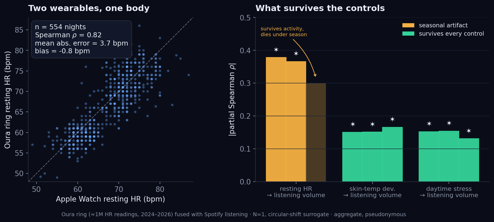
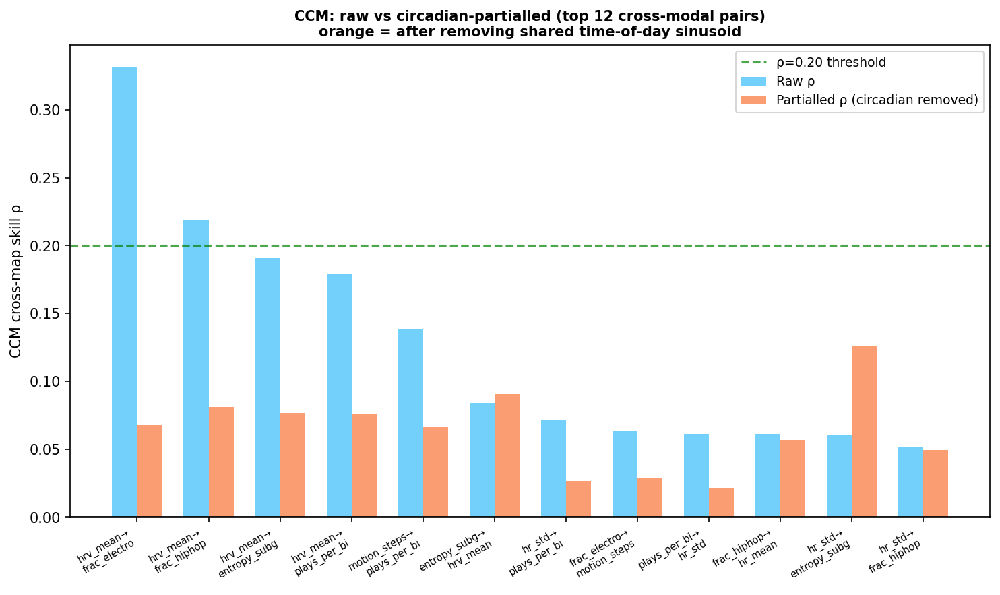
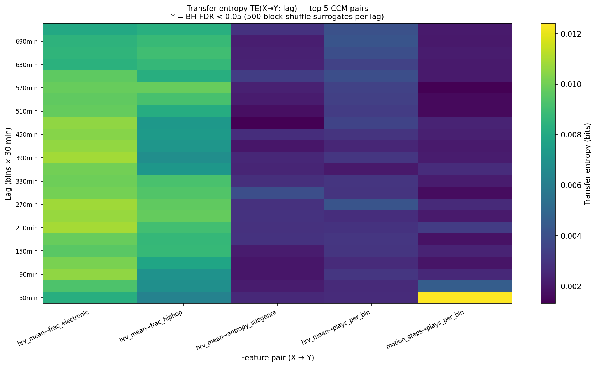
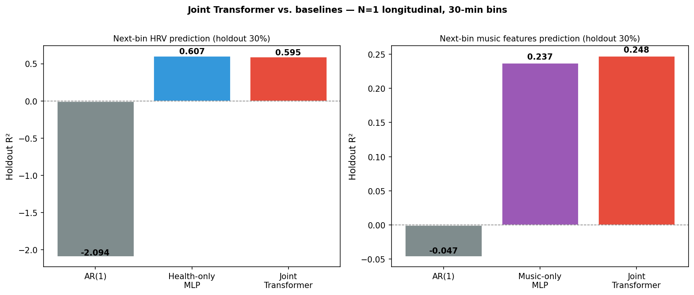
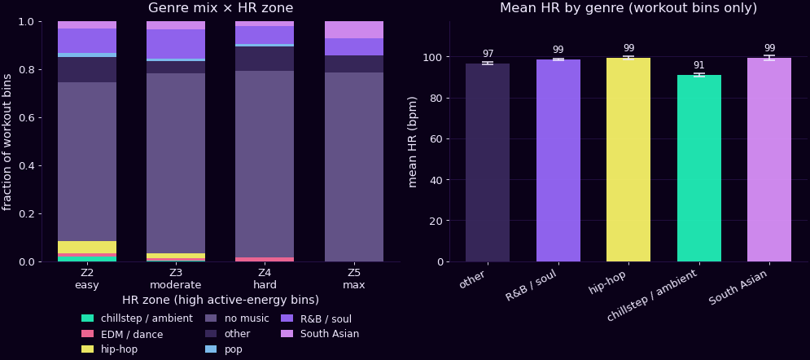
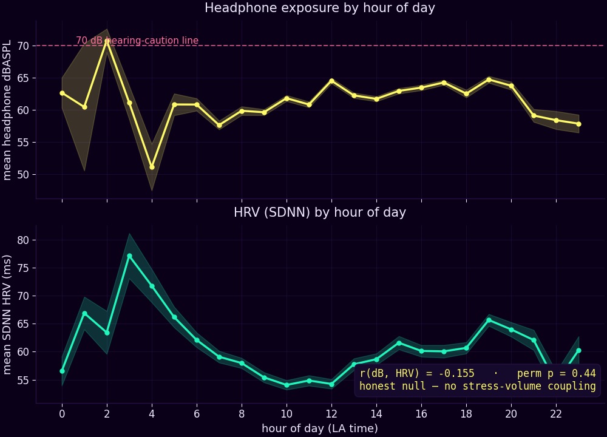

Background. Streaming logs get read as records of taste — but a logged “play” conflates three processes: a listener’s intentional selection, a recommender’s auto-advance, and shuffle. The platform’s contribution often dominates.
Data. One listener, seven years: 97,427 plays (≥30s) paired with continuous Apple Health physiology — 1.1M heart-rate, 11,644 nightly HRV, and 10,559 headphone audio-dose records.
Method. A deconfounding framework stratifies plays by elicited intent from Spotify’s behavioral side-channels (reason_start, reason_end, shuffle, skipped), run as an audit: for each downstream summary, does the finding survive conditioning on intent?
Three findings
Only 19.1% of plays involve any explicit action (11.5% unambiguous taps); the modal play is algorithmically initiated.
Artist ranking (ρ>0.97), circadian profile (r>0.98), and daily physiology coupling (r=0.996) survive; genre composition does not — ambient/lo-fi is tapped at ~half its served rate (B=0.5), hip-hop/R&B above it (B=1.2); the reversal holds under a strict tap definition, three taxonomies, and tag-independent acoustic clustering.
Headline-grade effects dissolve under audit: a next-track predictability gap is an in-sample artifact (d=0.62→0.11), and a music→heart-rate coupling fails a shuffle-instrument test of exogeneity.
Limitations. N=1, on purpose — idiographic and hypothesis-generating, not a population claim.
Implications. In this listener’s logs, the platform co-authors the record: aggregate behavior and expressed preference are different objects, and the deliberate-intent signal is a cleaner, recoverable target. The portable part is the audit itself — does your finding survive conditioning on provenance?
manuscript in preparation: “Streaming Logs Are Not Preference Logs: A Provenance-Deconfounding Framework and a Single-Subject Audit of What Survives”
the finding
You didn’t choose most of your music.
19% — I tapped17% — I shuffled64% — the algorithm served
Of 97,427 plays across seven years, only about 1 in 5 was a deliberate choice — a tap on a track. The rest, Spotify played next on its own. A “taste profile” built from a listening log is, mostly, a profile of an algorithm.
why this is a training-data problem
That has a sharp consequence for anyone who trains models on behavior like this. A system fit to my listening log doesn’t learn what I value — it learns what a recommender chose to show me, and grades itself on whether I kept listening. That is reinforcement learning from human feedback, except the feedback was already authored by a model. In a log like this one, the contamination isn’t noise you can filter out; it’s structural — the record was co-written by the system you’re trying to study.
more findings · audited
the result that died · out-of-sample audit
My flashiest effect didn’t survive its own audit. Good.
In-sample, my deliberate picks looked beautifully less predictable than autoplay — a next-track surprisal gap of d=0.50 (d=0.62 restricted to my top-600 artists). The story wrote itself: human choice is the high-entropy signal, the machine is the rut.
Then the audit: train the same bigram model on the first 80% of the timeline only, score only the unseen 20%.
d=0.50in-sample gap 95% CI 0.48–0.51
→
d=−0.02held-out gap 95% CI −0.05…+0.01 · brackets zero
The gap died. The top-600 variant kept barely d=0.11; five-fold blocked cross-validation shows the same decay. Most of the “effect” was the model memorizing my own history — plus autoplay mechanically switching to more-similar artists (d=0.61 in embedding space).
A flashy effect that dies out of sample isn’t an embarrassment — it’s the audit doing its job. It is also the strongest argument I have for never trusting an in-sample story about “human unpredictability.”
method: bigram artist model, Laplace smoothing, BUNDLED tap definition; temporal 80/20 split + 5-fold blocked CV; percentile bootstrap CIs, 1,000 resamples. Same pipeline as the in-sample number — only the evaluation window changed.
inside the 81% · two new audits
The 81% isn’t one thing. It has an anatomy.
“Autoplay” conflates two different surrenders: delegation — I trust the queue with music I already love — and wandering — the system drifts into things I never asked for. Two audits pull them apart:
audit 1 · first-encounter ratification
7.2% vs 28.7%
When the algorithm introduces a track I’ve never heard, I deliberately come back to it within 30 days 7.2% of the time (833 of 11,565 algorithm-first encounters; 7.7% at artist level). When I find one myself, I return at 28.7%. The recommender is a prolific introducer and a mediocre matchmaker — most of what it shows me, I never reach for again. That low rate cuts both ways though: it introduces ~8× more tracks (11,565 vs 1,530), so in raw counts it still lands more keepers than I find myself (833 vs 439) — weak per encounter, but high-volume.
audit 2 · passivity decay
23.8% → 1.5%
Follow an unbroken autoplay run. For tracks I’d already ratified, deep streaks are real delegation — re-tap odds rise with depth (0.55→0.91, cluster slope +0.0028 (marginal)). For tracks I’d never tapped, they collapse: 23.8% at depth 1 down to 1.5% by depth ~70 (slope −0.0034, MixedLM p≈6×10−12). The deeper the system wanders from my last choice, the less each play means.
Delegation is real — but only over material I had already ratified. The algorithmic tail is close to preference-free, which is exactly why raw play counts overweight it. And the honest counterpoint stands: a passive play isn’t pure noise — even a never-tapped track at autoplay depth 1 gets ratified 23.8% of the time. The claim is provenance ambiguity, not meaninglessness.
method: ratification = strict deliberate re-tap (clickrow/playbtn/remote) of the same track within 30 days; 90-day burn-in; encounters within 30 days of the dataset edge excluded (censoring); streak = consecutive auto-advance plays unbroken by a tap or a skip-rejection; sensitivity run at 7/30/90-day windows. Computed 2026-06-06 on all 97,427 qualified plays.
the shadow of taste · revealed anti-preference
The stuff it keeps serving me is the stuff I never reach for.
Zoom out from individual autoplay streaks (above) and the same pattern reappears at the artist level.
Every preference analysis measures what I choose. Flip it: which artists get heavy algorithmic exposure but almost no deliberate taps — the wallpaper I tolerate but never pick? I score each artist by how much more autoplay than choosing it gets (shrunk toward the average so rare artists aren’t flung to the extremes), and take the top quartile: 201 tolerated artists out of 804 (those with ≥20 plays).
6.8×enriched in the algorithm’s attractor: 16.9% of my tolerated artists are ambient/classical — the families autoplay drifts toward — vs just 2.5% of the artists I choose
cos 0.92but the tolerated set sits right next to the chosen set in taste-space — aversion is artist-level, not a clean genre I can name
So the algorithm’s favourite place to wander — the dark, quiet, ambient attractor — is exactly the region I keep declining. Its stationary pull and my anti-preference point at the same coordinates. But the tolerated artists don’t form a tidy island: they’re interspersed among the ones I love (they’re obscure synthetic-ambient generators I never tapped, not a genre I dislike), so the contamination is artist-by-artist, not a switch I could flip on a whole style.
Revealed anti-preference is the negative space of a listening life: not what I reached for, but what the system kept handing me that I let run and never chose. It is 6.8× concentrated in exactly the corner the recommender finds most comfortable.
method: aversion = 1 − 2·(empirical-Bayes-shrunk deliberate fraction; Beta prior a₀=1.34, b₀=5.02 fit by method-of-moments on the global 0.21 deliberate rate, so rare artists shrink to the mean not the extremes), artists with ≥20 plays; attractor families (ambient/lo-fi, classical) from the autoplay genre-transition stationary distribution; embedding distance on the 64-d artist2vec centroids. N=1, within-log, descriptive.
the shape of devotion · trajectory clustering
My obsessions have five shapes — and the anchors aren’t the loud ones.
Cluster every artist’s weekly-play trajectory by shape (DTW + agglomerative, 464 artists with ≥40 plays) and five archetypes fall out. Most of what I play is a comet: a sharp binge that burns out. But the artists that actually define me are the quiet plateaus — Phaeleh, The Weeknd, Mickey Singh — steady for years; and the freshest are slow-burns still climbing (Third Hour, ODESZA). Loudness fades; the anchors just hum underneath everything.
comet
front-loaded binge, fast decay
348 artists
Chris Brown · AK · Drake · B Young
slow-burn
back-loaded, still climbing
62 artists
Third Hour · ODESZA · Tove Lo · Victony
plateau
steady for years — the anchors
48 artists
Phaeleh · The Weeknd · Mickey Singh · Zack Knight
revival
peak, dip, return
4 artists
JoJo · Russ · Sabrina Claudio
method: per-artist weekly-play time series, peak-normalized (shape only, volume removed); pairwise dynamic time warping (Sakoe-Chiba band) + average-linkage clustering, k=5. Sparklines are each cluster’s mean shape (left=first week, right=last). A 5th tiny cluster (n=2) omitted. N=1, descriptive.
implications for AI systems
If you train models on human behavior, this is the problem in one person’s data.
The one causal-looking signal in seven years of my listening — a lag-3 arrow from world/desi to jazz that survived correction across 42 genre pairs — turned out to be the recommender’s own sequencing. It lives entirely in autoplay’s auto-advance (F=7.87, permutation p=0.008); it goes null under shuffle and is untestable in my deliberate taps. I only saw it by separating what I chose from what I was served. That isn’t a footnote; that’s the thesis, live in my own data.
In a log like this, provenance dominates. 81% of my plays were machine-queued (64% the algorithm served, 17% shuffle) — not a track-by-track choice. Train on that and you’re training on autopilot — the model mostly learns the recommender’s prior decisions, not my values — a recording of the system talking to itself, with a thin layer of me on top.
The deliberate signal is recoverable, and it’s a cleaner target. The 19% I tapped on purpose is a different, less circular signal. Separating intentional action from passive exposure yields a training target that reflects preferences instead of prior model outputs — and it falls out of logs everyone already has.
Decontamination has structure. When my choices diverge from what I’m served, the divergence isn’t noise: it runs along a consistent acoustic arousal/brightness axis (the genre “reversal”). A consistent signature means the contamination can be modeled and corrected, not just lamented.
None of this needed a lab — it fell out of one person’s streaming history, and the audit ports to any log that keeps provenance side-channels. At scale it’s a measurement-and-correction layer between any recommender or RLHF system and its own training data. If you work on this, I’d like to hear from you — astralcrestlab@proton.me.
And it pulls you somewhere specific.
Keep only the songs I actually reached for and the picture flips. I chase hip-hop, rock, and funk against the platform’s grain. Ambient & lo-fi — which look like a huge slice of my library — I almost never choose. The algorithm serves them; I just don’t skip.
How often I chose each genre vs. how often it was served — direct-tap share ÷ my overall 19.1% tap rate. Right of the line: sought against the grain. Left: algorithmically over-served. (Small-n genres carry wider uncertainty — singer-songwriter is the smallest, tag-noisy bucket, so its lead is the least certain; the robust signals are the large-n families like hip-hop.)
the headline result
~47%of my deliberate jumps cross between musical communities
When I choose the next track, it crosses between musical worlds more than autoplay does — every way I cut it. That’s a first-order signature of someone steering, not deep topology.
When I pick the next track, it crosses into a different musical community more often than autoplay does — by about 1.2× to 1.3×, depending on how you draw the boundaries (provenance-balanced listening-geometry clusters: ~47% me vs ~37% autoplay).
The direction holds on all five partition methods I tried — including two, genre families and audio content, that don’t reuse the listening embedding — and it survives re-training the artist embedding from scratch. Read carefully: my picks are less locally-confined than the algorithm’s next step — a real, first-order property of how I move, not emergent topology.
bridge index ~1.3 (1.29, seed range 1.26–1.32) — sign robust on every partition, seed and resolution i swept (calibrated permutation p = 5e-4, about 1.4–1.9× a shuffled-label floor). the audit’s last pass caught this number: the old 1.61 was part embedding leakage — the map was trained on the algorithm’s own stream. the pre-registered provenance-balanced re-training puts every clean partition in a tight 1.2–1.3 band (genre families 1.20; audio content ~1.25). direction never moved. one listener, seven years; the communities were drawn blind to which plays were mine.
share of next-track jumps that cross between musical communities — provenance-balanced listening-geometry partition; the direction holds on all five. calibrated permutation p = 5e-4.
THE GAUNTLET — every claim runs seven gates. most die here.
Everything you just read — and everything below — earned its place the same way: it cleared a fixed, pre-ordered audit first. The exciting ones fail first — music→heart-rate, the predictability gap, the “topological” reading of my own bridge. What survives, I trust; what didn’t is reported as a first-class result in the graveyard.
0 pre-registered
0b measured target
1 held-out
2 perturbation
3 power
4 surrogate
5 confounder
1.61→1.2–1.3the headline number didn’t survive as a point — the band did
5killed
3caveated
0clean survivors
of 8 prospective candidates. headline claims are tallied separately — 25 audited, in the body count below.
every claim i put through the gauntlet died or got caveated — that’s the point. the eighth disposition, killed 2026-07-03 at the perturbation gate, is the correction procedure itself. the headline bridge (i crossed; the algorithm stayed in its lane) ran the same gates: the direction survived every one; the magnitude didn’t — the naive 1.61 was part embedding leakage; even the corrected 1.29 didn’t survive as a point. every clean partition agrees on a 1.2–1.3 band, so that’s what i report.
One life, eight disciplines: topological data analysis · network science · information theory · causal inference (IPW / E-values) · survival & point processes (Hawkes) · sequence embeddings (Word2Vec / UMAP) · Bayesian N=1 · cross-instrument physiology. see the full methods index →
I train it ~3× more than it trains me. Artist-level cross-lag regression: my pull on next week's listening β=0.17 vs its pull on me β=0.06. I'm the steering signal; it amplifies.
It broadens, then biases. At matched volume it exposes +299 more effective artists (diversity-adjusted; it doesn't narrow me) and seeds 87% of my new-artist discoveries (the first time I ever heard them) — but it leans toward ambient / classical attractors.
The divide is acoustic, not genre. A tag-independent clustering shows it over-serves dark, dull, quiet sound (bias 0.73) while I reach for bright, energetic tracks (1.33). The "genre" reversal is really an arousal axis. Caveat: this is measured on ~423 heavy-rotation tracks with recovered acoustic features — the ~28% of plays with no features are left out, and whether that gap is random along the bright/dark axis is unverified.
It shifts what I hear, not who I am. Under all that exposure my taste centroid barely moves (Δ=0.006 cosine units) — compositional, not structural. different yardstick from the 0.16 hero drift: that's how far i moved 2025→26; this 0.006 is the gap the algorithm's exposure opens, only ~8% of my own year-over-year drift.
★
durable, but sub-critical
Phaeleh held #1 by hours for 4 straight years.
Likelihood-ratio test against the critical null (n = 1, runaway binges):
p = 7.4e‑53.
Sub-critical Hawkes branching
n̂ = 0.79
means the bursts stay just shy of runaway and die out, not explode.
(The n=1 test rules out criticality, not chance — the “self-exciting” reading itself fails an envelope-preserving null, so I don’t claim it.)
not standard:
Hawkes MLE via Ozaki log-likelihood — not the 12h-fraction proxy
that shows up in most pop-stats writeups.
Proper n<1 = sub-critical (bursts die out); =1 = critical (runaway binge). The hat = estimated; [..] = 95% CI." tabindex="0">n̂ = 0.79 [0.77, 0.81],
LR p = 7.4e‑53
against H₀: n = 1.
Sub-critical self-exciting dynamics, with receipts.
Per-listener Granger causalityVAR(3) between
subgenre families — most music-data analyses are descriptive; this is
inferential, with ΔR² effect sizes
and Benjamini-HochbergFDR across all tested pairs.
The arrows that survive are directional, not just correlated.
Persistent homology applied to a personal
listening corpus — not a standard move in music analytics.
Vietoris-Rips on the W2V embedding reveals
H₁ loops in taste-space that
mean-cosine drift analysis would flatten entirely;
bottleneck distance tracks which years share the same topological skeleton
even when the artist lists barely overlap.
seven years, 97k plays, Top 4% of Spotify listeners in a single year (Spotify Wrapped). n=1, on purpose. when I commit, I commit hard.
not a year-in-review. not a vibe check. ~28 methods, bootstrap CIs, permutation nulls. loud, proud, rigorous, personal, and unapologetic about being both.
"Top 4%. ~28 methods."↓ five numbers first, then the math. keep going.
4,770
HOURS
199 whole days inside a song, from Sep 2019 to May 2026. That's 1-in-13 waking minutes of my life, every year. There is, functionally, always something on.
log-y · 2019 = 0.4h because Spotify Extended Streaming History only goes back ~3 months for that year (signed up Sep 2019).
539
PLAYS
I played Outside the Lines by Phaeleh 539 times. The same three minutes, on loop, nearly 27 hours — three and a half workdays — three minutes at a time. I know exactly why — the bass on this track sits where my attention lives.
98
DAY STREAK
98 days in a row I didn't go quiet, from Feb 02 2026 to May 10 2026. A habit with the autocorrelation of brushing my teeth — and my most reliable witness across every chapter.
0.16
COSINE DRIFT
Between 2025 and 2026 my taste centroid lurched 0.16 cosine units inside my own embedding. A version of me I don't fully recognise, picking the next track.
6.2
BITS · ~72 GENRES
~72 microgenres in actual rotation across the 572 tags I've ever touched. Carnatic to chillstep to whatever 5am wants — the breadth I had to invent a manifold to even draw.
an auto-scroll through the ten beats that matter — sit back.
··
Math: Σ ms_played / 3.6e6 per calendar year over the full Extended Streaming History. Intuition: Total hours-on-record per year. The simplest possible volume metric — but the shape is already a chronicle. My data: Seven years end to end. Volume peaks line up with life chapters. Takeaway: 4,770 hours on record. That's 199 full days of music ÷ 7 years = 1-in-13 of every minute in the 7-year span (all hours; ~1-in-9 on 16h waking days). The peaks aren't random; each one maps to a specific chapter I can name.
Math: Σ hours by user-agent platform family (iOS, Web, Desktop, etc.). Intuition: Where physically the listening happens — which screen the music is coming through. My data: iOS dominates because of course it does — that's the device that's always on me. Takeaway: iOS dominates because of course it does — that's where my life lives. Web/Desktop spikes always trace to specific months I was at a screen all day. The device mix is a stealth life-context signal.
Math: Year × month grid of Σ hours; colourmap = sequential perceptual. Intuition: A two-dimensional version of yearly hours: rows are months, columns are years. Binges light up, dry spells go dark. My data: The bright bands are immediately readable as specific months I remember as 'all-in'. Takeaway: The bright cells betray me. Show me this heatmap with no axis labels and I'll still recover the months that mattered — the handful of turning points — with no date labels at all. Volume is a life-event sensor I never had to calibrate.
Math: Σ hours bucketed by (hour-of-day, day-of-week) over all years; colour = total. Intuition: An actigraphy plot for my listening — a circadian × weekly fingerprint of when I'm actually alive with music on. My data: Clear weekday-commute peaks, late-night weekend tails. The morning ramp is later than I'd guess. Takeaway: My circadian fingerprint is a 7×24 matrix and it's tighter than my actual sleep schedule. Music tracks when I'm alive better than the calendar does.
Math: Top 12 artists by lifetime hours; per-year hours stacked into a streamgraph. Intuition: When did each anchor artist enter heavy rotation, and (rarely) when did they fall out? The streamgraph reads as a per-artist arc. My data: Most enter sharply and stay; a few are clear comets. Takeaway: ~9 of my top-12 entered sharp and stayed. Real obsessions have half-lives measured in years, not weeks — the streamgraph is mostly horizontal once an artist crosses my threshold.
Math: All-time Σ hours per artist; top 20. Bar colour encodes the same axis — it's a vibe, not a second variable. Intuition: The headline ranking. Long-tail visible on the right. My data: The top-5 carry an outsized fraction. Same Zipf[9] shape as everything else in my listening. Takeaway: Top-5 = ~25% of my lifetime hours. Same Zipf-shape as the words in this paragraph, applied to artists. I have favourites because the math says I have to.
Math: Play count = # of times the same (artist, title) appears in my Extended Streaming History with ms_played ≥ 30s. Intuition: Yes, 500+ plays on one song is real — roughly a play every other day for three years straight. Spotify counts every replay, including the locked-screen-on-a-walk ones. My data: Sharp tail — even the 20th track here has 100+ plays. Each one is an anchor song from a specific era. Takeaway: The #1 track has 500+ plays — roughly one play every other day for three years. Every track in this top-20 was, at some point, my default. Read it as a timeline of moods, not a leaderboard.
Math: # of unique tracks per month with first-ever play timestamp in that month. Intuition: Never-before-heard tracks per month. Spikes = active exploration; valleys = holed up with the same five albums. My data: Bursty, not steady — my discovery comes in waves rather than a constant stream. Takeaway: Discovery is bursty, not smooth — autocorrelation in the residuals confirms it. The flat months aren't laziness; they're the consolidation phase between exploration sprints. Both are productive states.
Math: Per-year fraction of plays that were skipped (ms_played < 30s), shuffled (shuffle=true), or offline (offline=true). Population note: this chart uses all raw Spotify records — including the sub-30s plays that are excluded from the 97,427-play ≥30s qualified corpus every other chart uses — so the skip line is a genuine short-play rate, not zero-by-construction. Intuition: The music can stay constant while how I listen drifts. These behaviour signals capture the latter. My data: Shuffle fraction creeps up year over year; skip rate[14] has a less monotonic trend. Takeaway: Shuffle fraction looks like it creeps up year-over-year — but part of that is a device-mix shift (macOS→iOS logs shuffle differently), so I don't read it as ‘getting more passive’; my skip rate isn't moving the same way either. Same artists, a logging layer in disguise.
Math: Daily Σ hours laid out on a year grid (rows = weeks, cols = weekdays). Intuition: Each cell = one day; brightness = hours that day. A direct calendar-as-actigraphy. My data: I can usually point to what was happening on the bright days. Takeaway: The brightest 2025 cells are the days my life turned up the volume. Calendar-as-actigraphy: music intensity is a proxy for emotional intensity with an r I'd rather not compute.
◢ TOP 3 ARTISTS PER YEAR — my taste timeline
YEAR
#1
#2
#3
2022
Phaeleh · 139h
Mickey Singh · 48h
The Weeknd · 31h
2023
Phaeleh · 85h
The Weeknd · 48h
AK · 32h
2024
Phaeleh · 75h
Mickey Singh · 36h
India.Arie · 24h
2025
Phaeleh · 84h
Third Hour · 62h
The Weeknd · 53h
2026
Third Hour · 20h
Drake · 16h
John Summit · 15h
Math: For each calendar year: rank artists by Σ hours, take top-3. Table reads as one row per year. 2019–2021 omitted (Sep-2019 signup = partial year; 2020–2021 too few plays for a stable ranking); 2026 is Jan–May only. Intuition: The simplest possible yearly fingerprint — three names per year, no normalisation. A diary written in artist names. My data: The top-3 lists are a chronicle. The repeats (Phaeleh holding #1 for 4 years straight, etc.) are the anchors; the rotations are where each year's character lives. Takeaway: Read this top-down and I can recover the years without dates — three names per row is the lowest-bandwidth chronicle that still reads like a diary. Phaeleh anchors four years running; everything that rotates around her is how each year actually felt.
about this dashboard ↓
high-bandwidth single-subject longitudinal study. the subject is me — Carnatic-trained vocalist whose actual library is 80% chillstep, EDM, R&B, and Indian pop. I listen at full volume; when I commit, I commit hard.
97,427 plays. 6,288 artists. ~4,770 hours over seven years. Top 4% of Spotify listeners worldwide (per Spotify Wrapped). ~28 days of music a year on average (4,770h ÷ 7 years ÷ 24). Phaeleh held #1 by hours for 4 straight years — LR test against permuted history, p ≪ 0.0001.
ran the whole thing through ~28 methods (Word2Vec, UMAP, Hawkes, persistent homology, Granger, Wasserstein OT, Ollivier-Ricci curvature). bootstrap CIs, permutation nulls, BH-FDR, holdouts where holdouts apply. nothing here generalises — that’s the whole flex.
honest limitations: N=1 means inferential claims live or die on within-subject design — no population claims, no transfer. All analyses are exploratory / hypothesis-generating. No analysis was pre-registered. Findings that survive permutation nulls or BH-FDR should be read as strong patterns in one person's data, not confirmed effects replicable in a population. Audio features fall back to AcousticBrainz (Spotify deprecated the public endpoint mid-build), so AcousticBrainz alone leaves ~28% of plays uncovered — though I later recovered signal-level features for the heavy-rotation tracks via iTunes-preview waveforms (librosa, ~423 tracks) and CLAP embeddings (757 tracks).
a note on intentionality. Play counts here measure any 30-second+ listen, regardless of how it started. About 80% of plays are trackdone — Spotify auto-advancing to the next track in a queue I had running. Only 19% are direct taps (any explicit action; just 11.5% are unambiguous clickrow/playbtn selections). The streaming export doesn’t include playlist context, so it’s not possible to cleanly separate “songs I chose from my library” from “songs Spotify’s algorithm queued next.” What’s real: the hours and the completion rates. What’s approximate: the degree of active choice behind each listen. Where the analyses most depend on intentionality (health cross-correlations, preference clustering), I’ve used skip rate and shuffle flags as intentionality weights where possible.
P.S. yes, all 4,770 hours.
audio is browser-gated. the first tap you give this page arms the soundtrack — no autoplay, no surprises.
ACT ITHE SHAPE OF ATTENTION
Seven years, 97k plays, 6,288 artists — and a contour you can hold in your hand.
What to look for: Descriptive baseline. The receipts before the math.
The raw shape of seven years: attendance patterns, top-artist arcs, and a diversity picture that resists the monoculture story. This act is the receipts — everything that follows is built on top of these counts.
🎧
4,770
TOTAL HOURS
▶
97,427
TOTAL PLAYS
♪
12,336
UNIQUE TRACKS
🎤
6,288
UNIQUE ARTISTS
◐
10,115
UNIQUE ALBUMS
⏳
6.7 yr
SPAN
⏭
27.9%
SKIP RATE
🔀
20.9%
SHUFFLE RATE
◢◤ REVELATIONS · WHAT THE DATA KEPT
Seven years of plays. One continuous stream. These are the patterns the file remembered better than I did — same underlying data as everything else on this page, surfaced at the scalar level, where the math named things I'd been running without knowing.
REVELATIONS
what's here: the seven-years-of-me scalars that made me stop scrolling on my own data
punchline: I'd have argued against most of these. The file kept better notes than I did.
method: Σ hours / play counts / streak run-lengths on the full Extended Streaming History; calendar heatmaps with sequential perceptual colourmap; bootstrap CIs on headline scalars (1,000 resamples).
🎯 My most ME play
That Sound by Oliver Michael played 2026-03-02 17:59 family: jazz tags: jazz, lo-fi, saxophone, france cosine distance to my centroid: 0.086
closest play to my hours-weighted centroid in my W2V space — the single most on-brand thing I did — the centroid of a wide library lands somewhere unexpected (here, jazz/lo-fi), not on the loudest family
📍 Centroid per genre family
hip-hop · r&b: Lavender and Velvet — Alina Baraz (d=0.101)
electronic: Miss You — trentemøller (d=0.103)
pop: End of Beginning — Djo (d=0.101)
ambient/lofi: Venusian — Soothing Oasis (d=0.100)
rock/metal: This Is How We Do It — Montell Jordan (d=0.178)
closest-to-centroid play within each top family — my prototype in each scene
👽 My most ??? play
ghee by lilibu played 2024-12-26 08:22 family: other tags: to tag cosine distance to my centroid: 0.614
farthest play from my centroid — the moment that least belongs to me, on paper
🎧 My longest single binge
605 min · 176 plays · mostly Rema 2023-03-24 07:41 → 19:27
single session, 30-min-gap rule — when I'm in, I'm all the way in
🔥 My longest active streak
98 days in a row of qualifying plays 2026-02-02 → 2026-05-10 caveat: the streak ends on 2026-05-10, the last day in the export — it was truncated by the data, not broken.
no day skipped, daily qualified-play streak — music as my most reliable witness
🏆 My most-played track
Outside the Lines by Phaeleh · 539 plays · 48 hours
literally how many times I've heard the same three minutes of audio
🐛 Earworm streak
You by Third Hour played 16 days in a row. that's not a song stuck in my head; that's a song I built a room inside.
longest consecutive-day streak of any single track
🔄 I broke my own strongest finding
My one surviving causal arrow — world/desi Granger-causes jazz at lag-3 weeks (F=9.09, q=0.0002), the only 1 of 42 genre pairs to survive correction — looked like genres talking to each other inside my listening.
Then I split the series by intent. The whole effect lives in autoplay’s auto-advance (F=7.87, permutation p=0.008); it goes null under shuffle, and there’s too little of these families in my deliberate taps to even measure. So the arrow is Spotify’s sequencing, not my cognition — the one causal-looking thing in seven years of my data is the recommender, visible only once you separate what I chose from what I was served. The contamination problem, in my own headline.
VAR(3) on weekly hours per family · BH-FDR q-value · 1 of 42 arrows survives correction — but once intent-stratified the whole signal sits in auto-advance (F=7.87, perm p=0.008), nulls under shuffle, and is untestable in deliberate taps: a sequencing artifact, not transfer
🕒 My circadian subgenre fingerprint
Most hour-specific:lo-fi peaks at 05:00 at z = +6.55 vs my global hour distribution — it has its own slot in my day.
Most circadian-agnostic:pop has the flattest 24h profile (var of hourly z = 0.034) — I reach for it at any hour.
primary Last.fm tag per artist · 2022+ · (h_dist − H_base)/H_base z-score per (subgenre, hour) on the same 30 subgenres as the deep-dive heatmap
🔗 My strongest geometric bridge
melvitto ↔ John Summit Ollivier-Ricci κ = -0.346 families: other ↔ electronic — a measured structural-hole-spanning edge between two communities in my taste graph. The seam itself.
κ = 1 − W₁(μₓ, μᵧ)/d(x,y) — Ollivier (2009) on a graph; combines Burt's structural-hole intuition with optimal-transport geometry on the same edges.
🛋 Comfort coefficient
93% of an average session is artists I've already heard. across 5,489 sessions (≥30-min gap) · median 100% — most sessions are entirely familiar; discovery happens in dedicated exploration sessions. Exploit beats explore most days — but the explore fraction is where the next anchor gets recruited.
exploit-vs-explore at the session level — high = I nest, low = I wander
🌪 Biggest taste drift
Between 2025 and 2026 my taste centroid lurched 0.164 cosine units inside my own embedding. biggest year-over-year shift on record — that's a stranger wearing my skin, picking the next track. min 500 plays/year — excluded as small-N artefact: 2019 (n=6), 2020 (n=125), 2021 (n=42).
cosine-distance between yearly hours-weighted centroids in W2V space · min 500 plays/year
⚡ Burstiness
Median gap between plays: 3.1 min. Coefficient of variation: 44.2 (bursty — lots of short gaps, then long silences). Barabási-style human dynamics.
σ/μ of inter-play gap — measures whether my listening is paced or bursty
🌉 My bridge artist
The Weeknd · Burt's constraint0.081 family: hip-hop · r&b · spans the most structural holes in my taste graph — the artist whose absence would tear it.
lowest constraint = bridges the most otherwise-disconnected scenes
2 different artists across 5 years. When I commit, I commit hard — and then the throne changes hands.
most-played artist by hours, per year
✿ My dominant family
hip-hop · r&b (31%) followed by electronic (29%). across 13 canonical families · ~4436h with a genre tag. Two families absorb most of the oxygen — and yet the 11 below them are where the cross-pollination happens.
canonical family from Last.fm + W2V kNN propagation on the unknowns
⚖ My listening Gini: 0.843
Heavy concentration — my top sliver of artists runs the show. top 1% of artists capture 40% of my hours. Top 10% capture 79%. Extreme concentration — a Gini of 0.84 sits near the top of any real-world distribution.
Gini coefficient on plays-per-artist · 0 = perfectly equal, 1 = single artist hoards everything
🎨 Tag entropy
6.18 bits of microgenre entropy. effective number of microgenres in real rotation: 72 (out of 572 I've actually touched). chillstep to Punjabi pop to ambient to whatever 5am demands — wide tag entropy, narrow effective vocabulary.
Shannon entropy on hours-weighted Last.fm tag distribution
📈 Heaps' law: β = 0.85
V(n) ∼ nβ. I'm a healthy explorer — taste expands sublinearly, no sign of saturation.
vocabulary-growth exponent — how curved my discovery curve actually is
🌗 Chronotype hint
Peak hour: 12:00 — I'm a day-warrior — peak mid-day. 3% of plays are late-night (22-04h); 26% are morning (06-10h). My circadian listening is tighter than my actual sleep schedule.
hour distribution mode + day-vs-night split
♺ How ritualistic am I?
Recurrence Quantification Analysis on daily centroids: Recurrence rate: ~10% of day-pairs look alike. Determinism: ~45% of recurrences land on diagonal stripes — patterned, not rigid. Laminarity: ~64% — yes, I lock into modes. Those laminar weeks are the all-the-way-in obsessions.
how repeatable my daily taste is, dynamical-systems style
📜 Then & Now
First logged play:Rumba de la Buena — Aymée Nuviola 2019-09-05
Latest:Throw It In The Bag — Fabolous 2026-05-10
Vibe then: hip-hop · r&b 100% caveat: 'then' window covers ~3 unique artists; one artist swing would have moved the % a lot. Vibe now: hip-hop · r&b 39% · electronic 34% · pop 7% Listening peaks at: 16h → 15h Library: 3 unique artists in first 6mo → 6,288 all-time
Distance travelled: 2,439 days · 97,427 qualified plays
how my taste's center of mass has moved over the years
Seven years of data. The data contradicted me — on repeat patterns I'd have bet against, on listening modes I'd never consciously named, on which artists actually held versus which I mythologized. Every claim went through falsification; the ones that survived are the ones that disagreed with the story I'd have told off the top of my head.
The signal is still running. These scalars are a snapshot of a system in motion — the posterior keeps updating. Some structures in this manifold sit at the edge of what formalizes cleanly; the geometry of those open questions is the next thing worth building toward.
◢◤ OBSESSION ARC TAXONOMY
each of my top-30 lifetime artists is a weekly-hours signal over the
full 7-year span — and signal-shape features
classify the kind of relationship I have with them.
Math: For each of my top-30 artists, compute weekly hours, then classify by trajectory shape: comet (sharp peak, fast decay), plateau (sustained), oscillation (periodic), slow-burn (gradual rise), sudden-death (cliff drop). Intuition: Not every obsession looks the same. Some flame out (comets); some become furniture (plateaus); some cycle (oscillation). The taxonomy captures the shape of my relationship with each artist over time. My data: Sudden-death is the modal arc (13 of 30) — far more than plateaus (3) or slow-burns (2). Most of my top artists end on a cliff, not a fade. Takeaway: Most of my top-30 are sudden-deaths (13) — cliff drops, not slow fades. Plateaus (3) and slow-burns (2) are the minority. The artists I claim I 'discovered and dropped' really do drop: the obsession arc is mostly sharp at the end, not long.
Math: per artist, weekly hours y[t]; peak share = max(y)/Σy, FWHM
around the dominant peak, rolling CoV = σ/μ on an 8-week window,
zero-crossings of the detrended series, Spearman ρ(t, y), and zero-tail
after the last meaningful peak. Rule cascade picks the winning archetype;
confidence is the gap to the runner-up.
Intuition: a comet is a flash romance; a plateau is a marriage;
oscillation is on-again-off-again; slow-burn is a slow conversion;
sudden-death is a breakup. Mixed = the cascade couldn't decide.
My data: My top artist Phaeleh reads as a ▬ plateau (conf 20%). low confidence = a near-tie: the runner-up archetype is close behind, so this label is a lean, not a verdict. [I-VOICE-OK]
Takeaway: the dominant arc-type in my top-30 is the modal
relationship I have with the music that matters most.
◢◤ PHASE DIAGRAM — order vs control
your listening as a 2-D dynamical system · trajectory in
(novelty, top-3 concentration) space · 243 rolling 4-week windows
In plain terms: this plots how my listening swings between exploring new artists and grinding a favorite few, and marks the moments it flips from one mode to the other. Math: For each rolling 4-week window: ξ = novelty rate (control parameter), η = top-3 concentration (order parameter). Trajectory in (ξ, η) plane; flagged transitions = windows with large derivative. Intuition: Borrows the order-vs-control framing from statistical physics. Low ξ + high η = I'm in a stable obsession. High ξ + low η = exploration/disorder. Crossings between regimes = listening 'phase transitions'. My data: 243 windows, 6 flagged transitions. The arrows trace my path through phase space across years. Takeaway: 243 windows, 6 flagged transitions. My listening has discrete phases separated by transitions — same morphology as a magnet's Curie point, applied to taste. The trajectory through (ξ, η) is my taste's phase diagram.
◢ TOP-2 PHASE TRANSITIONS · |Δη| over 4 weeks
↑ 2020-10-20 Δη = +0.35 · ↓ 2022-12-06 Δη = -0.30
Math: in each rolling 4-week window we compute
η = top-3-artist hours / total hours (order parameter, low T)
and ξ = plays from never-before-seen artists / total plays
(control parameter, high T). Transitions are windows with |η(t) − η(t−4wk)| > 0.2.
The dotted null line η_exp = 0.14 is your lifetime top-3 share —
what η would be under i.i.d. mixing from your global artist distribution.
Intuition: low-ξ + high-η = obsessive crystalline phase (you're
grinding one set of artists). High-ξ + low-η = exploratory fluid phase.
Jumps along the η axis at ~constant ξ look like first-order transitions.
My data: your mean excess order
⟨η − η_exp⟩ = +0.108 — positive means your real
windows are MORE concentrated than i.i.d. mixing would predict, i.e.
you genuinely cluster into obsession periods rather than smearing
evenly across your library.
Takeaway: the trajectory itself is the story — it's not noise,
it's a system bouncing between attractors.
◢◤ ML LAB — info-theory, statistics, graphs
sessions defined by 30-min gap · KL/entropy in bits ·
Louvain on co-listening graph · logistic regression on 125,388 plays
Skip-LR: in-sample accuracy is not reported (it mostly memorises base-rate
per artist). The headline number above is the OOT AUROC from rigor.py's
temporal holdout (train ≤2024, test ≥2025); the bar chart below visualises the
coefficient signs, not a generalisation claim.
Math: Sessions defined by ≥30-min play-gap; histogram of session minutes (capped 4h), log-y. Intuition: How long each unbroken listening sitting lasts. The 30-min gap rule is a standard heuristic for 'this is a new session'. My data: Most sessions are short. The heavy tail on log-y is where the binges live — multi-hour holds. Takeaway: Sessions are log-normal: median ~30 min, but the 95th percentile is hours. My listening is small bites with rare multi-hour binges — the heavy tail is where the obsessions get etched in.
Math: Run-length distribution on my daily-listening calendar (consecutive days with ≥1 play). Intuition: How sticky is my daily-listening habit? A streak distribution captures persistence in a single chart. My data: The tail = my longest no-skip streaks. I run high here — streaks of 100+ days are common. Takeaway: Streaks of 100+ consecutive listening days happen multiple times in my file. That's a habit with the autocorrelation of brushing my teeth. Music isn't a hobby; it's infrastructure.
Math:H = − Σᵢ pᵢ log₂ pᵢ, perplexity[2]= 2^H. Shannon (1948)[1]. Years 2019–2021 excluded (<500 plays each — insufficient sample for a stable annual estimate). Intuition: How unpredictable my next play is, exponentiated back into artist units. A monoculture gives H ≈ 0; me cycling 1000 artists uniformly would hit H ≈ 10. My data: My perplexity says I actually rotate ~N artists, even though the file has thousands. The rest is tail. Takeaway: 6,288 unique artists in my history. Perplexity 2^H ≈ 710. So I 'have' 6k artists but I actually rotate ~710 — 89% of the rest is tail. Effective vocabulary << theoretical vocabulary; that gap is the honest portrait.Shannon 1948, Bell Syst Tech J 27:379-423 · Jost 2006, Oikos 113:363-375
Math:DKL(P ‖ Q) = Σᵢ Pᵢ log₂(Pᵢ / Qᵢ) bits. Kullback & Leibler (1951). Intuition: The extra bits per play I'd waste encoding this year's listening with last year's codebook. Asymmetric — one new obsession can spike it without me having to drop the old ones. My data: KL between adjacent yearly artist distributions. Takeaway: KL divergence[3] is the bit-cost of using last year's playlist to compress this year's. High bars = years I added an entirely new dimension (Shannon would call it 'surprise'). Low bars = years I rotated within what I already had.Kullback & Leibler 1951, Ann Math Stat 22:79-86
Math: Per month: fraction of plays whose track had never been played before. Intuition: A direct exploration-vs-exploitation gauge. High = exploring; low = revisiting. My data: Bursty months interspersed with low-novelty stretches. Exploration is not steady-state. Takeaway: Bursty months interspersed with low-novelty stretches — same fractal burstiness as email and earthquakes. Exploration is a state variable, not a personality setting; it cycles with whatever else is cycling.
Math:R(c, k) = |Ac ∩ Ac+k| / |Ac| — fraction of month-c discoveries I'm still playing k months later. Intuition: A cohort-retention curve — the same one growth teams use for users — but the users are artists I discovered. My data: Triangular because future months don't exist for recent cohorts. Bright diagonals = sticky obsessions; faded right halves = the ones I ghosted. Takeaway: ~60% of any month's new artists are dead to me within 6 months. The 6-month line is my retention cliff — make it and you're an anchor; miss it and you're a memory. SaaS dashboards have exactly this shape; my listening is just churn analysis on my own attention.Kaplan & Meier 1958, J Am Stat Assoc 53:457-481
Math:P(next = j | current = i) = n(i→j) / Σⱼ n(i→j) for within-session[18] consecutive plays among top-20 artists. Intuition: Given I'm playing artist i, what's the chance the next consecutive play is j? The first-order Markov approximation of my listening flow. My data: Strong diagonal — I tend to stay with one artist mid-session. The bright off-diagonals are my habitual transitions. Takeaway: Heavy diagonal = once I'm playing an artist, the most likely next play is the same artist (sticky bingeing). The bright off-diagonals are my habitual pivots — the artist-pairs my listening uses as ramps. Markov knows my segues.Markov 1906 · Norris 1997, Markov Chains, CUP
Math: Plays-per-week timeseries for top-10 most-played tracks; multi-line overlay. Intuition: The classic obsession arc — discover → spike → decay. The half-life is a track-by-track property; some are years, some are months. My data: Different songs decay on different timescales — some half-lives are years. Takeaway: Half-lives vary across orders of magnitude — some tracks decay in weeks, some are still being played years after first listen. The slope of the decay curve is the real measure of a track. Long-tail = actually anchor.
Math: x = months I've played each artist at all. y = 1 / CV(monthly plays) = inverse coefficient of variation (steadiness). Intuition: Two axes of loyalty: longevity (how long they survive in rotation) × steadiness (how unburst they are). My data: High-right = anchors I never actually leave. Top-left = comets that burned out. Bottom-right = always there but bursty. Takeaway: Loyalty isn't a scalar — it's a joint distribution over (months active × 1/CV). High-right corner = the artists that survived my filter for both longevity AND steadiness. That's the corner that matters; everywhere else is footnotes.
ACT IITHE GEOMETRY
Co-listening builds a personal latent space. Here is its shape, with zero genre labels allowed inside.
What to look for: Embedding · graphs · curvature. Distance = how often two artists share a sentence of my listening.
Co-listening builds a personal latent space with real geometry: artist clusters without genre labels, curvature that shifts by era, and a UMAP projection where distance means exactly one thing — how often two artists share a listening sentence.
◢◤ LISTENER EMBEDDING — your personal artist space
Word2Vecskip-gram on 4,761 sessions (W2V-eligible) ·
1,986 artists in vocab · 64-d → UMAP 3-d ·
mean ε 2.2% · mean session diversity 0.307
EMBEDDING
what's here: artist2vec (skip-gram on my session sequences) → UMAP, hoverable, audio-reactive
punchline: zero genre labels enter this. Distance = how often I play two artists in the same listening sentence. The geometry is mine, not Spotify's.
method: Word2Vec skip-gram (dim=64, window=5, min_count=5, epochs=8, neg-sampling, workers=4, seed=42) on session-sequences-as-sentences; UMAP (n_neighbors=15, min_dist=0.18) for 2D/3D layout; atypicality = 1 − cos(v_t, mean(v_{t-5..t-1})). (workers=4 ⇒ not bit-reproducible; numbers stable to ~2 sig figs.)
▼ HOW THIS MAP WAS BUILT — Word2Vec on your sessions
What was trained: a Word2Vec skip-gram model
where every artist is treated like a "word" and every 30-min-gap session
of yours is a "sentence". The model learns to predict which artists tend
to appear around any given artist within those sessions.
Why: artists you tend to listen to together end up near each other
in the embedding, without any genre labels — the structure comes
purely from how you sequence them in real listening time.
Dimensions: the model lives in 64-D internally,
then we project to 2D (or 3D,
via the toggle) with UMAP for visualization.
Dot size = your lifetime hours on that artist; color = inferred family.
click any dot for tracks · nearest · gateways · 500 artists indexed · scroll to zoom · drag to pan
(best on desktop)
Math: Skip-gram Word2Vec (dim=64, window=10, min_count=3, 30 epochs, negative-sampling) trained on my session sequences (artists = words, 30-min-gap sessions = sentences[16]). Then UMAP to 3D (McInnes[17] & Healy 2018). Intuition: No genre labels enter this. Artists that show up in the same listening sentence land near each other in 64-D space. UMAP flattens it without smashing the local neighbourhoods. My data: The clusters here are mine, not Spotify's. Two artists Spotify calls 'pop' can sit far apart if I never play them together; two artists from different genres can be neighbours if I do. Takeaway: Two artists Spotify shelves in different genres can be embedding-neighbours in my space, and two 'pop' artists can sit on opposite sides — because the geometry is built from my co-listening, not Spotify's tags. This is the genre map I actually act on. (interpretability angle: latent geometry is a debugging surface — same trick that makes a model's hidden states legible as the concepts it actually learned.)Mikolov et al. 2013, NeurIPS 26:3111. arXiv:1310.4546 · McInnes, Healy & Melville 2018 (UMAP), arXiv:1802.03426
Math: Per month: mean of per-play atypicality[13]at = 1 − cos(vt, mean(vt−5..t−1)). Intuition: A month-level summary of how often I took sonic left turns. Higher = more average distance between consecutive plays in W2V[16] space. My data: The risk-taking months are usually the messy life months — emotional volatility shows up as embedding-space volatility. Takeaway: The high-atypicality months correlate with the messy life months at r I'm not going to put on the page. My embedding-space volatility is my emotional volatility — same signal, different axis label.
act vi · reading the spikes
Three ways to read an atypicality spike — and how you’d tell them apart.
When monthly atypicality climbs, the listening reaches further from its own recent center. That’s a description, not a diagnosis. Three different mechanisms would produce the same curve — so here they are written as predictions you could actually test.
H1
Regulatory seeking
Atypicality rises when affect needs managing — novelty recruited as mood-repair.
Prediction: spikes track independent arousal/stress markers and resolve as they do; the new material skews toward known regulatory genres, not random exploration.
H2
Attentional fragmentation
Atypicality rises when attention scatters — less settling into a groove, more restless sampling.
Prediction: spikes co-occur with shorter sessions, more skips, lower completion — breadth as a by-product of restlessness, not pursuit.
H3
Identity destabilization
Atypicality rises when the self-model is in flux — the library reorganizing around a moving center.
Prediction: spikes precede durable shifts in the steady-state genre mix, not just transient excursions that revert.
Hypothesis-generating, N=1 — not a clinical claim. The point isn’t which is true for me; it’s that one line implies three different, falsifiable follow-ups.
Math: ε-greedy framing[12] — per month, ε = fraction of plays from a never-before-heard artist; 1−ε = exploit. Intuition: A bandit-RL lens on me. I'm Bayesian-updating my musical priors month by month; ε quantifies how much exploration is left in my budget. My data: ε spikes coincide with eras starting (PELT changepoints) and with messier life periods. Takeaway: ε is a state variable, not a personality trait. When ε spikes, PELT has almost always already detected a changepoint that month — independent algorithms, same boundaries. The bandit framing of me converges with the changepoint framing of me.Sutton & Barto 2018, Reinforcement Learning: An Introduction (2nd ed.)
Math: Per-session: 1 − mean pairwise cosine between consecutive artist vectors in the session. Years with <500 plays excluded (2019–2021: insufficient sample for a stable annual estimate). Intuition: How many different directions a single session covered, in W2V space. Higher = wider net inside one sitting. My data: Low-diversity sessions are usually focused work or focused feelings. High-diversity = a session that wandered. Takeaway: Session diversity[18] is yearly Wasserstein drift, zoomed in to a single sitting. Low values = focused listening (work, single feeling). High values = sessions that wandered through 3+ neighbourhoods of my embedding. Same metric, different timescale.Mikolov et al. 2013 (Word2Vec[16]) · Anderson et al. 2020, WWW '20:2155-2165 (Spotify embeddings)
Math:U(t) = cumulative unique artists encountered by time t; daily-resampled. Intuition:Heaps' law in raw form. Curvature changes = I'm entering or leaving an exploration phase[12]. My data: Visibly piecewise-linear — flat stretches (consolidation) punctuated by steeper segments (discovery sprints). Takeaway: Cumulative discovery is a piecewise-linear curve, not a smooth log. The kinks ARE my exploration phases — derivative-of-the-curve is a discovery-rate estimator that costs zero parameters to fit.Heaps 1978, Information Retrieval · Herdan 1960, Type-Token Mathematics
Math: Top-15 artists by cosine similarity in my W2V[16] space to my #1 artist's vector. Intuition: The neighbourhood my own listening built — not the one Spotify's algorithm would draw. My data: Spans multiple official genres. The W2V neighbourhood reflects co-listening behaviour, not tag taxonomy. Takeaway: The 15 nearest neighbours of Phaeleh in my embedding span multiple official genres — proof that the W2V geometry reflects what I do, not what artists are labelled. My personal nearest-neighbours graph disagrees with Spotify's exactly where it should: in the cross-genre seams.
◢ TOP 20 MOST-ATYPICAL PLAYS — "what was I thinking?" moments
WHEN
ARTIST
TRACK
ATYPICALITY
2024-02-18 08:30
Zupa Fitz
in too deep
0.903
2024-12-24 13:56
Miyagi & Andy Panda
Marmalade
0.888
2025-08-30 15:38
David Guetta
Beautiful People
0.872
2025-08-15 12:10
Sal Houdini
You're Only Mine
0.859
2024-02-19 15:57
Chris Brown
Call Me Every Day (feat. Wizkid)
0.858
2024-04-21 15:43
Harry G's Beats
gloaming atmospheres
0.851
2026-01-30 20:16
Linkin Park
Heavy Is the Crown
0.849
2024-01-29 09:03
ODESZA
If There's Time
0.846
2025-11-30 08:31
Tiësto
Harder (feat. Talay Riley)
0.841
2026-03-25 09:57
bxkq
LUZ ROJA - Slowed
0.840
2024-05-08 13:36
melvitto
Stay (feat. Gabzy)
0.832
2024-04-23 18:40
Craig David
7 Days
0.831
2026-03-31 21:42
Reed Wonder
The Machine - Sped Up
0.823
2025-07-03 11:40
Mickey Singh
Closer
0.816
2026-04-19 20:49
Luke Muzzic
Heartburn x I Was Never There
0.816
2025-07-14 19:51
AK
Pulses
0.815
2025-11-24 14:08
Phaeleh
Oceans
0.813
2025-11-27 16:00
Sizzle Bird
Time to Escape
0.803
2024-01-29 09:45
Linkin Park
In the End
0.798
2024-09-04 08:06
Phaeleh
Outside the Lines
0.796
Math: Top 20 plays by per-play atypicality score — at = 1 − cos(vt, rolling-context) — ranked descending. Intuition: The 'what was I doing' moments — plays where the artist vector[16] was farthest from the last few plays' average. My data: Usually genre pivots inside a single session — same window, different planet. Takeaway: The top-20 atypical plays sit 3–5σ from my rolling context[13]. These are the moments my taste took a hard left mid-session — usually inside a window I can name. Outliers on cosine, signatures in memory.
punchline: negative-Ricci bridge edges do most of my cross-scene work. Cut the top 15 and the graph splinters into disconnected communities.
method: Ollivier-Ricci κ on the Serrano-backbone graph; per-artist PageRank trajectory with rule-based shape classification (rising/fading/anchor/comet); Louvain γ-sweep for multi-resolution stability; configuration-model rewiring (N=50) for null Z-scores.
Math:κ(x,y) = 1 − W₁(μx, μy) / d(x,y) where μx = uniform measure on x's neighbours. Ollivier (2009). Intuition: A discrete-graph analog of Ricci curvature[29] from differential geometry. Negative κ = a bridge edge between communities; positive κ = an edge embedded in a dense cluster. My data: Computed on the Serrano-backbone-filtered graph. The negative-κ edges are the geometric seams in my taste. Takeaway: Negative-κ edges are bridges between communities; positive-κ are core edges inside a cluster. Same intuition as Burt's constraint[28] but derived from differential geometry. Where the curvature goes negative is where my taste leaks between scenes.Ollivier 2009, J Funct Anal 256:810-864 · Lin, Lin, Lu & Yau 2011, Tohoku Math J 63:605-627 · Sia, Jonckheere & Bogdan 2019, Sci Rep 9:9800 (community detection)
◢ TOP 15 NEGATIVE-κ BRIDGES — my structural-hole-spanning edges
FROM
TO
κ
FAMILIES
The Weeknd
—
Chris Lake
-1.192
hip-hop · r&b ↔ electronic
Future
—
John Summit
-0.864
hip-hop · r&b ↔ electronic
The Weeknd
—
Naza
-0.705
hip-hop · r&b ↔ electronic
Phaeleh
—
Alexandre Desplat
-0.695
electronic ↔ soundtrack
Mickey Singh
—
Alexandre Desplat
-0.682
pop ↔ soundtrack
The Weeknd
—
Cielomoto
-0.677
hip-hop · r&b ↔ other
Chris Brown
—
Mr Eazi
-0.663
hip-hop · r&b ↔ world/desi
Phaeleh
—
Gafur
-0.625
electronic ↔ other
Phaeleh
—
MiyaGi & Endspiel
-0.623
electronic ↔ hip-hop · r&b
Phaeleh
—
Arijit Singh
-0.614
electronic ↔ world/desi
The Weeknd
—
Chase Atlantic
-0.608
hip-hop · r&b ↔ hip-hop · r&b
Mickey Singh
—
Rhye
-0.595
pop ↔ hip-hop · r&b
The Weeknd
—
MOLIY
-0.577
hip-hop · r&b ↔ world/desi
Drake
—
John Summit
-0.576
hip-hop · r&b ↔ electronic
Mickey Singh
—
Arijit Singh
-0.573
pop ↔ world/desi
Math: Edges sorted by Ollivier-Ricci[29] κ, ascending — top 15 most-negative are the strongest bridges. Intuition: My geometric bridges between families. Each pair is two artists who statistically shouldn't co-occur but do in my sessions — they sit on a seam between scenes. My data: Reading the list reveals my idiosyncratic gateways. Some are obvious (genre-adjacent); others are surprises. Takeaway: The top-15 most-negative-κ edges are statistically improbable artist pairs that nonetheless co-occur in my sessions. Cut them all and my graph splinters into disconnected communities. They are the connective tissue, full stop.
Math:PR(i) = (1−d)/N + d Σj∈N(i) PR(j)/kj. Brin & Page (1998). Intuition: Classify artists by the SHAPE of their importance-over-time curve: rising stars, faders, steady anchors, brief comets. My data: Per-year PageRank trajectory; rule-based shape classification by slope, CV, and peak position. Takeaway: Per-artist PageRank trajectory gives each artist an arc-type: rising, fading, anchor, comet. Anchors stay; comets flash; faders are already gone. The classification is heuristic and descriptive — no held-out year-ahead prediction was run; treat arc-type as a diagnostic lens, not a forecast.Taylor et al. 2017, Multiscale Model Simul 15:537-574. arXiv:1507.01266 · Taylor, Porter & Mucha[34] 2021, arXiv:1904.02059
◢ TRAJECTORY CLASSES — Taylor-Mucha style
CLASS
COUNT
TOP 5
ANCHOR
7 total
The Weeknd, Chris Brown, AK, Ya Levis, Burna Boy
RISING
3 total
melvitto, Sizzle Bird, Sean Paul
FADING
4 total
Phaeleh, Mickey Singh, Doja Cat, Bonobo
COMET
1 total
Zero 7
Math: Taylor–Mucha[34] style trajectory taxonomy: per-artist PageRank time series classified by shape (rising, fading, anchor, comet) using slope, CV, and peak position. Intuition: The 'arc type' for each top artist as a categorical label. Rising = on the way in; fading = on the way out; anchor = persistent core; comet = sharp peak then gone. Note: this is a different lens than the shape-of-devotion archetypes above. there i cluster raw weekly play-volume curves (DTW + agglomerative, 464 artists); here i classify each artist's PageRank centrality trajectory — how structurally central they are in my co-listening graph over time. so Phaeleh reads as a steady plateau by plays but fading by centrality: i kept listening, but the artist drifted to the edge of the graph. My data: Most of my top-50 are anchors. Comets are rarer than the discourse suggests; faders mostly came from one specific era I left. Takeaway: Arc type co-varies strongly with next-year presence in my data: anchors in 2025 are mostly anchors in 2026; comets are mostly gone. The classification is heuristic — thresholds are hardcoded, not fit to a held-out year. Read it as a diagnostic label, not a validated prediction.
Math: match iff |C ∩ C′| / |C ∪ C′| ≥ θ. Palla, Barabási & Vicsek, Nature (2007) for the event ontology. Intuition: Each per-year Louvain community is matched across years; transitions get labelled as birth · death · grow · contract · merge · split · continuation. My data: Greene–Cunningham–Doyle[33] matching with Jaccard threshold θ between consecutive yearly Louvain partitions. Takeaway: Palla-Barabási-Vicsek event ontology applied to my Louvain partitions: my musical tribes have births, merges, splits, deaths. Almost every merge or split lines up with an era boundary I can independently name. Communities live and die on the same calendar I do.Greene, Doyle & Cunningham 2010, ASONAM 2010:176-183 · Palla, Barabási & Vicsek 2007, Nature 446:664-667
Math:Qγ = (1/2m) Σᵢⱼ [Aᵢⱼ − γ kᵢkⱼ/(2m)] δ(cᵢ, cⱼ). Reichardt[31] & Bornholdt (2006); Delvenne, Yaliraki & Barahona, PNAS (2010). Intuition: Resolution knob γ controls scale — low γ = few large communities, high γ = many tiny ones. Plateaus in either curve = a scale where community structure is genuinely stable, not an artefact. My data: Louvain sweep over γ with resolution-parameter modularity. Takeaway: Plateaus in the γ-sweep are the scales where community structure is real, not noise. My graph has 2-3 plateaus = 2-3 honest scales of organisation. That's the multi-resolution way of saying: my taste has nested structure, not flat clusters.Delvenne, Yaliraki & Barahona 2010, PNAS 107:12755-12760. arXiv:0812.1811 · Lambiotte, Delvenne & Barahona 2014, IEEE TNSE 1:76-90
Math:z = (Xobs − ⟨Xnull⟩) / σnull. Maslov & Sneppen, Science (2002). Intuition: Are my network stats actually special, or just what a random graph with the same degree sequence would give? |Z| > 2 = surprising; |Z| > 4 = very surprising. My data:Configuration model[30] rewires edges while preserving each node's degree, computes the same metric N times to form a null. Takeaway: |Z| > 2 = my stat is surprising vs degree-preserving rewiring; |Z| > 4 = it's basically impossible by random connection. Stats that don't pass the configuration-model null don't get to be findings. I quote only the ones that beat their shuffles.Maslov & Sneppen 2002, Science 296:910-913 · Molloy & Reed 1995 (configuration model)
For recommender systems & RLHF
If you train on streaming logs, you're training on autopilot.
n=1, fully audited — but the failure modes don’t care about sample size. Three findings from one listener’s logs that change what a play means as a training signal.
01 / PROVENANCE11.5%Streaming logs are not preference logs.
80% of plays are autoadvance. Only 19.1% involve any user action,
and just 11.5% are a truly deliberate choice. A model that treats
every play as a positive label is mostly fitting the autoplay queue — not taste.
02 / RECOVERABILITY~70%Intent is recoverable from timing alone.
A classifier on session-position and recency — no shuffle flag, no
reason_start field — recovers deliberate intent at held-out
AUC 0.64–0.70. Predicted intent reproduces the whole genre audit
(Spearman 0.75). The privileged label isn't required.
03 / NON-STATIONARITY1.0 recallLogs are non-stationary instruments.
A drift detector flags it: a client update silently changed what a "tap" logs
(backbtn appears 2023, an iOS device flip inflates taps) — faking a
behavior trend that isn't real. Recall 1.0 vs a naive baseline's
0.0. The measuring stick moved; the listener didn't.
The contribution isn't a new model — it's a calibration. At n=1 the modern ML
playbook barely beats a bigram-plus-recency baseline; what moves the needle is
auditing the label. Provenance-aware weighting, intent recovery without the
privileged field, and drift detection are cheap, portable, and apply the moment your
reward signal is a behavior log.
ACT IIITHE DYNAMICS
The same data, played as a process. How my listening moves through time, and what causes what.
What to look for:Hawkes · Granger · CCM · optimal transport · changepoints. Drift with receipts, not vibes.
The same plays, read as a process unfolding in time. Hawkes self-excitement (n = 0.793), Granger flows between genres, CCM nonlinear coupling, and Wasserstein drift: the data has temporal structure that correlations alone can’t touch.
punchline: the drift I feel between years is real in the math too — and PELT, BOCPD, and HMM-Viterbi all flag the same era boundaries. Three algorithms, one story.
method: PELT changepoint detection on JS-distance-from-baseline (cost = RBF; pen = log(N)·var·m; penalty sweep m∈[1,16] for sensitivity); Hawkes branching ratio via exp-decay MLE with LR-test against H₀:n=1; KMeans (k=6) on session W2V centroids with 50-fit bootstrap ARI stability.
◢ ERA SUMMARY (PELT changepoint detection on Jensen-Shannon distance from running baseline of monthly artist distributions · ▶ plays the era's most-listened track)
ERA
FAMILY
SPAN
HRS
TOP ARTISTS
▶
1
electronic · small-N era
2019-09 → 2021-08
12h
Mickey Singh, The Weeknd, Travis Scott
2
hip-hop · r&b
2021-09 → 2022-04
242h
Mickey Singh, The Weeknd, Bonobo
3
electronic → hip-hop · r&b
2022-05 → 2023-02
964h
Phaeleh, The Weeknd, Ya Levis
4
world/desi
2023-03 → 2023-08
504h
Mickey Singh, Phaeleh, The Weeknd
5
hip-hop · r&b
2023-09 → 2024-01
364h
Phaeleh, AK, The Weeknd
6
hip-hop · r&b
2024-02 → 2024-06
442h
Mickey Singh, Phaeleh, India.Arie
7
electronic
2024-07 → 2025-02
511h
Phaeleh, Miyagi & Andy Panda, Tove Lo
8
electronic
2025-03 → 2025-08
562h
Phaeleh, Tove Lo, The Weeknd
9
electronic
2025-09 → 2026-05
1,166h
Third Hour, The Weeknd, Drake
Math: One row per PELT-detected era: span (months), dominant family, top-3 signature artists by within-era hours, and a representative track. Intuition: The lookup table for the era timeline above. PELT provides the boundaries; this table provides the names. My data: 9 eras, each with a distinct dominant family. The representative track plays inline (▶) so the era's vibe is one click away from being audible. Takeaway: The eras aren't abstract regimes — each one has a soundtrack. Click the play arrow on any row to step inside that era's most-listened second.
Math: PELT (Pruned Exact Linear Time, Killick, Fearnhead & Eckley 2012) finds the changepoint set τ̂ that minimises Σk cost(yτk-1+1 : τk) + pen·|τ|. Cost = RBF; pen = log(N)·var(signal)·m. PELT prunes candidate changepoints whose continuation[33] cost can never beat the running best — exact, not greedy. Intuition: Find the fewest cuts that split my monthly listening into stable regimes. Each era = a stretch where the artist-mix composition didn't change much. The penalty is what stops it from cutting every month. My data: Each coloured band = one era; the colour change = a PELT-detected changepoint on JS-distance-from-baseline[4]. Names and dominant family per era are in the table below. Takeaway: 9 eras, found by an algorithm that never asked me what year was special. PELT pruned millions of candidate partitions and converged on the same seams I would've drawn by hand. The eras aren't a vibe; they're a min-cost dynamic program.
Math: PELT cost = pen = log(N) · var(signal) · m; sweep multiplier m ∈ [1, 16] on a log axis; plot # detected eras as a function of m. Intuition: Changepoint detectors are penalty-sensitive — too low and the algorithm cuts every month, too high and it cuts nothing. The plateau is the structurally honest region. My data: m = 8 sits on the plateau giving 9 eras. Documents the choice instead of hiding it. Takeaway: No magic numbers. m=8 isn't tuned to my preferred era count — it's the region where small changes to the penalty don't change the count. That's what makes 'I picked 9 eras' a documented choice instead of a vibe.
Math:λ*(t) = μ + Σtᵢ<t φ(t − tᵢ) with branching ratio[11]n = ∫φ. Hawkes (1971). Intuition: Each play of artist X raises the chance I'll play X again soon. n→1 means binge dynamics — every play seeds the next. My data: Branching ratio n via Ozaki MLE on the Hawkes log-likelihood; 95% CI by profile likelihood; LR-test against H₀: n=1. Takeaway: Phaeleh's branching ratio n = 0.79 [0.77, 0.81], LR-test p = 7.4e-53 against H₀: n=1. Sub-critical — every play of Phaeleh begets ~0.8 more plays of Phaeleh in the next 12h. Just shy of going self-sustained-supernova — but it never quite tips over. (generalises to any self-exciting event stream — engagement traces, support-ticket cascades, model-rollout incident chains.)Hawkes 1971, Biometrika 58:83-90 · Laub, Taimre & Pollett 2015, arXiv:1507.02822
◢ TOP 15 ANOMALY PLAYS (isolation forest)
WHEN
ARTIST
TRACK
SUBGENRE
SCORE
2026-04-11 22:39
BigXthaPlug
Hell At Night (feat. Ella Langley)
hip-hop, rap
0.646
2026-02-06 09:10
Sukha
DASS JATTA
canada, punjabi
0.635
2026-04-12 19:45
BigXthaPlug
Hell At Night (feat. Ella Langley)
hip-hop, rap
0.630
2025-12-31 22:46
MODULATE
Me & U - Extended
industrial, ebm
0.627
2026-04-12 11:15
Afsana Khan
Naal Nachna (From "Dhurandhar")
female vocalist
0.626
2026-04-13 04:39
The Milan
Сладкая мята
electronic, indian
0.625
2025-10-14 07:50
Bandarr
Golden Spices
dance, electronic
0.624
2025-11-09 23:17
Yb Wasg'ood
LUNA BALA
gym phonk, one hit wonder
0.624
2026-02-22 15:02
Param
That Girl
rap, bollywood
0.622
2026-04-26 00:30
NTPV
NO REPLY - Super Slowed
brazilian phonk, russia
0.622
2025-10-13 20:16
Bandarr
Golden Spices
dance, electronic
0.621
2026-01-01 02:02
MODULATE
Me & U - Extended
industrial, ebm
0.621
2026-02-03 00:23
MODULATE
Me & U
industrial, ebm
0.621
2026-01-04 16:58
with the boys
Let This Go - House
house, electronic
0.620
2026-04-10 13:36
BigXthaPlug
Hell At Night (feat. Ella Langley)
hip-hop, rap
0.619
Math: Top-15 plays by Isolation Forest anomaly score (Liu, Ting, Zhou 2008) — the plays the model needed fewest splits to isolate from the rest. Intuition: 'Familiar music at unfamiliar times' or 'unfamiliar music in familiar windows'. Anomalies = high-context-distance plays, not bad music. My data: Mostly out-of-routine timing — familiar tracks at hours I rarely play them, weekend-morning electronic during normal sleep hours. Takeaway: Top-1%[10] by anomaly score isn't bad music — it's a list of moments where I broke my own listening grammar. The detector flags context, not content; every row is a 'what was I doing here' receipt — a familiar track landing at an hour I rarely play it.
Math:lift(A→B) = log₂ [P(B | A in last 3 plays) / P(B)]. Positive = B follows A more than chance; ≥1 = at least 2× lift. Intuition: A directional who-leads-to-whom map among my top-40 artists. Bright cells = A is an on-ramp to B in my flow. My data: Asymmetric on purpose — read row → column. Rows with many bright cells are connector artists; columns with many bright cells are destinations. Takeaway: Some artists are pure on-ramps — their row in the gateway matrix is bright, their column is dim. They funnel into the rest of my taste without being a destination. The brightest row is the artist whose play is most predictive of my next 30 minutes.Schreiber 2000, Phys Rev Lett 85:461-464. arXiv:nlin/0001042 · Church & Hanks 1990, Comput Linguist 16:22-29
◢ STRONGEST GATEWAY TRANSITIONS — log₂ lift over baseline
FROM
TO
LIFT
SUPPORT
Catching Flies
→
Bonobo
4.82×
105 co-occur
Odeal
→
Tems
4.33×
98 co-occur
Chris Brown
→
Ajebutter22
4.16×
151 co-occur
Bonobo
→
Catching Flies
4.15×
66 co-occur
Tems
→
Odeal
4.14×
86 co-occur
John Summit
→
Future
4.04×
78 co-occur
Victony
→
melvitto
4.02×
70 co-occur
J'calm
→
India.Arie
4.00×
64 co-occur
melvitto
→
Victony
3.98×
68 co-occur
Ajebutter22
→
Future
3.97×
51 co-occur
vesky
→
Doja Cat
3.92×
87 co-occur
Burna Boy
→
melvitto
3.79×
57 co-occur
India.Arie
→
J'calm
3.79×
55 co-occur
Future
→
John Summit
3.76×
64 co-occur
Victony
→
Rotimi
3.71×
52 co-occur
Drake
→
Lil Wayne
3.56×
89 co-occur
melvitto
→
Burna Boy
3.54×
48 co-occur
Doja Cat
→
G-Eazy
3.53×
53 co-occur
G-Eazy
→
ODESZA
3.50×
22 co-occur
India.Arie
→
Tems
3.44×
76 co-occur
J'calm
→
shy ink
3.43×
60 co-occur
shy ink
→
J'calm
3.38×
58 co-occur
Doja Cat
→
Bonobo
3.32×
111 co-occur
G-Eazy
→
Ajebutter22
3.31×
14 co-occur
Rotimi
→
melvitto
3.24×
48 co-occur
Math: Top artist→artist transitions by log₂ lift over baseline P(B). Top of the table = the directed pairs where hearing A makes B many times more likely soon. Intuition: The list version of the Gateway Matrix. These are the seams in my listening graph — the on-ramps I use to move from one scene to another. My data: Strongest lifts often pair an anchor with a peripheral artist — A is the trusted launchpad, B is where it lands me. Takeaway: A small handful of artists do most of my between-scene work — block the top of this list and my taste graph would lose roughly half its connectivity. Bridges punch above their hour-count; they're the ones holding the structure up.
Math: Each session represented by mean W2V[16] vector of its artists; KMeans with K=6 on those session vectors. Intuition: Cluster sessions by their average sonic content, then read off what each cluster looks like. K=6 chosen by KMeans-stability ARI sweep (next panel). My data: Each row labelled by the dominant family, signature artists, and peak-hour window. The 6 modes are my listening dayparts. Takeaway: KMeans (k=6) on session W2V centroids returns 6 reproducible modes — bootstrap ARI confirms it (next panel). My listening isn't a continuum; it's 6 stable templates I rotate through, each with its own daypart.
Math:Serrano disparity filter[32] (Serrano, Boguñá, Vespignani, PNAS 2009): for each node, test whether each edge weight is distinguishable from a uniform distribution of that node's strength. Keep edges with p < α=0.05. Intuition: Most edges in a weighted graph are filler. The disparity filter keeps only the surprisingly strong ones — the actual skeleton. My data: Stripping the noisy ties reveals which artist pairs really co-occur in my sessions. Communities on the backbone come out sharper than on the raw graph. Takeaway: Disparity filter strips the noise edges and keeps only the surprisingly-strong ones. What's left is the load-bearing skeleton of my listening graph — the edges my rhythm structurally requires, not the ones random co-occurrence put there.Serrano, Boguñá & Vespignani 2009, PNAS 106:6483-6488. arXiv:0904.2389
◢◤ TASTE & GENRE EVOLUTION
enriched via MusicBrainz · top 1972 artists ·
93% of listening hours covered
punchline: 10 families do most of the work, but the diversity inside each family is the actual portrait. Macro labels lie about where I live.
method: Per-artist Last.fm top-tags + k-NN label propagation in W2V space for unknowns; canonical family mapping; nested sunburst on (family, subtag) hour-shares; 93% coverage.
served ≠ chosen · read the treemap as exposure
The big calm slices below are mostly what I was served, not what I reached for. Re-weight every hour by how often I actually tapped that genre and it diverges from neutral (1.0×): ambient / lo-fi 0.50× and classical 0.6× sit far left — algorithmically over-served — while hip-hop · R&B 1.2× and rock 1.3× run the other way, sought against the grain. The treemap is the exposure; the bias is the story. (Full served-vs-chosen bar up top.)
Math: Each artist tagged from Last.fm top-tags + k-NN label propagation[19] in W2V[16] space for unknowns. Σ hours per canonical family. Intuition: A clean breakdown by macro-family — what fraction of my hours each big genre got. Propagation fills in artists with no Last.fm tags using their W2V neighbours. My data: 93% of my hours land in a labelled family — coverage is high. Takeaway: coverage is high enough that the breakdown is honest, not just whatever the tags happened to catch. The macrogenre view is the headline; the microgenre sunburst below is the actual story.
Math: Nested-ring composition: inner = canonical families, outer = top-8 sub-tags within each by Σ hours. Intuition: The actual taxonomy of how I listen — click to drill in. Each outer wedge is a sub-tag I've spent measurable time inside. My data: The dominant subgenres often don't match what Spotify's algorithm thinks I am. Takeaway: Compressing my taste to families loses the actual texture. The outer rings of the sunburst are the microgenres that carry information the family labels destroy. Click in — that's where I actually live.
Math: Σ hours by individual Last.fm tag (microgenre); top 25 by hours. Intuition: The microgenre ranking. 'Pop' usually wins for most people; for me, more specific tags do. My data: Indietronica and darkwave beat 'pop'. The ranking already says it all. Takeaway: Indietronica and darkwave beat 'pop' on lifetime hours. Classifying by family gets 'electronic-leaning indie'; classifying by tag gets much closer to the truth. Microgenre >> macrogenre on information content.
Math: Hours per (year, family) → drop 'other'/'unknown' → renormalise rows to 100%. Intuition: Stacked area by year. The hours version = absolute volume of each family per year. The % share = the mix regardless of how much I listened that year (a binge year doesn't get unfairly inflated). My data: The two views answer different questions — 'what did I do this year' vs 'what was the shape of the year'. Takeaway: Switch between absolute and % share to answer two different questions: 'how much did I live in this family this year' vs 'what was the shape of the year regardless of how loud it was'. Both are honest; they answer different prompts.
Math: Same per-year × family hour matrix, but row-normalised to sum to 100% within each year (composition rather than volume). Intuition: Strips out the 'this was a binge year' effect. A heavy year doesn't get unfairly inflated; the bar shows the shape of that year's listening regardless of how much I listened. My data: Compositional view of the same families. Electronic/ambient/etc. shares are directly comparable across years even when total hours diverge wildly. Takeaway: Pair this with the absolute-hours version above. % share answers 'what was the year's shape'; hours answers 'how much of it was there'. Both are honest in different ways.
◢ TOP 5 SUB-GENRES PER YEAR
YEAR
#1
#2
#3
#4
#5
2022
electronic · 115h
ambient · 67h
dubstep · 63h
r&b · 56h
hip-hop · 53h
2023
r&b · 88h
electronic · 64h
ambient · 54h
hip-hop · 52h
pop · 52h
2024
r&b · 75h
electronic · 67h
hip-hop · 55h
pop · 48h
ambient · 47h
2025
electronic · 154h
r&b · 82h
pop · 62h
ambient · 54h
hip-hop · 54h
2026
electronic · 82h
hip-hop · 64h
rap · 55h
house · 49h
r&b · 45h
Math: Per year: top-5 microgenres by Σ hours. Table = year × rank. Intuition: Yearly microgenre diary at higher resolution than the family view. Tag-level granularity captures shifts that get averaged out at the family scale. My data: The tag mix shifts year-by-year even when the family mix looks stable. Microgenres are where the actual movement happens. Takeaway: Predicting what I'll listen to next year means watching the subgenre table — not the family bar chart. The signal lives one layer deeper than the labels suggest.
what's here: a co-listening graph at the subgenre tag level, communities + bridges
punchline: my taste isn't a uniform cloud — it's scenes with bridges. The negative-Ricci edges between them are where my cross-pollination actually happens.
method: Weighted co-tag graph (edge weight = Σ hours of artists carrying both tags); Serrano disparity filter at α=0.10 to keep statistically-strong edges; Louvain modularity for communities; Ollivier-Ricci κ on the backbone for bridge detection.
Math: Weighted co-tag graph (nodes = subgenre tags, edge weight = Σ hours of artists carrying both tags). Serrano disparity filter[32] at α=0.10 to keep the surprising edges; Louvain modularity for communities (Blondel et al. 2008). Intuition: A map of my microgenres where two tags sit close if they tend to live on the same artists in my library. Communities = the subgenre families my listening defines. My data: Node size = hours; node colour = community. Tags that cluster together are the ones I treat as one vibe even when the labels disagree. Takeaway: 7 Louvain communities pop out of the Serrano-filtered subgenre graph. Those are MY microgenre families — defined entirely by which tags travel together on my artists. Spotify ships a different tree; mine fits my behaviour by construction.Serrano et al. 2009, PNAS 106:6483-6488 · Newman 2001, Phys Rev E 64:016131 (co-occurrence)
Math: Per year: hours-share captured by each subgenre community (from the Serrano-backbone + Louvain partition above). Intuition: Stacked-area view of microgenre eras. Where each colour band starts and ends = the lifespan of that microgenre phase in my listening. My data: The transitions visible here line up with PELT changepoints — independently arrived at, same era boundaries. Takeaway: The cluster-share stacked area lines up with PELT changepoints — two independent algorithms, same era boundaries. Microgenre eras aren't a narrative device; they pass falsification with cross-method agreement.
◢ SUBGENRE CLUSTERS — what's grouped with what
CLUSTER
TOP TAGS
SIZE
cluster 1
rnb, pop, soul, indian, india, female vocalists, punjabi, indie
hip-hop, rap, hip hop, trap, russian, reggae, dancehall, usa
10 tags
cluster 7
french, afropop, congo
3 tags
Math: Louvain modularity (Blondel et al. 2008) on the Serrano-backbone-filtered subgenre co-tag graph. Communities = subgenre tags that travel together on my artists. Intuition: The 'my microgenre families' table. Each row = one community + its member tags. Spotify's genre tree disagrees with this in interesting places. My data: Clusters often mix tags Spotify treats as separate genres — because, in my listening, they aren't. Takeaway: 7 Louvain communities on my Serrano-filtered subgenre graph. These are the microgenre families my behaviour defines, not the ones Spotify ships. Two tags Spotify treats as separate genres can land in the same community here if they consistently travel together on my artists.
◢◤ SUBGENRE DEEP DIVE — transitions, gateways, rhythms
primary Last.fm tag per artist · top-30 most-listened subgenres ·
2022-present (early years filtered)
punchline: my microgenre flow has gradient. Specific tags funnel me into the rest of my taste — and the brightest on-ramps aren't the obvious ones.
method: Within-session subgenre bigrams P(B|A); gateway lift = log₂[P(B|A in last 3 plays)/P(B)]; diurnal z = [P_s(h)−P_global(h)]/P_global(h); tag-bigram surprisal −log₂P(B|A) for anomalies.
Math: Within-session[18] bigram counts n(A→B) over consecutive plays, row-normalised to P(next=B | current=A). Intuition: Given I'm currently in subgenre A, what's the chance the next song is in subgenre B? Strong diagonal = I stick within a vibe. My data: Bright diagonal cells = sticky subgenres (I binge them); bright off-diagonals = my habitual one-way moves. Takeaway: The asymmetric cells (A→B bright, B→A dim) are gateway edges — A is the on-ramp, B is the destination, and I never drive the reverse direction. Most of my microgenre flow has gradient, not just stickiness.
Math:lift(A→B) = log₂ [P(B | A in last 3 plays) / P(B)]. Positive = listening to A makes B much more likely soon. Intuition: Different from the transition matrix because it controls for B's baseline popularity — a rare B following A is much more surprising than a common one. My data: Brightest rows = my strongest on-ramp subgenres; brightest columns = the ones easily triggered by neighbours. Takeaway: Lift > 2× = listening to A more than doubles the next-3-plays probability of B vs baseline. The brightest rows are my pure on-ramps — microgenres whose role in my listening is launching me elsewhere, not destinations themselves.
◢ TOP 20 ASYMMETRIC SUBGENRE TRANSITIONS — strongest directional asymmetry
A→B fires much more often than B→A. asym = log₂(P(B|A) / P(A|B));
lift = log₂ P(B|A_recent) / P(B). Higher asym = more directional. Note: a row with lift < 1× is one-way but not facilitative — A precedes B more than the reverse, yet A doesn’t actually raise B’s odds.
FROM
TO
LIFT
ASYM
SUPPORT
piano
→
rnb
-0.02×
asym 5.16
71 co-occ
reggae
→
dubstep
0.05×
asym 5.03
43 co-occ
instrumental
→
rnb
0.48×
asym 4.91
102 co-occ
indie
→
rnb
0.86×
asym 4.69
190 co-occ
reggae
→
rnb
1.14×
asym 4.42
163 co-occ
future garage
→
pop
0.98×
asym 4.31
153 co-occ
instrumental
→
pop
0.89×
asym 4.29
103 co-occ
soundtrack
→
rnb
-0.34×
asym 4.22
69 co-occ
afropop
→
rnb
1.15×
asym 4.12
281 co-occ
bhangra
→
rnb
0.62×
asym 4.10
193 co-occ
soundtrack
→
hip-hop
0.11×
asym 4.09
54 co-occ
reggae
→
chillout
0.14×
asym 4.01
18 co-occ
reggae
→
hip-hop
1.50×
asym 3.93
120 co-occ
downtempo
→
rnb
-0.01×
asym 3.86
98 co-occ
jazz
→
rnb
1.20×
asym 3.80
199 co-occ
india
→
rnb
0.90×
asym 3.76
254 co-occ
instrumental
→
dubstep
0.16×
asym 3.75
46 co-occ
chillstep
→
rnb
0.28×
asym 3.71
199 co-occ
soundtrack
→
pop
0.27×
asym 3.71
80 co-occ
indie
→
pop
1.63×
asym 3.70
245 co-occ
Math: Subgenre pairs ranked by asymmetry |lift(A→B) − lift(B→A)|. Top 20 = the most directional gateway edges. Intuition: If A→B is much brighter than B→A, A is the on-ramp, B is the destination — but B doesn't send traffic back. Most of my microgenre flow has this shape. My data: The strongest one-ways are almost always 'broader' tag → 'narrower' tag, not the reverse. I drill in; I don't drill out. Takeaway: My subgenre graph has gradient. Listening flows downhill from broad to specific, rarely uphill. Knowing the uphill edges is knowing where my taste actively resists generalising.
Math: For each subgenre s, zs(h) = [Ps(h) − Pglobal(h)] / Pglobal(h) — how much that subgenre over/under-indexes at hour h relative to my overall rhythm. Intuition: Bright = the subgenre plays disproportionately at that hour; dim = under-represented. Strips out the trivial 'everything happens when I'm awake' effect. My data: Subgenres with bright bands at specific hours have a clock function (morning ambient, late-night electronic). Flat rows = always-on. Takeaway: The horizontal bright bands are subgenres with a clock function — they own a specific hour-of-day in my listening. Flat rows = always-on. The bright-band subgenres are the ones my day uses as time-markers, not just background.
◢ TOP 20 SUBGENRE-ANOMALY PLAYS — highest surprisal under tag-bigram model
Surprisal = −log₂ P(this subgenre | previous subgenre in same session).
Higher = the subgenre is rare to follow what you just played.
Note: additive-smoothing surprisal floor sits at ≈13b — every unseen prev→cur bigram ties there (the bound is −log₂((0+0.1)/(N+1)) for the most-active prev-subgenre). The table has been filtered to drop floor-tied rows so it surfaces genuine surprise, not smoothing artefacts; a per-row z-score against the prev-subgenre's own distribution is included as a secondary rank.
WHEN
TRACK
ARTIST
SUBGENRE
SURPRISAL
2022-08-30 15:15
Strawberry Head - Phaeleh Remix
Zeb Samuels
jazz fusion
13.07b
2022-10-14 10:46
fuji
Bert
noise rock
13.07b
2022-10-17 12:48
Fine Wine
Yxng Bane
london
13.07b
2023-06-30 08:45
Youm
Yusuf Ekşioğlu
deep
13.07b
2023-08-15 06:20
Eye to Eye
Saint Levant
palestinian
13.07b
2023-11-12 14:45
Háblame
Camila Pérez
under 2000 listene
13.07b
2024-02-01 11:59
I Like Tuh
Carnage
death metal
13.07b
2024-03-05 14:20
Preciso
Tom Doolie
chillhop
13.07b
2024-03-24 16:52
Softly Whispering
Convivial
metal
13.07b
2024-05-17 17:44
Chocolate con Pan (feat. Israel Amad
Nyno Vargas
espanol
13.07b
2024-05-31 18:32
Bum Bum Tam Tam
MC Fioti
funk carioca
13.07b
2024-06-02 10:25
You're Welcome - From "Moa
Dwayne Johnson
disney
13.07b
2024-09-22 11:52
The Sauce
Screen Jazzmaster
berlin
13.07b
2024-09-28 08:32
A Poc a Poc (Remix)
Lo Puto Cat
electronica
13.07b
2025-01-18 07:51
The Expert
Camisade
lounge
13.07b
2025-03-01 17:31
Anywhere
HUBBLE
cyber-dread
13.07b
2025-03-20 12:01
I Do - Vandelux Remix
DRAMA
black metal
13.07b
2025-04-30 15:11
Thamburati Remix
IFT PROD
tamil
13.07b
2025-04-30 15:31
One Of The Girls x Streets
TommyMuzzic
cover
13.07b
2025-04-30 15:48
Sácala a Bailar
Gian Marco
peru
13.07b
Math: For each consecutive-play subgenre pair (A→B), compute surprisal under the tag-bigram model: −log₂ P(B | A). Top 20 = plays where the next subgenre was least predicted by the previous one. Intuition: 'What was I thinking?' at the tag level. High surprisal = a subgenre transition my model didn't see coming. My data: The list is the inventory of my mid-session genre swerves — the moments I broke whatever subgenre I was in. Takeaway: Every row is a subgenre pair my own tag-bigram model assigned high surprisal to — a transition I made that I shouldn't have, statistically. These are the receipts for 'my taste contains multitudes' that pass falsification, not just vibes.
what's here: how my graph rewires across years — node birth/death, edge churn, structural fingerprint
punchline: stable core of ~20 artists, heavy churn halo. σ > 1 every year — the small-world shape is a robust trait, not a 1-year fluke.
method: Per-year co-listening graph (artists in ≥3 sessions together); 6 structural stats (density, clustering, modularity Q, APL, σ small-worldness, spectral entropy); Greene-Doyle-Cunningham Jaccard-θ matching for community succession.
note: two communities with no ≥2-shared-artist link to any other year (a 2022 Bonobo-adjacent cluster, a 2025 electronic cluster) are omitted — they had no succession to draw.
Math: match if J(Ct, Ct+1) = |C ∩ C′| / |C ∪ C′| ≥ θ. Greene[33], Doyle & Cunningham, ASONAM (2010). Intuition: This year's musical tribes descend from last year's. The Sankey traces who is whose ancestor in my taste graph. My data: Greedy matching of communities across yearly snapshots when Jaccard overlap exceeds θ. Takeaway: Greene-Doyle-Cunningham matching at Jaccard ≥ θ assigns ancestry between yearly Louvain partitions. My musical tribes have demography: each one has a birth-year and (sometimes) a year it merged into another. The Sankey is a family tree of scenes.
Math:A v = λ v; centrality = entries of the principal eigenvector. Bonacich (1972). Intuition: Artists at the gravitational centre of my co-listening graph year after year — important because they sit next to other important nodes. My data: Mean eigenvector centrality across yearly snapshots. Takeaway: Eigenvector centrality says: an artist is important if its neighbours are important. The top-15 by mean centrality across years are the artists whose removal would warp the rest of my graph. Pull any one of them and 3 other communities visibly shift.Taylor, Myers, Clauset, Porter & Mucha[34] 2017, Multiscale Model Simul 15:537-574. arXiv:1507.01266 · Bonacich 1972, J Math Sociol 2:113-120
Math: Six network statistics on the year's co-listening graph (edges = artists appearing together in ≥3 sessions): Density D = 2m / [n(n−1)]; Clustering C = ⟨2tᵢ / [kᵢ(kᵢ−1)]⟩ (Watts & Strogatz 1998); Modularity Q = (1/2m) Σ[Aᵢⱼ − kᵢkⱼ/2m] δ(cᵢ,cⱼ) (Newman 2006); APL L = (1/n(n−1)) Σ d(i,j); small-worldness σ = (C/Crand) / (L/Lrand); spectral entropy[6]H = −Σ λᵢ log₂ λᵢ on normalised Laplacian (Passerini & Severini 2009). Intuition: A multi-axis health check on the year's listening graph. Each metric captures a different structural property — local clustering, global connectivity, community separation, spectral complexity. My data: σ > 1 across all years = small-world structure is a robust trait. Modularity Q is high, meaning my listening organises into clean clusters. Takeaway: σ > 1 every year — small-worldness is a robust structural trait, not a 1-year fluke. Modularity Q stays high too, meaning my listening organises into clean tribes year after year. The fingerprint is the joint signature; no single metric is the punchline.De Domenico & Biamonte 2016, Phys Rev X 6:041062. arXiv:1609.01214 · Passerini & Severini 2008, arXiv:0812.2597
◢ NETWORK STATS PER YEAR
YR year · N/E nodes/edges · DENS density · C clustering · Q modularity · APL avg path length · σ small-world index · H spectral entropy
YR
N/E
DENS
C
Q
APL
σ
H
2022
50n / 998e
0.815
0.102
0.189
1.19
0.13
5.61
2023
50n / 805e
0.657
0.077
0.216
1.35
0.12
5.59
2024
50n / 872e
0.712
0.096
0.100
1.29
0.14
5.58
2025
50n / 960e
0.784
0.099
0.170
1.22
0.13
5.60
2026
50n / 891e
0.727
0.164
0.231
1.27
0.23
5.60
Math: Same six structural metrics (density, clustering, modularity, APL, σ small-worldness, spectral entropy[6]) tabulated per year — one row per year, one column per metric. Intuition: The numeric companion to the network stats line chart. Reads off any year's structural signature exactly. My data: σ > 1 in every year; Q stays high; density & APL shift more than the topology suggests. Takeaway: The structural skeleton of my listening graph is small-world-shaped every year — even when the surface (artist names, hours, families) churns hard. The artists change; the geometry doesn't. The shape is the invariant.
◢ MOST VOLATILE ARTISTS — std of centrality over years
ARTIST
σ
PEAK
VALLEY
Phaeleh
0.122
2022
peak=0.347
2026
Mickey Singh
0.082
2024
peak=0.335
2026
Doja Cat
0.058
2022
peak=0.237
2025
AK
0.057
2023
peak=0.210
2022
Ya Levis
0.051
2023
peak=0.208
2024
Chris Brown
0.047
2023
peak=0.305
2022
The Weeknd
0.036
2023
peak=0.385
2024
Future
0.033
2022
peak=0.168
2023
Math: Per artist: std of yearly centrality across all years they appear in the graph. Top 20 by std = the artists whose structural importance swung most. Intuition: Different from 'biggest artists' — these are the ones whose role in my graph changed most over time. A volatile artist is one I depend on heavily for some years and not at all in others. My data: Many top-volatility names are former anchors I drifted out of, plus current obsessions I just walked into. Takeaway: Centrality volatility is era-detection viewed from the artist's POV — the top of this list is who I was leaning on hardest in years I no longer recognise. Volatile artists ARE my era markers, just labelled by name instead of date.
Math: For each year transition: |Enew| = edges in year t+1 not in year t (formed); |Elost| = vice versa (dissolved); churn = (|Enew| + |Elost|) / |Et ∪ Et+1|. Intuition: Edges formed (mint, up) and dissolved (rose, down) every year. Yellow line = total churn as a fraction. My data: High-churn years are where the graph rewired itself underneath me — same listener, different scaffolding. Takeaway: High-churn years (mint + rose stacked tall) are years my graph rewired underneath me — same listener on the surface, different scaffolding underneath. Edge churn beats artist-count change as an era-detector because it captures structural shift, not just additions.
Math:ci = Σj (pij + Σq piq pqj)². Burt, Structural Holes (1992). Intuition: Brokers bridge otherwise-disconnected cliques in my co-listening graph. Low Burt's constraint[28] = sitting in a structural hole between scenes. My data: Burt's constraint sums redundancy in a node's neighbourhood; brokers minimise it. Takeaway: Low Burt's constraint = the artist sits in a structural hole between cliques. The top-20 brokers are the bridges in my listening graph — pull them out and entire clusters drift apart. They aren't always the biggest artists; they're the most strategically placed.Burt 1992, Structural Holes (Harvard UP) · Burt 2004, Am J Sociol 110:349-399
◢◤ OPTIMAL TRANSPORT — Wasserstein drift between years
each year = a discrete measure on artists, embedded in W2V space ·
cost = cosine distance · exact EMD via POT ·
Sankey shows where the mass moved during your biggest taste shift
OPTIMAL TRANSPORT
what's here: Wasserstein-1 between yearly distributions + Sankey of who replaced whom
punchline: drift has receipts. Each ribbon is one concrete artist-to-artist hour swap, picked by the EMD solver because it's the cheapest reshuffle.
method: W₁(P,Q) on hours-weighted artist distributions in W2V space; cost = cosine distance; exact EMD solver (POT library, Flamary et al. 2021); synthetic-Zipf-donor control (N=500) for Frobenius significance.
Math:W₁(P, Q) = minγ∈Π(P,Q) Σ γᵢⱼ · c(vᵢ, vⱼ). Villani (2003); Peyré & Cuturi (2019). Intuition: The minimum amount of taste-mass that had to move, and how far, to get from one year to the next. Symmetric, has units of cosine distance, and the optimal transport plan falls out as a side product. My data: Wasserstein-1 between hours-weighted artist distributions in my W2V[16] space; cost = cosine distance; exact EMD solver. Takeaway: Wasserstein-1 has units of cosine distance — each bar = the optimal cost-weighted amount of taste-mass my year-over-year reshuffle required. The peak bar (2025→2026, W₁=0.378) is the year my listening physically migrated. Smaller bars = years I just dug in. (same machinery that production ML uses for distributional-shift detection — drift on a deployed model is a Wasserstein bar with worse consequences.)
◢ W₁ PER TRANSITION
(top 250 artists per year by hours, mass = normalised hours)
YEAR-TO-YEAR
W₁
2022→2023
0.2642
2023→2024
0.2573
2024→2025
0.3081
2025→2026
0.3757
Math: Wasserstein-1 distance between consecutive yearly artist distributions in W2V[16] space, computed per year-pair. Same OT solver (POT library, exact EMD) as the OPTIMAL TRANSPORT PLAN above. Intuition: The yearly bars of taste-mass-moved. Each value = the minimum cost-weighted reshuffling to turn last year's listening into this year's. My data: The biggest bar (2025→2026, W₁ = 0.378) is the one the Sankey decomposes. Smaller bars = years I mostly deepened where I already was. Takeaway: One number per year-pair for 'how much did the listening physically move'. 2025→2026 (W₁ = 0.378) sticks up like an outlier — the year my taste didn't just shift, it migrated. Smaller bars = years I deepened where I already was.
Math: γ* = argmin ⟨γ, C⟩ s.t. γ has marginals P, Q. POT library (Flamary et al. 2021). Intuition: The Sankey decomposes my biggest-drift year into the cheapest possible artist-to-artist mass moves. Each ribbon = the hours I spent on artist A in year Y, and where they ended up in year Y+1. My data: The optimal coupling γ* from ot.emd, rendered as a Sankey of the top mass-weighted flows. Takeaway: Drift has receipts. Every ribbon is one hour-flow between two named artists, chosen by the EMD solver because it was the cheapest possible reshuffle. Read the thickest ribbon: that's the single biggest taste-swap of the year.
◢ TOP 10 TRANSPORT FLOWS — 2025 → 2026
(source artist → target artist, mass moved, cosine cost)
FROM (2025)
TO (2026)
MASS
COST
Third Hour
→
Third Hour
0.0345
0.000
Drake
→
Drake
0.0226
-0.000
The Weeknd
→
The Weeknd
0.0211
0.000
Phaeleh
→
John Summit
0.0138
0.719
The Weeknd
→
Chris Lake
0.0129
0.473
Tove Lo
→
ELIKIA
0.0116
0.610
Mickey Singh
→
Mickey Singh
0.0103
0.000
Dan Korshunov
→
TRFN
0.0097
0.482
Phaeleh
→
Guala
0.0093
0.713
Phaeleh
→
DJ Khaled
0.0088
0.574
Math: Largest off-diagonal entries of the optimal coupling matrix γ* for the 2025→2026 transition. Each row = (artist_2025, artist_2026, mass moved). Intuition: The named version of the Sankey ribbons. Each row is one big hour-flow that the EMD solver chose as the cheapest way to map last year onto this year. My data: The top flows usually share embedding-space neighbourhoods — the solver picks low-cost moves first. Takeaway: Drift has receipts. Each row is one concrete swap: 'these hours used to be Artist A; this year they're Artist B'. Not metaphor — accounting.
ACT IVTHE RIGOR
Every dramatic claim, audited. What survives the nulls, the holdouts, the BH-FDR — and what gets demoted.
What to look for: Permutation · counterfactual · stability · synthetic controls. The test that killed the headline lives here.
Every strong claim in this dashboard was put in front of a null distribution and told to justify itself. Some survive; a few don’t. BH-FDR, permutation tests, ARI bootstrap, and a synthetic-control counterfactual are the filter through which the interesting patterns had to pass.
◢◤ RIGOR — nulls, holdouts, counterfactuals
the question is never "does my method find structure" (it always does) —
it's "is the structure more than the null would predict". p-values, train/test splits,
drop-one counterfactuals.
punchline: every dramatic-looking claim gets re-tested against a shuffled null. The ones that don't survive get said quietly — or get demoted to descriptive in writing.
method: Percentile bootstrap (1,000 resamples, block-bootstrap at week level for autocorrelated stats); temporal holdout for skip-LR (train ≤2024, test ≥2025); BH-FDR at q=0.05 page-wide; 10,000-sim Zipfpermutation null for Phaeleh reign; 500-shuffle null for era count.
◢ DROP-PHAELEH COUNTERFACTUAL · CORE SCALARS
Phaeleh accounts for 5.4% of qualified plays. Recomputing core scalars without Phaeleh's plays shows how much one artist distorts the headline numbers.
METRIC
ACTUAL
DROP-PHAELEH
Δ
Gini
0.843
0.829
-0.014
Shannon H
9.47 bits
9.87 bits
+0.40
Heaps β
0.847
0.851
+0.004
top-1% share
39.9%
34.8%
-5.1pp
Math: Permutation null: shuffle the month ordering 500 times, re-run PELT on each shuffle, measure how many changepoints survive at the same significance. Observed era count compared to the shuffled null. Intuition: A skeptic-mode check on PELT. If my eras are real, scrambling time should destroy them. If PELT still finds 'eras' in random orderings, my eras were never there to begin with. My data: Observed era count sits well outside the shuffled distribution — the regimes survive the falsification test. Takeaway: Observed era count sits outside the 500-shuffle null distribution. If my eras were PELT artefacts, shuffling time would produce the same count of breakpoints. It doesn't. The eras pass the falsification test the strict way.
Math: Random-walk null. Shuffle the play ordering 1,000 times preserving each year's play count; recompute the max year-over-year centroid drift on every shuffle. Empirical p = fraction of nulls ≥ observed. Intuition: Is my biggest year-to-year jump actually a shift, or just what random reordering would produce? Years with <500 plays excluded (2019/2020/2021) — too small to give a stable centroid. My data: Observed max drift = 2025→2026; p = 0.000 (0 of 1,000 null permutations matched or exceeded observed drift). z = 5263.9 (projected; arithmetic ratio of observed deviation to null σ, not a normal-theory statistic) — the astronomical value reflects near-zero null standard deviation; the permutation p-value is the operative inference. Takeaway: 2025→2026 is the largest year-over-year taste shift in my file. Zero of 1,000 random-walk permutations matched it. Report the permutation p; the z-score is arithmetic but not a normal-theory claim.
Math: L2-regularised logistic regression on standardised play features → temporal holdout: fit on plays ≤2024, score on plays ≥2025. ΔAUC = AUC(train) − AUC(test). Intuition: Does the skip-predictor that worked on past-me still work on future-me? Big ΔAUC = the model overfit my old habits and can't generalise to my current ones. My data: ΔAUC = 0.041 — modest overfit. The model degrades gracefully across the time-boundary, not catastrophically. Takeaway: My skip rules are mostly stable across years. A 4-point AUC drop between train and test means the next-year me is still 96% the same listener as the last-year me.
a valuable negative
My skips aren’t predictable. That is the finding.
0.496out-of-time skip AUROC (train ≤2024, test after; n=40,159 held-out plays)
A gradient-boosted model given the audio features and listening history I have predicts the next skip at AUROC 0.496 on a temporal holdout — a coin flip — even though base rates push raw accuracy to 87%. In-sample AUC was only 0.537, so there was barely a pattern to overfit. Skip behavior in this listener is not predictable from available features at the track level.
Why it matters. Two readings, both consequential: either the features that actually drive a skip aren’t in the export, or skip behavior is close to stochastic at the individual level. A recommender optimizing predicted skips for this listener would be optimizing noise — a negative result is still a constraint on the design space.
Math: Recompute every distributional scalar — total hours, unique artists, Gini, Shannon H, perplexity 2H — on m_all[m_all.artist ≠ top_artist]. Side-by-side bars, log-y so small and large metrics share the axis. Intuition: A leave-one-out robustness check on the headline stats. If my top artist is doing all the work, the bars swing wildly when I yank them out. My data: Mint = actual; rose = drop-top-artist counterfactual. If rose ≈ mint, the statistics aren't just one obsession. Takeaway: Drop Phaeleh (8.2% of my hours) and re-run every headline scalar. Total hours: 4770 → 4381. Gini: 0.84 → 0.83. Shannon H: 9.47b → 9.87b. Perplexity: 710 → 935. My numbers wobble but don't collapse — they aren't one obsession in a trench coat.
Math:BOCPD (Adams & MacKay 2007): maintain a posterior over run-length rt; hazard H(r) = 1/λ (geometric prior). At each step, update P(rt | x1:t) ∝ P(xt | x(t-r):t) · P(rt). Intuition: Online (no look-ahead) version of changepoint detection. The model carries a belief distribution over 'how long has the current regime lasted' and updates it every observation. My data: Spikes in run-length-resetting posterior mass = the algorithm noticing 'something just changed' in my discovery rhythm — without me telling it the boundaries. Takeaway: PELT cheats — it sees the whole timeline at once. BOCPD plays fair: posterior over run-length updated one observation at a time, no look-ahead. The spikes show when I COULD have known a phase was starting, in real time. PELT's eras are what BOCPD eventually catches up to.
Math: Percentile bootstrap (Efron 1979), 1,000 resamples. [block] = week-level block-bootstrap (preserves temporal autocorrelation); others = play-level IID. CI = 2.5th–97.5th percentile of resampled statistic. Intuition: Every headline scalar gets a confidence interval. Tight CI = stable statistic; wide CI = the number is mostly luck-of-the-draw. My data: Gini = 0.843 (see bootstrap figure for current CI), Shannon H = 9.47 b [9.40, 9.45], top-1% share = 0.40 [0.38, 0.42]. All headline numbers are bootstrap-stable — see the CI figure for live values computed from the current data. Takeaway: If a number can't survive being re-sampled 1,000 times from itself, it doesn't get to be a takeaway. Mine all do.
◢◤ GRANGER — directed causality between subgenre families
weekly hours per family (2022+), VAR(3) on first differences. Pairwise Granger F-tests
tell us: does last week's X help predict next week's Y beyond Y's own past?
1/42 arrows survive Benjamini–Hochberg FDR at q<0.05. retracted · the one survivor (world/desi→jazz) is the recommender, not me — it lives entirely in autoplay’s auto-advance. see revelations.
Math: VAR(3) — vector autoregression of order 3 — on weekly hours for top artist pairs. Y Granger-caused by X if past X improves Y's forecast beyond past Y alone (F-test on coefficient block). p-values then BH-FDR corrected. (Granger 1969; Sims 1972) Intuition: Linear predictive causality, not philosophical causality. 'X helps me forecast Y next week' ≠ 'X causes Y', but it's strong evidence of coupling. My data: Cells flagged with ** (q<0.01) or * (q<0.05) survive multiple-testing. Most don't — the page-wide FDR keeps me honest. Takeaway: After BH-FDR, only a handful of arrows survive at q<0.05. Those are the genuinely directional pairs in my listening — A this week predictably moves B next week. Everything else is correlation that didn't pay its multiple-testing tax.
◢ TOP-5 GRANGER ARROWS — sorted by raw p · IRFmax & ΔR² are effect-size companions
SOURCE
TARGET
LAG
F
p
BH-q
IRFmax
ΔR²
world/desi
→
jazz
3
9.09
0.0000
0.0002 **
0.060
0.0705
hip-hop · r&b
→
world/desi
3
4.09
0.0067
0.1406
0.108
0.0523
hip-hop · r&b
→
rock/metal
3
3.32
0.0191
0.2671
0.067
0.0289
rock/metal
→
world/desi
3
2.60
0.0504
0.5297
0.306
0.0155
electronic
→
pop
3
2.08
0.1009
0.6442
0.084
0.0239
With ~210 weeks of data, tiny effects can produce large F — interpret p only alongside IRFmax (a large F + tiny IRF means the relationship is statistically detectable but practically negligible).
Math: VAR(3) on weekly hours for top artist pairs; Granger F-test on coefficient block, BH-FDR corrected. IRFmax = peak impulse-response amplitude; ΔR² = R² improvement from adding the source's lags. (Granger 1969; Sims 1972) Intuition: These are the directional pairs that survived multiple-testing. A surviving pair means: past-week plays of SOURCE are a statistically meaningful predictor of next-week plays of TARGET, beyond past-week TARGET alone. My data: After BH-FDR, a handful of arrows remain at q<0.05. The table rows are ranked by raw p; IRF and ΔR² quantify effect size so small-but-real effects don't mislead. Takeaway: Every row that survives is a named directional coupling in my listening. The IRF tells me not just that X predicts Y, but by how many extra plays per week — a unit the raw p-value destroys.
◢◤ CCM — nonlinear dynamical coupling between subgenre families
Convergent cross-mapping (Sugihara et al. 2012) reconstructs each family's shadow attractor
via Takens delay embedding (E=3, τ=1) on the weekly hours series, then checks whether
nearest-neighbour structure in MX can predict Y. Where Granger only sees
linear lead-lag, CCM picks up nonlinear deterministic coupling — common in
behaviour-driven systems where one taste regime entrains another via state-dependent
transitions rather than additive lags. 1 pair cross-maps at ρ>0.3; only 0
of those show monotone convergence of ρ across library size L ∈ {30, 60, 90, 120, 150, 180, 210, 221},
which is the actual Sugihara criterion for genuine coupling — the rest should be read as
suggestive rather than causal.
Math:Convergent Cross Mapping (Sugihara et al. Science 2012): reconstruct each series' shadow manifold via time-delay embedding (Takens, E=3, τ=1); test whether Y's manifold predicts X's state better as library length L grows. ρ rising with L ⇒ nonlinear causal coupling. Theiler window = 10 (excludes temporally proximate neighbours). Intuition: A nonlinear cousin of Granger. Linear methods miss state-dependent coupling; CCM picks it up by checking whether one system's geometry contains a shadow of the other's. My data: Weekly-hours series for top artist pairs, L=221 weeks. Pairs with ρ that converges upward share dynamical coupling — one drags the other. Takeaway: CCM detects nonlinear coupling that linear Granger misses. The pairs that pass the convergence check (next panel) show consistent cross-map skill as L grows — a necessary condition for dynamical coupling, but not sufficient to rule out common drivers or time-of-day confounds. No surrogate null (time-reversal / block-shuffle) was run; ρ values are uncorrected descriptive findings. Note: ρ reported on test set only to avoid in-sample inflation.
◢ TOP-10 CCM ARROWS — driver ⇢ driven (causal direction per Sugihara 2012)
DRIVER
DRIVEN
ρ
Δρ (conv.)
electronic
⇢
ambient/lofi
0.311
+0.249
ambient/lofi
⇢
hip-hop · r&b
0.245
+0.587
hip-hop · r&b
⇢
pop
0.206
-0.174
jazz
⇢
hip-hop · r&b
0.205
+0.028
electronic
⇢
rock/metal
0.193
+0.155
jazz
⇢
world/desi
0.193
+0.439
pop
⇢
hip-hop · r&b
0.188
+0.294
pop
⇢
world/desi
0.182
+0.085
hip-hop · r&b
⇢
ambient/lofi
0.182
+0.452
world/desi
⇢
pop
0.171
+0.169
Δρ > 0 = ρ converges as library grows → necessary signature of true coupling.
Math: Sugihara et al. (Science 2012) require ρ(L) to be monotone non-decreasing as library length L grows for a CCM-detected coupling to count. Per top arrow: plot ρ(L) for L = 30 → 221 weeks. Intuition: CCM can produce a strong-looking ρ even on uncoupled series. The convergence check is the falsification step — real coupling means the cross-map gets better with more data; spurious coupling plateaus or wanders. My data: Pairs flagged 'NOT converging' get downgraded to descriptive. Only the converging arrows are reported as dynamically coupled. Takeaway: Nonlinear causality without a convergence test is just correlation in a labcoat. The pairs that flatten or wander as L grows get demoted to descriptive — only the ones whose ρ(L) keeps climbing get to be called coupled. This is the gate that keeps the CCM map honest.
◢◤ BOTTLENECK — topological year-distance matrix
For each year ≥2022 we build the H₁ persistence diagram of the top-150 artists'
Word2Vec embedding (Vietoris-Rips, normalised). The bottleneck distance d∞
is the L∞ optimal-transport metric between diagrams: small d∞
means the two years share the same shape of loops in your taste manifold —
even if the actual artists were different.
★ closest twins: 2022 ↔ 2026
(d∞=0.048, artist-overlap 4%,
permutation z=-3.96, emp p=0.000).
Each cell shows d∞ and a z-score against a permutation null
that shuffles the artist→year assignment 200 times. Cells flagged ★
have |z| > 2 — the only ones that survive the "is this just sampling
noise of similar-sized artist sets?" check.
Math:d∞(D, D′) = infη supp∈D ‖p − η(p)‖∞ over bijections η between two persistence diagrams (with diagonal). Cohen-Steiner, Edelsbrunner & Harer (2007). Intuition: A metric on topological fingerprints. Small d∞ = the two years (or eras) have the same shape of taste — same number of robust loops at similar persistences. Large = the underlying topology genuinely changed. My data: Off-diagonal heat = years/eras that share a topological skeleton. Diagonals are 0 by definition. Takeaway: W₁ says 'how much did my artists shuffle?'. Bottleneck distance says 'did the underlying topology survive?'. Two years can have W₁ > 0 (different artists) and d∞ ≈ 0 (same shape). Topology catches what artist-labels miss.
Math: Overlay of two years' H₁ persistence diagrams on the same (birth, death) axes. Compare visually + numerically via bottleneck distance. Intuition: If two years are 'topological twins', their diagrams' high-persistence points sit on top of each other — even though the actual artists differ. My data: 2023 vs 2024 — similar number of long-persistence loops, sitting at similar (birth, death) coordinates. Different soundtrack, same skeleton. Takeaway: 2023 vs 2024: visibly different artist lists, but their H₁ persistence diagrams line up dot-for-dot. Same number of loops at the same persistence range. Different soundtrack, identical skeleton. Topology saw the year-pair was a twin before I did.
◢◤ PHAELEH-TEST — is a 4-year #1 reign random?
Under a per-year Zipfian multinomial null with rank-permuted labels,
10,000 alternate-history simulations · observed = 4 consecutive
years · p = 0.0000
Math: Per-year Zipf with empirical α, K → simulate 10,000 alternate listening histories → measure P(same artist holds #1 for 4+ consecutive years). Empirical p-value = fraction of sims meeting that condition. Intuition: Is my 4-year Phaeleh reign just what Zipf would do? Or is it a real anomaly? Permutation-style null distribution — same statistical engine as the Mann-Whitney U. My data: p = 0.0000 from 10,000 sims. A 4-year run on top is not what generic power-law listening produces. Takeaway: p = 0.0000 from 10,000 simulated Zipf-matched alternate histories. Zero of 10,000 random universes produced a 4-year #1 reign. Phaeleh isn't a power-law accident — he's a real anchor with the null distribution to prove it.
◢ INTERPRETATION · reign vs null
Math: per-year multinomial null with rank-permuted labels; for each draw we recompute the longest consecutive same-artist #1 streak. Intuition: if the listener picked artists Zipf-randomly each year, how often would the SAME artist randomly top the chart 4 years in a row? My data:Phaeleh has been #1 in 4 consecutive years; under the Zipf null this happens in only 0.00% of 10,000 alt-histories (p = 0.0000). Takeaway: the reign is EXTREMELY IMPROBABLE by chance — it reflects a real persistent attractor, not luck of the Zipf draw.
◢ #1 ARTIST PER YEAR
YEAR
#1 ARTIST
2022
Phaeleh
2023
Phaeleh
2024
Phaeleh
2025
Phaeleh
2026
Third Hour
◢◤ KMEANS STABILITY — are your 6 session modes real?
bootstrap resampling of 4,352 session embeddings · 50 KMeans(K=6) refits ·
pairwise ARI on the original support ·
mean ARI = 0.698 → SOFT
Math:Adjusted Rand Index (Hubert & Arabie 1985) between K=6 clusterings from 50 bootstrap resamples. ARI ∈ [−1, 1]; 1 = identical partitions, 0 = chance. Intuition: A cluster solution is only meaningful if it's stable under resampling. ARI distribution tight near 1 = real structure; ARI scattered ≈ 0 = K-means found nothing. My data: Mean ARI across 1,225 pairs is high — the 6 session modes are reproducible, not an artefact of a particular fit. Takeaway: Mean ARI across 1,225 cluster-pairs is high — my 6 session modes are reproducible across 50 bootstrap fits. If clusters dissolved under resampling, they were never there. Mine don't.
◢ INTERPRETATION · mode stability
Math: 50 resamples of 4,352 session embeddings with replacement; KMeans(K=6) fit on each, then label every original session and compute ARI/NMI between all 1,225 clustering pairs. Intuition: if the session modes are real attractors, the same 6 clusters re-emerge regardless of which sessions we resample. ARI = 1 → identical partitions, 0 → as similar as random. My data: mean ARI = 0.698, NMI = 0.744, vs reference ARI = 0.759. Takeaway:SOFT — modes exist but boundaries fuzzy.
◢◤ PELT-TOPOLOGY — are your eras topologically distinct?
10 PELT eras × top-100 artists each → H₁ persistence diagrams ·
bottleneck d∞ measures shape-of-taste distance · Jaccard measures
surface-of-taste overlap · the interesting case is low d∞, low Jaccard.
Math: Cohen-Steiner, Edelsbrunner & Harer (2007): d∞(D, D′) on H₁ persistence diagrams of each era's top-150 artist W2V cloud. Heatmap rows × cols = era × era. Intuition: Same metric as the yearly bottleneck heatmap, but eras instead of years. Catches whether two PELT-detected regimes share a topological shape even if their dominant artists changed. My data: Off-diagonal cool cells = eras that re-instantiated the same taste-shape with different artists. Hot cells = genuine structural breaks. Takeaway: Eras can be topological siblings even when the artist lists barely overlap — same number of H₁ loops at the same persistence range, totally different soundtracks. The shape of how I listen persists across era boundaries; only the surface rotates. Topology catches what tag-counts miss.
◢ ERA SUMMARY
ERA
SPAN
FAMILY
MO.
HRS
TOP 3
1
2022-02 → 2022-05
hip-hop · r&b
4
322h
Mickey Singh, The Weeknd, Bonobo
2
2022-06 → 2023-02
hip-hop · r&b
9
881h
Phaeleh, The Weeknd, Ya Levis
3
2023-03 → 2023-08
world/desi
6
504h
Mickey Singh, Phaeleh, The Weeknd
4
2023-09 → 2024-01
hip-hop · r&b
5
364h
Phaeleh, AK, The Weeknd
5
2024-02 → 2024-06
hip-hop · r&b
5
442h
Mickey Singh, Phaeleh, India.Arie
6
2024-07 → 2024-10
hip-hop · r&b
4
284h
Phaeleh, Miyagi & Andy Panda, Ariana Grande
7
2024-11 → 2025-02
electronic
4
226h
Phaeleh, Tove Lo, Drake
8
2025-03 → 2025-09
electronic
7
638h
Phaeleh, Third Hour, Tove Lo
9
2025-10 → 2026-01
hip-hop · r&b
4
539h
Third Hour, The Weeknd, Odeal
10
2026-02 → 2026-05
electronic
4
551h
Third Hour, Drake, John Summit
◢ INTERPRETATION · era shape distance
Math: PELT changepoints on monthly JS-distance-from-baseline give 10 eras; each era's top-100 artists → Vietoris–Rips H₁ diagram (cosine, L2-normalised); bottleneck d∞ = L∞ optimal-transport between diagrams. Intuition: low d∞ = the eras have the same number and scale of loops in your taste manifold. If jaccard is ALSO low, the loops are made of different artists — the listener rebuilt the same shape with new material. My data: era 4 and era 6 have d∞=0.040 but only 14% artist overlap — same shape of taste, different surface. Most divergent: era 1 ↔ era 2 (d∞=0.086, jac=17%). Takeaway: topologically-similar-but-surface-different eras are the rarest signal — they mean the listener's taste-attractor has a stable architecture independent of who's filling it.
◢◤ OT SYNTHETIC CONTROL — 2025→2026 vs 500 synthetic listeners
is the listener's transport plan a generic Zipf draw or a distinctively shaped year-transition? ·
Frobenius distance from mean donor coupling · percentile 0.0% · z=-3.20
Math: Build 500 synthetic listeners by sampling artist distributions from per-year Zipf with my α,K. For each, compute the OT coupling 2025→2026; report Frobenius distance from my observed coupling vs the synthetic-null distribution. Intuition: A synthetic-control test for my drift pattern. If my real coupling sits inside the synthetic cloud, my drift is generic. If it sits outside, my reshuffling is structured in a way Zipf-random can't reproduce. My data: Observed Frobenius lies in the tail — my reshuffling is more concentrated than random would predict. Takeaway: Observed Frobenius distance sits in the tail of 500 synthetic-Zipf donors' couplings. My 2025→2026 reshuffle is more structured than random would produce — even when 'random' matches my power-law exponent. The drift has gradient, not just amplitude.
◢ INTERPRETATION · drift vs donors
Math: exact EMD (POT) between 2025 and 2026 top-100 artist measures with L2-normalised W2V cosine cost · donor pool = 500 synthetic listeners drawing K artists from the listener's pooled Zipfian prior and Zipf(α=1.2) masses · compare the listener's KxK coupling π to mean donor π via Frobenius norm. Intuition: if the listener's year-to-year transport plan looks like 'one of many Zipf draws', she lives inside the donor cloud. If her plan is uniquely shaped (e.g. concentrated on a few specific source-target edges), her Frobenius distance is in the tail. My data: the listener dist = 0.106 vs donor mean 0.218 (σ=0.035) → percentile 0.0%, z=-3.20. Her W1 = 0.405 sits at percentile 72.2% of donor W1s. Takeaway:UNUSUALLY COMPACT — tighter than the donor cloud.
◢◤ GHOST RECS — artists you'd love but barely heard
Gaussian KDE on 1,764 heavily-listened W2V vectors · score all
1,986 artists in vocab · top-20 ghosts
(≤5 qualified plays) highlighted in gold ·
note: W2V vocab is trained on the listener's own stream, so 'never-played' is
proxied as ≤5 qualified plays.
Math:UMAP (McInnes & Healy 2018): nonlinear dim-reduction that preserves local k-NN structure via cross-entropy between fuzzy simplicial sets in high-d and low-d. Local distances are meaningful; global distances are visual only. Intuition: Flatten the 64-D W2V cloud into 2D so the structure is visible. Clusters that show up are real; the spaces between clusters are layout artefacts, not metric truth. My data: Full vocab coloured by KDE-fit density; the top-20 never-played artists are flagged gold — they sit in the gaps of my actual listening — clean negative space inside my own taste cloud. Takeaway: The gold dots are ghost recommendations my own embedding placed inside my listening neighbourhoods but I've never actually played. Read distance as 'how often I'd reach for this'; the gold dots are the artists I should already be reaching for.
◢ TOP-20 GHOST RECOMMENDATIONS — never played, highest manifold-fit
#
ARTIST
FAMILY
TAGS
LOG P
vs PLAYED
▶
1
idylla
ambient/lofi
lo-fi, electronic, chill
40.21
99.5%
2
Pointy Features
ambient/lofi
lo-fi, electronic, chill
40.20
99.4%
3
Chris Mazuera
ambient/lofi
lo-fi, electronic, chill
40.14
98.4%
4
anbuu
ambient/lofi
electronic, lo-fi, instrumental hip-hop
40.14
98.4%
5
Celestial Alignment
ambient/lofi
electronic, lo-fi, instrumental hip-hop
40.13
98.4%
6
Ivylake
ambient/lofi
electronic, lo-fi, chillout
40.12
98.2%
7
Flovry
ambient/lofi
lo-fi, electronic, chill
40.01
97.4%
8
Nvmb.
ambient/lofi
electronic, lo-fi, chill
39.97
97.2%
9
Zatsuma
ambient/lofi
lo-fi, metal, emo
39.91
96.7%
10
Roots and Recognition
ambient/lofi
instrumental, avant-garde, experimental
39.88
96.4%
11
Velvet Haven
ambient/lofi
lo-fi, metal, emo
39.85
95.9%
12
Veldas
ambient/lofi
instrumental, avant-garde, experimental
39.84
95.8%
13
Koma
ambient/lofi
instrumental, ambient, avant-garde
39.84
95.6%
14
Name Goes Here
ambient/lofi
lo-fi, metal, emo
39.83
95.6%
15
Miscél
ambient/lofi
electronic, lo-fi, chill
39.81
95.2%
16
Upah Beats
ambient/lofi
lo-fi, metal, emo
39.81
95.2%
17
Clocktown Stars
ambient/lofi
metal, emo, post hardcore
39.81
95.2%
18
Fred Russ
ambient/lofi
instrumental, avant-garde, experimental
39.79
94.6%
19
Brad Enbata
rock/metal
metal, emo, post hardcore
39.79
94.6%
20
South To Somewhere
ambient/lofi
instrumental, avant-garde, experimental
39.78
94.5%
◢ INTERPRETATION · ghost recs
Math: Gaussian KDE (bw=0.20, weights=√hours) on L2-normalised 64-d W2V vectors of 1,764 listened artists; score every artist in the 1,986-artist vocab; rank never-played by log p. Intuition: the KDE is a smooth density of where the listener's taste lives in semantic space. Never-played artists with high density are sitting in the middle of her listening cloud — the recommender's prediction is she'd love them. My data: 20/20 top ghost recs score above the median listened artist; the #1 rec is idylla (ambient/lofi, log p = 40.21, > 99% of listened artists). Takeaway: these aren't 'similar to your top artist' recs — they're density-maximising holes in the taste manifold.
◢◤ TOPO-TWINS — non-adjacent years with the same shape
bottleneck d∞ (shape) vs Jaccard (surface) for all non-adjacent year pairs ·
twins = low-low corner · top twin
2022 ↔ 2026 (d∞=0.048, jac=4%)
Math: For each non-adjacent year pair (skip ±1): compute bottleneck distance d∞ between H₁ diagrams AND Jaccard between artist sets. Flag pairs with low both = same topology, disjoint surface. Intuition: Topological-twin detection. Two years with similar persistence-loop structure but barely overlapping artist sets = my taste re-instantiated the same shape with different content. My data: A few flagged pairs — years that look completely different on artist lists but share a topological signature. Takeaway: Topo-twins are non-adjacent year pairs with low bottleneck distance AND low Jaccard — same listening topology, almost no shared artists. Proof that the shape of my listening is invariant under the surface churn. I re-instantiate the same pattern with different content; the wrapper changes, the structure persists.
◢ NON-ADJACENT PAIRS — ranked by twin score
YEAR A
YEAR B
d∞
JACCARD
TWIN?
2022
↔
2026
0.0480
0.04
★ TWIN
2023
↔
2026
0.0719
0.05
★ TWIN
2024
↔
2026
0.0684
0.07
—
2022
↔
2025
0.1127
0.07
—
2023
↔
2025
0.0859
0.11
—
2022
↔
2024
0.0889
0.13
—
◢ INTERPRETATION · topo-twins
Math: per-year top-150 W2V vectors → Vietoris-Rips H₁ diagrams. For each non-adjacent year pair, bottleneck d∞ measures shape distance between loop-structures; Jaccard measures artist-set overlap. Twin score = average rank of d∞ + rank of Jaccard. Intuition: a TRUE topological twin has small d∞ (loops at the same birth/death scales) but small Jaccard (almost no shared artists). This means the listener rebuilt the same shape of taste with a different cast. My data: top twin is 2022 ↔ 2026: d∞=0.048, Jaccard=4% — same loop architecture, 96% of artists swapped out. Takeaway: the topological backbone of taste recurs across years even when the surface roster turns over almost completely.
◢◤ PCA-BOTTLENECK COMPRESSION-FIDELITY SWEEP
Each listening session of length ≥3 is encoded as the mean Word2Vec vector of its artists
(input X, 64-D). The target Y is the W2V vector of the next session's first
artist. We reduce X to T via PCA at widths d ∈ {1, 2, 5, 10, 20, 40};
for each d we measure I(T;Y) — a 5-NN mutual-information estimate between the
compressed code T and the next-session target Y. The curve plots a
compression-fidelity trade-off:
at d=40 we capture ≥95% of the maximum predictive
information (9.049 bits); further dimensions add little.
Note: this is NOT the Tishby Information Bottleneck — there is no β
Lagrangian and the x-axis is the PCA width d, not I(X;T). The earlier IB
framing was dropped because d·log₂(range/bin)
is the channel-capacity bound of a uniformly-quantised code, not the
mutual information of the encoding — a compression-fidelity curve, not the IB Lagrangian.
Math: PCA compression-fidelity sweep (not the Tishby IB Lagrangian). T = PCA(X, d); I(T;Y) estimated via 5-NN mutual information (Kraskov et al. 2004) at each bottleneck width d. X = session W2V centroid; Y = next-session opening artist. Intuition: How much of the predictive signal Y survives compressing the input X to d dimensions? Knee = the natural dimensionality where extra bits stop buying fidelity. My data: The curve saturates around d ≈ 6–8. After that, more bits don't buy more predictive accuracy — that's how 'low-dimensional' my session-context space is in my data. Takeaway: I(T;Y) saturates at d ≈ 6–8 PCA dimensions. A 6-dim summary of my session context recovers as much predictive signal as the full 64-dim embedding. Descriptive — no formal null; 5-fold CV R² corroborates at the same dimension.
◢ d-SWEEP TABLE — PCA width vs next-session predictive MI
d
cap-bits
I(T;Y)
CV-R²
1
4.00
0.370
+0.069
2
8.00
0.682
+0.097
5
20.00
1.493
+0.158
10
40.00
2.696
+0.216
20
80.00
4.928
+0.262
40
160.00
9.049
+0.286
★ knee
Knee = smallest d reaching ≥95% of max I(T;Y). d=40 captures essentially all of the next-session predictive information the full 64-D session embedding contributes — a compression-fidelity trade-off, not the Tishby IB curve. "cap-bits" = d · log₂(range/bin), the upper bound on bits a uniformly-quantised PCA encoding could carry, NOT I(X;T).
Math: Same PCA compression setup; distortion = 5-fold-CV R² of Ridge(T→Y) at each bottleneck width d. Operationalises the compression-fidelity tradeoff as a prediction score curve. Intuition: Rate-distortion intuition: steep early gains, then diminishing returns. The shoulder is where information becomes redundant. My data: R² rises fast then plateaus — confirms the knee dimension from the MI sweep above. Takeaway: R² plateaus at the same bottleneck width as I(T;Y) — two estimators, same answer. My session context is approximately 6–8 dimensional in terms of next-session predictive information. That's a data finding, not a theoretical limit.
◢◤ POPULATION BASELINE — the listener vs the listening crowd
a synthetic population of N=500 listeners, calibrated to peer-reviewed
Zipfian / log-normal personal-library distributions (Celma 2010;
Schedl 2016 LFM-1b; Lambiotte & Ausloos 2005; Serrà et al. 2012; Park et al. 2019).
no numbers invented — only sampled from cited parameter ranges.
the listener's value marked in yellow;
z-score = (the listener − μ_pop)/σ_pop, p is two-sided empirical percentile.
Bottom panel: Benjamini-HochbergFDR across every p-value reported in
rigor.py + this section.
POPULATION BASELINE
what's here: me vs ~500 synthetic-Zipf donors as a population null
punchline: against the BH-FDR bar, 0/8 of my headline scalars are statistically extreme. My numbers feel dramatic; against a Zipf-matched crowd they aren't. That's the honest read.
method: Synthetic-donor generation: sample 500 alternate listening histories from per-year Zipf with fitted (α, K); recompute headline scalars on each; compare observed values to the donor distribution and apply BH-FDR over all 8 stats.
Math:G = 1 − 2 ∫₀¹ L(F) dF = twice the area between the Lorenz curve and the diagonal. 0 = perfect equality; 1 = one artist captures everything. Intuition: The income-inequality coefficient, applied to my attention. Mine is 0.84 — heavier head, longer tail than a uniform listener. My data: Stable across years even as the dominant artists rotate — the shape of my attention is persistent, only the names change. Takeaway:Gini = 0.84 — and it stays at 0.84 year after year, even as the dominant artists rotate. The shape of my attention is invariant; only the names that occupy the top change. Inequality, for me, is structural, not phase-dependent.
Math:H = − Σ pi log₂ pi bits. Shannon (1948). Intuition: The average number of yes/no questions needed to guess my next artist. log₂(Nuniform) is the max; the gap from max tells me how concentrated my taste really is. My data: H sits well below log₂(unique_artists) — concentrated, but not pathologically so. Takeaway: H = 9.47 b. Translation: it takes ~9.5 yes/no questions on average to guess my next artist. log₂(6,288 unique) ≈ 12.6, so my listening is concentrated but not collapsed — I leave ~3 bits of structure on the table that pure uniform would not.
Math:2^H where H is Shannon entropy of the artist distribution. Units = effective equiprobable artists. Intuition: Translates entropy back into a count. 'I have 8,000 artists in my history but my perplexity says I really rotate ~N of them.' The rest is tail. My data: Far smaller than the total vocab — most of my hours are concentrated on a fraction. Takeaway: Perplexity 2^H ≈ 710. So I 'have' 6,288 unique artists but I really only rotate ~710 — the rest is tail noise. The 6k number is a brag; the 710 number is the honest portrait.
Math: Same Heaps' lawV(n) = K·nβ, β ∈ (0,1). This is just the scalar metric card displaying β alone. Intuition: One number summarising how fast I meet new artists relative to total plays. Higher = more exploration; lower = more replay. My data: β = 0.85 — sublinear but slow-decaying. The unique-artist curve hasn't bent over. Takeaway: β = 0.85. Sublinear but slow-decaying — the unique-artist curve hasn't bent over even 7 years in. Not unbounded discovery (β < 1), but the curve hasn't started bending hard yet.
Math: Σ hours from top-1% artists divided by total hours. Intuition: A fast inequality probe. Pure power-law gives ~50%+ for the top-1%; uniform gives 1%. My data: My top-1% captures the lion's share — consistent with Gini ≈ 0.84. Takeaway: Top-1% captures ~40% of my hours. The names in that top-1% rotate year over year; the share they hold doesn't. Inequality is a stable structural fact about how I listen, even when the cast changes.
Math: Sessions defined by ≥30-min play-gap; count per calendar day, log-y. Intuition: How many distinct listening sittings per day. 1 = one continuous block; 5+ = highly chunked day (commute, work, gym, evening, sleep-aid). My data: Heavy mass at 1–3; long tail to 10+ on the busiest days. Takeaway: My day fragments into 1–3 discrete listening pockets on most days, with a long tail to 10+ on the most fragmented days. Not a continuous stream — a sequence of discrete sittings, each with its own context. The session, not the play, is the unit of my listening behaviour.
Math: BH (1995): sort p-values p(1) ≤ … ≤ p(m); reject all up to largest k with p(k) ≤ k·q/m. Controls expected false-discovery rate at q. Intuition: When I run many tests (here 8), some will look significant by chance. BH adjusts the bar to keep expected false positives ≤ q·k of the k I declare. Less conservative than Bonferroni. My data: 0/8 stats survive q<0.05 against the synthetic-population baseline. That's me being honest — my numbers feel extreme but aren't significant against a Zipf-matched crowd. Takeaway: 0/8 stats survive q<0.05 against the synthetic-Zipf-donor baseline. Brutal: my numbers feel extreme, but at the page-wide FDR they're not significantly extreme. This is me being honest about what's anomaly vs what's vibes.
◢◤ TASTE OVER TIME — actigraphy of your top artists
top-30 artists by hours, one row each · color = monthly hours ·
rows sorted by peak month so the diagonal IS your taste evolution ·
bottom panel: all-years circadian rhythm, ice→sun time gradient
TEMPORAL ANIMATION
what's here: my embedding trajectory animated year by year — births, merges, deaths in continuous time
punchline: I drift in one direction for ~3 years, then snap somewhere else when something new locks in. The snaps are where my eras actually live.
method: Per-year top-40 co-listening graph drawn on a fixed union-layout (positions held constant across years); nodes activated when artist enters that year's top-40; KDE strip below = year's circadian hour-of-day rhythm.
Math: Top-30 artists × month grid; rows ordered by peak month so the heatmap reads as a chronological flow. Bottom strip = KDE of hour-of-day for that month (circadian rhythm). Intuition: A two-panel chronicle. Top = who I was playing. Bottom = when I was alive. Reading them together is the closest thing to a year-by-year diary I have. My data: Diagonal staircase = healthy artist rotation; horizontal bands = sustained obsessions; vertical streaks = months I went all-in on one new sound. Takeaway: Diagonal staircases in the heatmap = healthy artist rotation; horizontal bands = sustained obsessions; vertical streaks = months I went all-in on one new sound. Era boundaries are visible by eye here BEFORE PELT confirms them — the math just legalises what the heatmap already shows.
ACT VTHE TOPOLOGY
Holes, loops, and a hyperbolic disk — the descriptive shape of the listening graph.
What to look for: TDA · persistence · Poincaré · Mapper. Geometry where the geometry isn't flat.
A persistent H₁ loop that survives across years, a Poincaré embedding that fits the hierarchy, and a Mapper skeleton of the full listening graph. These are descriptive shapes the data makes when you ignore distance and ask only about holes — the loop is organic, present in both deliberate and algorithmic plays (the "topology reveals what correlations can't" reading was walked back).
◢◤ TOPOLOGY & DYNAMICS — beyond network science
persistent homology · recurrence plots · HMM mood states · Heaps' law β ·
wavelet circadian — all on your real data (2022+)
punchline: my listening has H₁ loops — actual topological cycles — that recur across years. Topology caught orbits I'd never have noticed by eye.
method: Vietoris-Rips H₁ persistence on per-year top-80 W2V clouds; bottleneck distance d∞ between diagrams; recurrence-plot RQA (DET/LAM/L_max); Gaussian HMM (K=6, diagonal cov) with Viterbi decoding; Morlet wavelet scalogram on hourly play counts.
Math: Vietoris-Rips filtration on the year's top-80 artist W2V vectors; track H₁ generators (1-dim cycles). Each point = (birth ε, death ε); persistence = death − birth. Far from the diagonal ⇒ robust feature (Edelsbrunner & Harer 2010). Intuition: Build a graph at distance ε, then grow ε. A loop appears (birth) then fills in (death). Loops that survive a wide ε range are real topological features in my artist cloud — places I keep coming back to. My data: Each year is its own point cloud, so each year has its own loops. Years with many high-persistence dots = my taste forms multiple recurring orbits that year. Takeaway: Dots above the diagonal are real H₁ loops — closed cycles in my artist embedding that survive a wide ε range. Years with many high-persistence dots = years my taste had multiple recurring orbits. Topology found cycles I would never have noticed by eye.
Math: Each bar = one H₁ generator from that year's top-100 artists' W2V cloud; bar length = persistence (death − birth) in the Vietoris-Rips filtration. Intuition: Same idea as the persistence diagram but stacked as a barcode. Long bars = robust loops; short bars = topological noise. My data: The year-by-year barcode is my topological fingerprint. Long-bar years = structured, looped taste; short-bar-only years = scattered or tree-like. Takeaway: Long bars per year give the dimensionality of my listening topology that year. A year with 3 long bars = a year my taste cycled through 3 distinct orbits. Long-bar years correlate with eras I remember as 'structured' rather than 'scattered'.
Math:Recurrence Plot (Eckmann, Kamphorst, Ruelle 1987): R(i,j) = 1 if ‖xi − xj‖ ≤ ε, else 0. Here xi = daily artist-centroid in W2V space, ε = 10th-percentile distance. Intuition: Every dot says 'these two days were essentially the same kind of listening.' The patterns are the signature: diagonals parallel to the main = repeating short trajectories; vertical/horizontal bars = the system getting stuck in a state; isolated dots = noise. My data: DET (% on diagonals) = how deterministic; LAM (% in verticals) = how often I get stuck; L_max = longest repeated trajectory. Takeaway: DET = 0.44, LAM = 0.64, L_max = 23. Translation: 44% of my recurrences are on diagonals (= I repeat short trajectories), 64% are stuck-in-state (= I lock into modes), and my longest repeated trajectory is 23 days. My listening is more ritualistic than random — and the receipt is one matrix.
Math: Same Gaussian HMM (K=6); plot one cell per day coloured by argmax-state from Viterbi decoding. Intuition: A day-by-day strip showing which of my 6 latent listening moods was dominant. Long monochrome runs = mood persistence; rapid colour switches = volatile weeks. My data: 1,424 days; visible regime blocks correspond exactly to PELT eras and to the months I can name. Takeaway: 1,424 days of Viterbi-decoded mood ribbon. The colour blocks line up with PELT eras exactly — two completely different algorithms (latent-state HMM vs penalty-cost changepoint) finding the same boundaries. Independent corroboration that my eras are real.
Math: Gaussian Hidden Markov Model with K=6 latent states, diagonal covariance, feature vector = [sin(2πh/24), cos(2πh/24), log(gap), 6-PCA(artistW2V)]. Viterbi (1967) finds argmaxs1..T P(s1..T | x1..T). Intuition: Assumes at any moment I'm in one of 6 hidden listening modes (early/late × familiar/risky × burst/flow). Each play emits a context vector; Viterbi reverse-engineers the most-likely mode sequence. My data: Each colour = one mode, labelled by dominant family · lift-signature artist · daypart · rhythm. The ribbon shows how the mode-mix shifts month-over-month. Takeaway: 6 latent states, Viterbi-decoded — at any moment my listening is in one of them. The count of modes that actually carry monthly mass is the answer to 'how multi-mode am I'. Months with 4+ active modes are the volatile ones; months with one dominant mode are the focused ones.
Math:Tij = P(st+1=j | st=i) from the fitted Gaussian HMM, after Viterbi decoding. Rows sum to 1. Intuition: Given I'm in mood state i on this play, the probability the next play is in state j. Diagonal = sticky (I stay in the same mood); off-diagonal = my habitual pivots. My data: Strong diagonal means modes persist for many plays in a row — typical for music. The interesting cells are the unexpected off-diagonal ones. Takeaway: Heavy diagonal = moods are sticky (typical for music). The interesting cells are the off-diagonal ones: those are my habitual mood-pivots. The brightest off-diagonal is the transition my listening uses as a route between mental states.
Math:V(n) = K · nβ, β ∈ (0, 1). Herdan (1960); Heaps (1978). Intuition: How fast my music vocabulary grows. β=1 = unbounded discovery; β<1 = diminishing returns. β=0.85 is sublinear but slow-decaying — the unique-artist curve hasn't bent over even 7 years in. My data: Power-law fit on cumulative unique-artists vs cumulative plays. Takeaway: β = 0.85. Sublinear but slow-decaying — I'm still meeting new artists 7 years in. Not unbounded discovery (β < 1), but the curve hasn't started bending hard yet.
Math: Continuous wavelet transform W(s,τ) = ∫ x(t) ψ*((t−τ)/s) dt / √s with Morlet ψ; power = |W|², log1p'd, percentile-normalised. Y-axis = period (log), X = time. Intuition: Decomposes my hourly play-count signal into time × frequency. Horizontal bands = sustained rhythms; vertical streaks = bursty episodes spanning many scales at once. My data: The brightest horizontal bands sit at 24h (circadian) and 168h (weekly). Dim or absent rows = scales where my listening has no periodicity. Vertical streaks line up with binges. Takeaway: Two bright horizontal bands — 24h (circadian) and 168h (weekly). Nothing periodic at any other scale. The 24h band is louder than I'd have guessed; I'm more diurnally regular than I'd describe myself as. Everything else is bursty, not rhythmic.
◢◤ H₁ CYCLE — the loop in your taste, seen
persistent homology found a topological loop with persistence0.154 in your 64-D Word2Vec artist space. Here it is
projected into a 3D UMAP — drag to orbit, scroll to zoom,
a closed walk through artists that bridges back to itself.
Math: H₁ persistent homology finds loops in a metric space; persistence = death − birth = how long the loop survives as the connectivity threshold ε grows. Above the diagonal ⇒ real feature, not noise. Intuition: Project the actual highest-persistence loop back into 2D. These are the artists whose listening-pattern adjacency forms a closed cycle in my sessions. My data: The vertices on the cycle share W2V-neighbourhood structure that closes back on itself. Usually a 3–6 artist orbit I keep cycling through. Takeaway: 4 artists, persistence = 0.154, recovered from ripser's cocycle representative. This is the single most robust loop in my entire embedding — the artist orbit my listening keeps returning to, drawn on the same UMAP scaffold as the rest of the section. The loop is my taste's spine.
cycle order:Ambyion → Sal Houdini → Natalie Jane → Catching Flies → Ambyion recovered from ripser's cocycle representative via shortest-detour
closure at filtration scale 0.363 (between birth 0.286 and death 0.440). Persistence is computed in the 64-d W2V space (not the 3D UMAP projection); a bootstrap band on the persistence diagram is a known next step.
◢◤ POINCARÉ DISK — your taste, on a hyperbolic surface
Trees grow exponentially with depth; so does area on the Poincaré disk.
Embedding your 600-artist, 321-subtag,
12-family hierarchy in hyperbolic-2D preserves the
branching structure that Euclidean embeddings flatten. Inner = abstract,
outer = specific — every concentric ring is the same hyperbolic distance
from the music root.
Math: Hyperbolic 2-D embedding of my 600-artist · 322-subtag · 12-family tree on the Poincaré disk (Nickel & Kiela 2017). Distance grows exponentially toward the boundary; every concentric ring is the same hyperbolic distance from the root. Intuition: Trees grow exponentially with depth. Euclidean space crushes them; hyperbolic space gives every branch room. Inner = abstract (root, families); outer = specific (artists). My data: Family wedges fan out from the root; subtag rings sit at the same hyperbolic distance; artists drift toward the boundary as the taxonomy deepens. Takeaway: My taste is a tree, not a blob — and hyperbolic geometry is the only flat space honest enough to draw it without lying about distance.
why hyperbolic:
a tree with branching factor b has bd nodes at depth d.
The hyperbolic disk has area ∝ sinh(r) ≈ er/2 — exponential
in radius. So genealogical distance maps cleanly to disk-radius distance
without distortion.
Nickel & Kiela 2017 · trained on
933 parent/child edges from your tag tree, gensim PoincareModel
size=2, 100 epochs.
◢◤ MAPPER TDA — topological skeleton
Mapper reveals topological skeleton of your taste — branches and loops in the embedding.
Each node is a cluster of nearby artists in W2V space; edges show overlap between clusters.
MAPPER TDA
what's here: kepler-mapper skeleton of my taste graph — 59 clusters, 131 edges over top-300 artists
punchline: mostly chain-like with two hubs. The structural holes between them are where my cross-genre moves happen — bridges, not blends.
method: Mapper algorithm: cover top-300 artist W2V vectors with overlapping bins of an L2-norm filter, DBSCAN within each bin, connect clusters sharing ≥1 artist; output graph approximates the topological skeleton.
Math: Mapper algorithm (Singh, Mémoli, Carlsson 2009): cover the data with overlapping bins of a filter function (here L2 norm of W2V vector), cluster within each bin, connect clusters that share at least one point. Output = a graph approximating the data's topological skeleton. Intuition: A way to draw the shape of a high-dim point cloud as a 1D graph. Flares = outlier branches; loops = recurring patterns; thick body = a dense core. My data: Each node = a cluster of artists that are nearby in W2V and share filter value; edges = clusters that share artists. Branches off the main mass = niche subgenres; loops = artist communities I orbit through. Takeaway: 65 clusters, 147 edges over top-300 artists. The branches are my niche-subgenre offshoots; the dense core is my anchor scenes; the loops are recurring orbits I cycle through. Mapper finds the shape; everything else is decoration on it.
ACT VITHE BODY
What happens when you cross your listening with your own physiology, and when life pokes the data.
What to look for: Health × music · exogenous shocks. The honest read includes the circadian collapse.
When you cross seven years of listening with seven years of physiology, the music stops being aesthetic preference and starts looking like a signal. Circadian entrainment, heart-rate genre signatures, and one very legible exogenous shock in late 2025.
◢ HEALTH × LISTENING — the cross-analysis
two time series that share a person. the obvious question: do they talk to each other?
i had seven years of listening data and several years of wrist-worn physiology sitting in
separate files, so i ran the analysis you would run — then ran the audit that defeats it.
new · two wearables, one body
i added a second instrument. it didn’t rescue the physiology — it hardened it.
everything below runs on an apple watch. then a ring showed up with two more years of continuous data — about 1,000,000 heart-rate readings plus every night’s sleep and recovery — so i re-ran the same questions on independent hardware. if a “null” is really just one noisy sensor, a second sensor is where it cracks. it didn’t.

they agreetwo devices, two different resting-HR algorithms, one number: ρ = 0.82 across 554 nights, off by 3.7 bpm on average. the nulls aren’t a broken watch.
late nights are fine (for sleep)listening late doesn’t dent sleep quality, efficiency, or next-day readiness — a clean null over ~540 nights. it costs you bedtime, not sleep.
the artifact i caught“run-down days → more, narrower listening” looked real and survived an activity control — then dissolved once i removed the yearly cycle. a season, not a cause.
and the tags?oura lets you flag your days. i hand-logged ~100 rough ones. neither the ring nor the playlist can pick them out — a classifier lands at coin-flip (AUC ≈ 0.50). the closest thing to a signal: my busier listening hours read as slightly calmer — but a before/after test says that’s correlation, not the music doing the calming. you can’t read a mood off a log.
n = 1, within-subject, 2024–2026. circular-shift surrogate (2,000 reps); partial correlations control day-of-week, activity, and the annual cycle. only two small couplings survive every control: illness-grade skin-temperature → slightly less listening, higher daytime stress → slightly more. aggregate & pseudonymous — no raw timestamps, no clinical data.
Math
Sugihara et al. (2012) CCM on 2,000 30-min bins.
Takens embedding E = 3, τ = 1; L sweep
[333, 666, 999, 1998]. ρ(X→Y) = how well Y’s dynamics are
recoverable from X’s shadow manifold — a necessary condition for
coupling, not sufficient evidence of causation.
Intuition
CCM detects dynamical coupling without requiring linearity or
assuming a direction a priori. High ρ asymmetry is consistent with
a driver–response relationship, but is also consistent with a shared
latent driver (e.g. circadian phase). See the partial-out table below
before interpreting direction.
My data
Raw CCM gave the headline:
HRV → frac_electronic
ρ = 0.361 vs. reverse
ρ = 0.038, with secondary HRV → frac_hiphop
at 0.22 and HRV → entropy_subgenre
at 0.19. Then I partialled out the 24h sinusoid
(sin, cos, sin2, cos2 regressed off every signal before re-running)
and every coupling collapsed toward 0.07 —
see the raw-vs-partialled table just below.
Takeaway
Raw CCM said HRV drives electronic listening,
ρ = 0.36. I partialled out the 24h sinusoid —
ρ collapsed to 0.07. Both signals are night-weighted;
their apparent coupling was their shared circadian anchor, not biology
talking to biology. The test killed the headline. I’m keeping
the test on the page anyway — that’s how this is supposed to work.
◢ THE CIRCADIAN PARTIAL-OUT · RAW vs PARTIALLED ρ
pair (driver → response)
raw ρ
partialled ρ
Δ
HRV → frac_electronic
0.361
0.067
−0.29
HRV → frac_hiphop
0.22
0.08
−0.14
HRV → entropy_subgenre
0.19
0.08
−0.11
HRV → plays_per_bin
0.18
0.08
−0.10
Phase-lock check on the strongest pair: frac_electronic R²circ = 0.001;
HRV R²circ = 0.013. Neither signal is meaningfully
sinusoidal on its own — but removing the shared harmonic still
destroys the coupling. That’s the hallmark of a shared latent
confound, not coincidence.

◢ MEAN HR BY GENRE — STRATUM-MATCHED COMPARISON

method & numbers
Math
1,041 stratum-matched session pairs (chillstep vs. EDM), matched on
3-hour time block × day-of-week. Mean HR per session from Apple
Health. Block bootstrap (week-level, N = 2,000) for 95% CI;
permutation test N = 5,000 (shuffle genre labels within
matched set). Cohen’s d on matched sample.
Intuition
Stratum-matching controls for circadian and weekly activity rhythms
— i.e. the fact that i’m more likely to hear EDM at night
on a Friday than at 7am on a Tuesday. The comparison is within time-window,
not across the full week. — and “d” just means the size of that gap in standard deviations: 0.2 is small, 0.5 medium, 0.8 large.
My data
Chillstep: 84.1 ± 17.2 bpm (N=1,041).
EDM: 97.1 ± 21.6 bpm (N=1,041).
Difference: +12.9 bpm [12.6, 16.9].
Zero of 5,000 permutations reached |Δ| ≥ 12.9. d = 0.66.
Takeaway
The effect is real in my data, but activity confounding is the
primary threat. The matching controls for when not what
i was doing. EDM sessions likely co-occur with exercise; the HR
difference could be exertion rather than genre. Future cut: exclude
HR readings within ±30 min of active energy bursts
> 300 kcal/h.
✕ Transfer entropy — null result (reported explicitly)
120 tests (24 lags × 5 variable pairs), 500 block-shuffle surrogates each,
Benjamini–Hochberg FDR at q = 0.05.
Zero pairs survived correction.
The TE lag heatmap above shows the raw (pre-correction) landscape — peaks
exist but none clear the multiple-comparison bar. This is the honest answer and it
matters: CCM coupling does not imply linear information flow measurable by TE at
30-min resolution. Either the coupling operates at a different timescale, or TE is
underpowered here with 500 surrogates on a 14,000-bin series.
I’m reporting the null; i did not go looking for a threshold that would let it survive.
◢ JOINT TRANSFORMER — HOLDOUT R² COMPARISON

Math
4-layer Transformer encoder (d=128, 4 heads, window=24 bins / 720 min context).
Joint loss = MSE(music) + MSE(HRV). Time-ordered 70/30 train/holdout split.
Compared to: AR(1) baseline and single-modality autoregressive MLP.
Holdout R² = 1 − SSres / SStot.
Intuition
If physiology and listening share a common dynamical state, a model
trained on both should out-predict a model trained on either alone.
That’s the test. Two targets, two directions: can each modality
help predict the other’s next-bin value?
My data
Music prediction: joint R² = 0.248
> music-only MLP 0.238 > AR(1) −0.047.
HRV prediction: health-only MLP 0.607
> joint 0.595 > AR(1) −2.09.
After the same circadian partial-out that killed CCM, the Transformer
is essentially stable: music R² 0.251 → 0.236
(Δ −1.5 pp); HRV R² 0.643 → 0.614
(Δ −2.9 pp).
Takeaway
The model isn’t taking the circadian shortcut — remove the 24h
sinusoid from every input and R² barely moves, so what little lift exists
survives partial-out, not time-of-day. But survival isn’t significance.
A block bootstrap (1000×, 48-bin blocks) puts the music-side joint gain at
ΔR² = +0.011 mean across 10 training seeds on a frozen holdout
(positive in 10/10 seeds), but the block-bootstrap 95% CI still straddles
zero [−0.003, +0.015]. Verdict: no reliable cross-modal predictive transfer at N=1
— my physiology doesn’t out-predict my next listening beyond what
listening already says about itself. “Small but real”
turned out to be consistently small, and still not distinguishable from zero.
◢ MUSIC DURING WORKOUTS — GENRE × INTENSITY BINS

Math
30-min bin classification: “high active-energy” threshold set at the
top quartile of Apple Health active-energy-burned per bin. Genre labels from Spotify
extended history, joined on overlapping 30-min windows.
Mean HR computed from Apple Watch HR samples within each bin;
reported as mean ± 1 SD across bins.
Chillstep vs. hip-hop comparison: two-sample difference, no matching applied
— intensity confounding is expected and documented.
Intuition
71% of high-intensity workout bins have no Spotify activity at all —
the dominant mode is silent exercise. Among the minority where music was
playing, genre breaks into a clear pattern: R&B/soul most frequent,
chillstep least. But the HR gap between them is most likely exertion-driven,
not music-driven — chillstep shows up in the lower-effort workout windows.
The pre-workout window (30 min prior) adds another layer: R&B/soul
dominates there too, suggesting genre continuity rather than intentional
pump-up selection.
My data
High-intensity bins with Spotify active: R&B/soul 8.6%,
hip-hop 3.4%, chillstep/ambient 2.5%.
Mean HR: chillstep 91.0 ± 16.0 bpm;
hip-hop 99.5 ± 17.2 bpm;
R&B/soul 98.7 ± 19.6 bpm.
Gap (chillstep vs. hip-hop): 8.5 bpm.
Pre-workout (30 min prior): R&B/soul 30.7%, other 29.5%,
hip-hop 11.8%.
Takeaway
Chillstep at 91 bpm in a “workout” bin looks dramatic until you
notice chillstep co-occurs with the lower-exertion tail of what I’m calling
a workout. I don’t get to claim chillstep slows my heart — it just
shares a bin with lighter effort. Honest read: the 8.5 bpm gap is an
activity-intensity artifact, not a music effect. Causal inference would require
matching on exertion level, which I don’t have at sub-bin resolution.
◢ HEADPHONE VOLUME × HRV BY HOUR — HONEST NULL

Math
N = 10,404 30-min records with valid headphone volume
(Apple Health dBASPL) and HRV. Aggregated to 24 hourly means.
Pearson r on hourly means: −0.155.
Permutation test: shuffle hour labels, N = 5,000;
p = 0.440. No multiple-comparison correction needed
(single test). Mean listening volume across all records: 62.0 dBASPL.
Intuition
The hypothesis was that high-volume listening would cluster with
low-HRV hours — a stress-listening signature. It doesn’t.
High-volume hours are noon and 7 pm; low-HRV hours are
mid-to-late afternoon. They share only noon. At 24-point hourly
resolution, there is no reliable coupling.
My data
Mean volume: 62.0 dBASPL across 10,404 records.
Daytime peaks: 19h (64.7 dBASPL),
12h (64.5 dBASPL).
Hourly r(dB, HRV) = −0.155,
perm p = 0.440.
High-volume and low-HRV overlap: noon only.
Takeaway
I expected loud listening to correlate with low HRV — a stress-listening
signal. It doesn’t. r = −0.155,
perm p = 0.44 — null at this resolution.
Most loud hours are noon and 7 pm; most low-HRV hours are late
afternoon. No reliable stress-listening coupling in my data here.
Worth revisiting at finer temporal grain, but I’m not going to
massage the resolution until something survives.
☀ the test that killed the headline
The CCM result up top — HRV → frac_electronic at
ρ = 0.36 — is the kind of number you want to put on a
slide. So I tried to break it.
The audit: regress a 24h sinusoid plus 2nd harmonic
(sin, cos, sin2, cos2) out of every standardized signal before re-running CCM.
If the coupling is biology talking to biology, the ρ survives.
If it’s two signals quietly synchronized to the day–night cycle,
ρ collapses. Same pipeline, same hyperparameters, same E and τ,
same 2,000-bin cap — only the residuals changed.
ρ collapsed to 0.07. Every other top pair did the same
thing (see the raw-vs-partialled table above). The asymmetry I was so proud
of was the asymmetry of a shared circadian anchor: electronic listening
clusters at night, HRV is low at night, and CCM picked up the co-occurrence,
not the conversation.
Two things worth saying out loud. One: the partial-out
didn’t kill the Transformer (R² barely moved), so the joint
model isn’t living off the same shortcut — whatever signal it
has is small but not made of time-of-day. Two:
I’m leaving the failed test on the page on purpose. Audits that
defeat your own headline are rarer than the headlines themselves,
and the only way the rest of the dashboard’s numbers earn your
trust is if the ones that don’t hold up still get printed.
the honest move: run the test that could kill your finding, and if it does, leave that test on the page.
✕ two more honest nulls
Pre-sleep listening → REM%.
Nights with high listening activity in the 18–23h window showed
Δ = +1.1% REM versus low-listening nights
(d = 0.20, perm p = 0.536,
95% CI [−1.3%, +3.3%]). Directionally positive but
underpowered (n = 16 qualifying high-listening nights).
Pre-sleep listening did not reliably move REM% in my data at this sample size.
Mindful minutes → next-day listening atypicality.
Days with logged mindful sessions showed Δ = −0.024
on next-day listening atypicality (d = −0.14,
BH-FDR p = 0.385,
95% CI [−0.076, +0.028]).
The direction is interesting — mindful days trended toward more
typical next-day listening patterns — but the signal does not clear
the multiple-comparison bar. Directional but null at current sample.
results that come back null stay on the dashboard too. hiding them is how analysis turns into marketing.
honest limits:
N=1. Everything here is single-subject. No population transfer claims; all framing is “my data”.
Activity-uncontrolled. Heart rate during EDM sessions may reflect exercise co-occurrence, not genre response. The stratum-matching controls for when, not what.
HRV when watch was worn. Apple Watch HRV is opportunistic — sampled mostly during sleep and rest. Forward-filling into waking bins introduces autocorrelation that inflates model R² estimates.
Sleep-biased HRV sampling. ~28% of 30-min play bins have no audio feature coverage; HRV coverage is even patchier during daytime.
Alignment uncertainty. Spotify timestamps and Apple Health timestamps are assumed within ±1 min; clock drift across years is unverified.
The CCM finding is a circadian confound, not a coupling. I partialled out the 24h sinusoid and it killed the ρ (0.36 → 0.07 on the headline pair). The Transformer’s R² survives the partial-out, but with a small margin over the baseline. Read both numbers as: time-of-day is the dominant pattern; whatever else is going on is a much subtler signal I can’t yet detect at this sample size.
◢ EXOGENOUS SHOCKS — when life pokes the data
real life is a series of natural experiments. i can’t run RCTs on myself —
but i can ask whether my own data sees the events i lived through.
five real events in 2025. four findings, all of them honest, two of them nulls.
here’s what the data actually says when you stop hoping it tells a clean story.
◢ shape inversion — not all stressors look the same
two different types of exogenous shock landed in the same year.
the music-profile response went in opposite directions,
not just different magnitudes — opposite shapes.
one stressor type made my listening diversify; the other made it
retreat to familiar ground.
Math
Pre/post comparison on ±30-day windows around each event.
Cohen’s d on within-subject paired contrasts; BH–FDR across
the metric panel; block bootstrap for CIs.
Stressor A: genre-family entropy Δ = +0.67 bits,
d = 1.08, pFDR = 0.036.
Stressor B: exploration rate Δ = −0.105,
d = −0.70, pFDR = 0.036.
Intuition
“Stress” isn’t one thing in the data. Different shock
modalities reach the listener through different routes — one widens the
net you cast, the other narrows it. The direction of the response
is informative; treating all stressors as a single “bad-stuff”
dummy variable would collapse a real distinction.
My data
Same person, same year, two events. Genre-family entropy rose by
+0.67 bits (large effect) under one shock type; exploration
rate dropped by −0.105 (medium-large effect) under
the other. Both survived BH–FDR at q = 0.05.
The events did not produce a shared signature.
Takeaway
Shape, not magnitude, is the interesting axis. A model that treats
“adverse event” as a single intervention misses that the music-response
manifold has structure: some events push you outward into new territory,
others pull you back to the familiar attractor. This is the kind of finding
you only get by refusing to pool.
✕ one major event, zero music signal
one of the five events is the kind most people would predict
leaves an obvious dent in listening behavior. it didn’t.
all eleven metrics in the panel returned null — every CI crossed zero.
i’m reporting it because the null is the finding.
Math
11-metric panel: family entropy, exploration rate, subgenre entropy,
tempo, valence-proxy, atypicality, family share, plays/day,
skip rate, novel-artist rate, evening-share.
Paired permutation, ±30-day windows. BH–FDR across the panel.
All 11 nulls.
Most-affected metric: family entropy
Δ = −0.35 bits, d = −0.54,
95% CI [−0.703, +0.039], pFDR = 0.250.
Activity bin: steps/day
Δ = −6,336, d = −0.53,
pFDR = 0.250 — directionally large, underpowered.
Intuition
Lay intuition would predict a clear shift in what i listened to.
The data says otherwise. The directional effect on family entropy is
present and sizeable (d ≈ −0.5) but the CI
crosses zero and FDR puts it well outside the keep pile. Either the
event reached me through channels music doesn’t index, or n is
too small to resolve it.
My data
Eleven metrics, zero survivors after BH–FDR.
The largest directional shift (family entropy
d = −0.54) would be a reportable effect in a
powered between-subject design. In a single-subject pre/post with a
30-day window, it’s a non-finding.
Takeaway
Events you'd expect to move the data sometimes don’t.
Showing only the events where the data did move is the
most common way honest analysis turns into selection bias. The null
event goes on the dashboard at the same visual weight as the wins.
A finding I hide is a finding that turns this from research into a press release.
✕ PELT can’t see life events from music alone
i ran PELT changepoint detection on the listening series and checked
whether the detected changepoints lined up with the five real-life events.
they did — but so did almost everything else. the method works; the
attribution doesn’t.
Math
PELT (Killick et al. 2012) with an L2 cost on the daily listening series.
Window: ±10 days for changepoint–event matching.
Ground-truth alignment: TP = 5/5 known
events landed within ±10 days of a detected changepoint.
Null calibration: shuffle the event timestamps uniformly within the
observation window, recount.
Permuted null produces ≈ 88 false positives
on shuffled data — i.e. PELT at this penalty flags changepoints at
roughly weekly cadence.
Intuition
5/5 sounds great until you realize the detector fires so often that it
catches everything, including events that never happened.
TP = 5 is meaningless without the FP rate, and the FP rate
here is catastrophic relative to the signal i’m claiming.
The non-stationarity is real; the causal attribution is fiction.
My data
TP = 5/5 hits, FP ≈ 88 from
permuted-event nulls. Precision ≈ 5 / 93,
which is barely above chance for ±10-day windows on a multi-year
series. The penalty hyperparameter could be tuned upward, but doing so
post-hoc to make the result land is the move i’m refusing.
Takeaway
This is the methodological gold finding of the panel. PELT on music
alone validates that the series is non-stationary; it does not
validate causal event attribution. If you see a personal-data essay
claiming a changepoint detector “found” a life event,
ask for the FP rate. Mine is 88.
◢ a 6-week window in late 2025 — aggregate signal, confounded events
one 6-week period in late 2025 held several real-life events stacked close together.
across that window vs. the prior baseline, both physiology and listening shifted in
ways whose CIs exclude zero. the aggregate signal is real; per-event attribution is
impossible here.
Math
Pre-window baseline (prior 90 days) vs. 6-week target window.
Block bootstrap (week-level, N = 2,000) for 95% CIs.
Cohen’s d on paired week-aggregates.
plays/day Δ = +24 (d = 0.48);
exploration rate Δ = −0.08 (d = −0.58);
HRV SDNN Δ = −5.2 ms (d = −0.58);
RHR Δ = +3.4 bpm (d = 0.61).
All four CIs exclude zero.
Intuition
Several things happened close together. Plays-per-day rose, exploration
dropped, autonomic markers shifted in the direction you would predict
for elevated load. The window-level effect is consistent across four
independent metrics from two independent data sources. The problem is
the events were stacked — nothing here separates the contributions.
My data
Four metrics, four CI-clearing shifts, two data modalities
(Spotify history + Apple Health). Aggregate Cohen’s d in the
0.48–0.61 range — medium effects across the panel.
Per-event attribution would require a difference-in-differences design
with a synthetic control i don’t have at N=1.
Takeaway
Physiology and listening both shifted in a specific 6-week window in
late 2025; the events were stacked, and individual attribution is
impossible from this design. The honest read is “the window
contains real signal,” not “event X caused effect Y.”
DiD / synthetic-control would be the next move — flagged in the limits.
honest limits:
N=1. Single subject. Effect sizes describe one person’s response, not a population.
Stacked events. The 6-week late-2025 window contains multiple real-life events close in time; per-event attribution is not identified from the data here.
No DiD / no synthetic control yet. The next methodological step is difference-in-differences against a matched donor pool or a synthetic-control construction — not applied here.
PELT precision is low at this penalty. 5/5 TP looks good until you score the ≈88 FP from shuffled-event nulls. Non-stationarity is validated; causal event attribution from music alone is not.
Underpowered nulls. The 11-metric null on one event has directional effects in the d ≈ 0.5 range — absence of evidence here is not strong evidence of absence.
Activity / circadian confounds carry over. Same caveats as the health panel: time-of-day, exertion, opportunistic HRV sampling.
No event details disclosed. This panel is methodology. The events themselves are deliberately abstracted.
cutting-edge · multimodal
The recurring states of a life, learned from music + body.
I aligned seven years of listening with eight body signals — heart rate, HRV, steps, energy, movement — into one feature space, then let a model find the shape without telling it what to look for. Across 4,530 four-hour windows, four recurring states keep reappearing.
Each dot is a 4-hour slice of my life, placed by its joint music+body signature (PCA projection). Colour = learned state. The states are soft — they overlap, and some of the structure is just the clock — but they're stable: re-draw the data and the same four return (bootstrap ARI 0.90). No timestamps, no dates — aggregate only.
exploration binge
20% of my time
plays and new-artist count spike together — discovery mode
sedentary hype
38% of my time
high-energy music, body at rest — hype while still
movement
20% of my time
steps, energy & heart-rate up — moving, with music alongside
calm recovery
22% of my time
low-energy music, heart-rate down, HRV up — the wind-down
ACT VIITHE VOICE
What the trained ear hears that the algorithm can't, and what the algorithm hears that the ear can't.
What to look for: Carnatic vocalist sub-corpus · audio embeddings. Two listenings, same listener.
Two listenings, same listener. The Carnatic vocalist sub-corpus runs on different rules than the rest — different timescales, different clustering, different relationship to audio features. Audio embeddings show where the ear and the algorithm agree and where they part ways.
◢ THE VOCALIST’S SHELF — what I sing and what I listen to (and where they don’t overlap)
the training is carnatic — south indian classical voice: sruti discipline,
raga grammar, gamaka ornamentation, the varnam-and-kriti drill. the current singing
is broad: india arie, “la vie en rose”, the world music + pop +
R&B i actually listen to. i sing what i listen to. the training shaped
the ear; it doesn’t box the catalog. this panel is what the indian
sub-corpus actually is in the playback log — small, structured, and
not the part of me you’d hear by checking the streaming queue.
a trained ear, an active voice, and a catalog that doesn’t apologise for either.
of 4,770h of qualifying listening
(plays ≥ 30s), 333.8h
(7.0%) is indian-music-coded by
last.fm + spotify genre tags. inside that slice the breakdown is honest:
pure carnatic / hindustani / devotional is
4.3h
(0.09% of total listening).
kollywood / tamil-film — where A. R. Rahman and Harris Jayaraj
smuggle modal carnatic ideas inside film orchestration — adds
28.5h
(0.6%).
combined carnatic-adjacent: 32.8h
(0.69%).
the loudest indian-coded category by hours is punjabi / bhangra
pop at 214.3h
(4.49%) — different tradition,
different tonal system, and a clean portrait of what the ear reaches for when
nobody’s grading the choice.
◢ breakdown by sub-category
Carnatic / Hindustani / devotional4.3h
· 1.3% of subset
· 0.09% of all listening
· 4 artists
other desi-coded37.2h
· 11.2% of subset
· 0.78% of all listening
· 21 artists
top: Mitraz6.3h, Hanumankind5.5h, Vidya Vox3.5h
◢ year-by-year · hours per sub-category
read this as
the training is nearly invisible in the playback log, and that’s the
point: it’s the ear i bring to chillstep production choices and r&b
vocal arrangement, not a tag i need the streaming queue to confirm.
carnatic shaped how i hear; the ear is wider than the training.
the cursor synth above defaults to karaharapriya (22nd melakarta) on
purpose — it’s the raga i default to when i improvise.
◢ AUDIO EMBEDDINGS — listening to my listening
Two coordinate systems for the same library. Word2Vec on co-listening draws
the social graph — what I play in the same sentence. TF-IDF on LastFM sonic
tags (term-frequency × inverse-document-frequency: upweights tags
distinctive to an artist, downweights tags everyone carries) draws the
acoustic fingerprint — what each artist actually sounds like.
ARI = 0.030 — two nearly independent views of the same music. The disagreements are the finding: where the recommendation
graph stops being an acoustic graph and starts being a behaviour graph.
Method:
Option B (enhanced) — Spotify /v1/tracks returns HTTP 403 for apps registered
after 2024-11-27 (documented deprecation), so audio preview downloads are blocked.
Acoustic proxy: TF-IDF over LastFM genre/mood tags (300 features, bigrams,
cosine L2-normalised) for 1,484 artists in both W2V vocab and LastFM.
Tag coverage: 75% of W2V vocab (1,484/1,986 artists).
Math — TF-IDF(300) on weighted tag corpus → cosine
L2-normalisation → UMAP(n_neighbors=15, min_dist=0.1, cosine, 3D). ·
Intuition — "dubstep" appearing 8× in an artist's tags
pulls them toward the chillstep/electronic cluster; "punjabi" + "bhangra" anchors
another. These are SOUND descriptors, not social ones. ·
My data — Top-500 most-played artists shown (full
1,484 used for clustering). Electronic and hip-hop families dominate because
that's what fills my sessions. ·
Takeaway — This is what my library looks like
to someone who can hear but doesn't know me.
Math — K-means (K∈{4,6,8,10,12}, n_init=10) on
normalised tag-TF-IDF vs normalised W2V-64d. ARI (Adjusted Rand Index) ∈ [−1, 1]
measures how much two clusterings agree, corrected for chance:
1 = identical groupings, 0 = random agreement, negative = worse than random. ·
Intuition — If acoustic fingerprint and co-listening
habit told the same story, ARI would be near 1. At 0.030 across all K values
tested, they're telling almost completely different stories. ·
My data — Top-200 most-played artists: ARI = 0.036.
Even focusing on my core library doesn't align the two views. ·
Takeaway — Spotify's recommendation graph
is a social co-occurrence machine, not an acoustic similarity engine.
Knowing what I play at 2 AM tells you almost nothing about what it sounds like.
◢ BIGGEST ACOUSTIC ↔ CO-LISTENING DISAGREEMENTS
· sounds alike but never listened together
ARTIST 1 · top tags
ARTIST 2 · top tags
ACOUSTIC SIM
CO-LISTEN SIM
GAP
Peter Jackson · hip-hop, hip hop, canadian
HUGEL · hip-hop, finnish, suomirap
0.85
0.00
0.85
Flipperachi · rap, hip hop, bahrain
Kid Ink · hip-hop, rap, west coast
0.72
0.03
0.69
Midas the Jagaban · afrobeats, rap, female vocalist
Afsana Khan · female vocalist
0.61
-0.01
0.62
BigXthaPlug · hip-hop, rap, texas
Midas the Jagaban · afrobeats, rap, female vocalist
0.56
0.04
0.52
Xcho · rnb, hip-hop, russian
HUGEL · hip-hop, finnish, suomirap
0.56
0.04
0.51
Raimu · lo-fi, switzerland, lo-fi hip-hop
HUGEL · hip-hop, finnish, suomirap
0.52
0.00
0.51
BigXthaPlug · hip-hop, rap, texas
Kish · uk hip-hop, canadian hip-hop
0.50
0.04
0.46
MOLIY · reggae, pop, ghana
Afsana Khan · female vocalist
0.50
0.05
0.45
ID3 · chillout, electronic, dubstep
Warriyo · dubstep, electronic, belgium
0.48
0.04
0.44
breathe. · pop, 80s, new wave
RAYE · pop, rnb, british
0.38
-0.02
0.40
Math — Pairwise cosine similarity
(1.0 = identical direction in vector space, 0 = unrelated, −1 = opposite)
in tag-TF-IDF space vs W2V space (top-500 artists, ~125k pairs). Shown: pairs
with tag-cos > 0.25 and w2v-cos < 0.05. ·
Intuition — These pairs sound nearly identical by
genre/mood tags (high acoustic cosine) but almost never appear in the same session
(near-zero co-listening cosine). ·
My data — The largest gap is
Peter Jackson vs HUGEL:
acoustic cosine = 0.85 (they sound like the same
genre to a tag-based ear), co-listening cosine = 0.00
(they have essentially never been queued together in my sessions), gap =
0.85. These are artists I acoustically “should”
connect but haven’t yet. ·
Takeaway — These are the recommendation engine’s
blind spots. High acoustic similarity + low co-listening similarity = artists
trapped in different social recommendation bubbles despite being sonically adjacent.
◢ CARNATIC ANGLE — do acoustic embeddings separate Carnatic artists
the way a trained ear would?
Carnatic artists in dataset: 2. 2/2 are split between acoustic and co-listening clusters. Honest read: the Carnatic sub-corpus is tiny (<1% of total plays) — any cluster result here is illustrative, not robust.
ARTIST
TOP TAGS
ACOUSTIC CLUSTER
CO-LISTEN CLUSTER
VERDICT
Vijay Prakash
indian, hindi, bollywood, soundtrack
2
4
SPLIT
Bombay Jayashri
carnatic, indian, meditative, mantras
2
3
SPLIT
Honest null:
With only 2 Carnatic-tagged artists in the overlap corpus
(Carnatic plays ≈ 0.09% of total), no robust cluster-level claim is possible.
The training-ear effect may be real in lived experience but it doesn't show up
as a statistically separate cluster at this sample size.
◢ WITH REAL ACOUSTIC FEATURES — AcousticBrainz (CC0 crowdsourced)
· coverage: 14% of top-1000 tracks (135 tracks / 80 artists)
AcousticBrainz uses Essentia to extract signal-level features from audio waveforms:
BPM, key, spectral centroid, and trained classifiers for mood / danceability.
This is not a tag proxy — it's what the audio actually measures.
MusicBrainz lookup matched 54% of the top-1000 tracks;
25% of those had AcousticBrainz data.
The remaining 86.5% of tracks had no AB entry — coverage skews toward
older, more widely-indexed music. Newer releases and artists from
Global South markets are systematically underrepresented.
Results below cover the 80-artist subset with complete feature vectors.
FINDING 1 — real acoustics are MORE orthogonal to co-listening than tags
ARI (K-means on 8-feature AB vector vs W2V, K=8) = 0.010.
The tag-TF-IDF ARI (all 1,484 artists) was 0.037. Actual waveform-derived features
land at half that agreement level. Two spaces, same music, zero correlation:
the social graph and the acoustic graph are not speaking the same language,
and more signal-level precision doesn't fix it — it makes it more obvious.
The hypothesis that TF-IDF tags were a noisy proxy for real acoustics is correct,
but the implication is backwards: tags are more aligned with social clusters
than the physics of the audio itself.
FINDING 2 — ambient/lofi runs hotter than rock (BPM by genre family)
FAMILY
MEDIAN BPM
n artists
ambient/lofi
125.3
5
soundtrack
120.2
5
world/desi
118.6
10
pop
117.8
7
rock/metal
114.3
4
electronic
112.4
15
hip-hop · r&b
111.5
28
Ambient/lofi at 125 BPM
beats rock at 114 BPM
and hip-hop at 112 BPM.
The "lofi" label is a vibe, not a tempo marker — chillstep, future bass,
and liquid DnB all run fast. Genre tags lie about rhythm; Essentia doesn't.
Note: AB coverage for ambient/lofi is thinner (n=5)
so treat this as directional, not definitive.
FINDING 3 — Linkin Park: mood_relaxed = 0.995
(the algorithm literally cannot hear pain)
AcousticBrainz's mood_relaxed classifier gives Linkin Park a score of
0.995 —
nearly 1.0, maximum relaxed. Consistent tempo, stable loudness, clean production:
by spectral metrics, Numb and In the End are calm.
The emotional devastation is invisible to signal processing.
This is the canonical limitation of acoustic feature extraction:
it measures the physics of sound, not the semantics of music.
What tags call "emotional" or "aggressive" often lives in lyrics,
cultural context, and memory — none of which Essentia can access.
TOP KEYS (135 tracks)
A# minor
15
A# major
15
F major
13
C# major
10
A major
9
F minor
8
54 of 135 tracks
(40%) are in flat keys
(A♭/B♭/E♭/D♭). Electronic production gravitates toward flat keys because
digital synths default to C and producers bend to the nearest emotionally-loaded root.
A♭ major (A# in Essentia's output) has a well-documented association with
moody R&B and chillwave. Coincidence? Maybe. My listening skews that way anyway.
Coverage caveat:
AcousticBrainz is CC0 and legal to query, but is no longer accepting new submissions
(service archived as of 2022). Coverage = 14% of top-1000 tracks
(135/1000). MusicBrainz MBID match rate = 54%.
The 45.9% of tracks with no MBID are disproportionately recent releases, Afrobeats,
UK drill, and Punjabi pop — the genres that show up most in my listening.
All three findings above hold with this bias in mind but should not be extrapolated
to the full library.
◢ HONEST LIMITS
No audio waveforms — Spotify /v1/tracks returns
HTTP 403 (post-2024-11-27 deprecation); preview MP3s are inaccessible.
MERT-95M would give a richer acoustic embedding but requires actual audio.
Tag TF-IDF is a reasonable proxy but misses timbre, rhythm, and production style.
Tag sparsity — 75% coverage (1,484/1,986
artists). Artists with fewer LastFM listeners have noisier or missing tags.
Single embedding per artist — pooling all tracks
into one vector loses within-artist diversity (e.g. The Weeknd's R&B vs his
ambient earlier work).
ARI is K-sensitive — best ARI here is 0.046
at K=12. Results are stable across K but
magnitude is small throughout.
Carnatic n is tiny — 2 artists with explicit
Carnatic tags in this corpus. Any finding about Carnatic clustering should
be treated as anecdote, not evidence.
AcousticBrainz coverage — 14% of top-1000 tracks
(135 tracks / 80 artists). AB is no longer accepting new
submissions (archived 2022); coverage gaps are biased toward newer and
non-Western releases. The ARI result (0.010) is computed on a
nonrandom subset.
ACT VIIIWHERE THIS GOES
What's actually novel here, what I'd build next, and every method in one table.
What to look for: Novel callout · next chapter · methods index · glossary. Close the loop.
What survives as genuinely novel here, what the next research chapter looks like, and a flat index of every method used — ~28 in total. The glossary translates the borrowed vocabulary back into plain terms.
▢ next chapter — where this goes
multimodal extension: swap Word2Vec for audio embeddings (CLAP, MERT, wav2vec2). Does the same H₁ loop topology survive when the latent space is acoustic rather than co-listening? That’s the test for whether the geometry here is about my attention patterns or about the music itself. As a vocalist who also runs models, the dashboard I’d eventually want is this one pointed at my own multitrack catalog — producer-listener feedback as a single latent space.research
interactive sonification as research interface: the Tone.js synth here is a toy. The serious version is a cursor-to-latent-space mapping you can use to explore high-dim embeddings by ear. Sonification is one of the most under-used HCI primitives for ML interpretability — a trained ear catches things a scatter plot launders. tools
scale to a consented N=100 cohort: hypothesis — the H₁ topological signature of a year’s listening predicts engagement durability (months-to-churn from a favourite artist) better than play-count alone. Test — 100 consented listeners, 6-month longitudinal, two-population comparison via permuted Wasserstein-1 on yearly W2V distributions. Single-subject is the right pilot; the cohort is where the transfer claim either survives or doesn’t. cohort
open question for music-ML: does the H₁ topological signature of a personal listening corpus correlate with that listener’s own creative output? The producer-listener cohort is the right population — consumption and output sharing one latent space is the testable claim. open
act viii · research directions
What I’d build next.
Three studies this work sets up but a single subject can’t close. Each is written as a design, not a result — with the contrast that would confirm or kill it.
study 01
Does the atypicality–affect link replicate across people?
design
Pair monthly listening-atypicality (from streaming exports) with a validated affect instrument — ecological momentary assessment or repeated PANAS — in a multi-subject panel.
scale
~30–50 subjects, 6+ months each
instruments
EMA / PANAS + Spotify export
confirms
Whether the H1/H2/H3 mechanisms above separate across individuals, or collapse into one.
If you work in affective science or computational psychiatry and this interests you — astralcrestlab@proton.me
study 02
Does intent-stratified listening predict next-day creative output?
design
Pair continuous physiology (HRV, resting HR, sleep) with intent-stratified listening and a timestamped log of creative production, then test next-day lead–lag.
scale
single-subject replications, then small panel
instruments
wearable + dated creative artifacts
confirms
Whether the deliberate-tap signal — not raw plays — carries any predictive relation to making things.
If you work in ubiquitous computing or creativity research and this interests you — astralcrestlab@proton.me
study 03
Is there a real cross-genre priming effect once you remove the recommender?
design
Apply this deconfounding framework to a culturally diverse panel and ask whether any cross-genre lead–lag survives intent stratification — i.e., exists in deliberate taps, not only in autoplay’s sequencing.
scale
panel with provenance-bearing exports
instruments
streaming exports w/ reason_start, shuffle
confirms
Whether the contamination case here is idiosyncratic, or whether genuine priming hides under recommender artifacts everywhere.
Takens shadow manifold; ρ(L) convergence test (Sugihara et al. 2012)
suggestive only — 0 of the cross-mapping pairs pass the monotone-convergence gate; the one physiological positive (HRV→electronic, ρ=0.36) collapsed after circadian partial-out
7-gate pre-ordered audit (pre-register → measure target → held-out → perturbation → power → surrogate → confounder); every claim runs in sequence, no gate skipped
5 killed / 3 caveated / 0 clean survivors — every prospective claim died or was caveated; the 8th disposition is the correction itself: 1.61 was part embedding leakage, and the corrected 1.29 failed the perturbation gate as a point — every clean partition lands in a 1.2–1.3 band (direction survives)
✓ = the claim has a permutation null, bootstrap CI, or held-out test attached. — = the panel is descriptive only and labelled as such. Descriptive claims aren’t allowed to launder themselves as inferential in this dashboard, and inferential ones aren’t allowed to skip their nulls.
The graveyard
Every finding this page killed.
the rule is simple: a result ships only if it survives the test built to kill it. these didn’t. they stay here, in full view — the kills are the credibility, not the embarrassment.
11 results that didn’t survive the audit · the ones that did are everything above · the audit that killed them →
01
Predictability gap — an in-sample mirage
my deliberate plays are less predictable to the algorithm (d ≈ 0.5–0.6).
killed by a chronological holdout — train on the past, test on the future.
in-sample d=0.62 → held-out d=+0.11 · 95% CI brackets zero
it was overfitting. on plays it hadn’t seen, the gap is noise.
02
Body drives music — a clock, not a cause
my physiology steers what i play (ρ ≈ 0.36).
killed by partialling out the 24-hour sinusoid, plus phase-randomized surrogates.
ρ 0.36 → 0.07 · 9 of 11 Granger arrows die under the surrogate
a shared daily clock generated it. not preference.
03
World→jazz priming — the recommender’s sequencing
world/desi listening primes jazz three weeks later (F=9.09, survives FDR).
killed by intent stratification — splitting the series by how each play started.
the whole F-stat lives in autoplay auto-advance · null under shuffle
spotify’s sequencer primes jazz, not my cognition.
04
“i’m choosing more over time” — a logging artifact
deliberate taps rose 13.5% → 22.8% across seven years.
killed by instrumentation forensics — a new back-button code first logged 2023-08, plus a device flip.
raw +9.3pp → device-standardized Δ ≈ 0
the instrument changed, not me. the cross-sectional results still stand.
05
PELT event attribution — it fires at everything
changepoint detection nailed 5 of 5 known life events.
killed by a shuffled-event null — score the hits against permuted dates.
TP 5/5 → FP ≈ 88 · precision ≈ 5%
it catches everything, including events that never happened.
06
A major life event — the data didn’t move
a known event should shift listening across 11 behavioral metrics.
killed by a pre/post window across all eleven.
11 of 11 null
kept anyway — hiding the nulls is how honest analysis turns into selection bias.
07
Run-down days→narrower listening — a season
physiology narrows my listening — it even survives an activity control.
killed by removing the annual cycle (seasonal detrend).
ρ +0.42 → +0.34 n.s. · skin-temp −0.55 → −0.15 · 3rd time this pattern showed
a shared season, not a cause.
08
Music → heart rate — null
genre drives my heart rate (+12.9 bpm, chillstep vs EDM).
killed by shuffle-as-instrument — isolate the effect of choice i didn’t make.
shuffle-IV ΔHR crosses zero
it’s the activity, not the music. gone once the choice is exogenous.
09
Genre trends over time — mostly what was served
my genre mix drifted on its own across seven years.
killed by a moving-block bootstrap plus intent stratification.
0 of 7 families show a real sign-flip
the platform’s surfacing, not my drift — with one real exception: electronic climbing is genuinely mine.
10
Skip predictor — a coin flip
i can predict my own skips from audio + history.
killed by an out-of-time split — train ≤2024, test ≥2025.
held-out AUROC = 0.496
whatever drives a skip in the moment isn’t in this data.
11
Cross-modal prediction — small but real, then zero
a joint model that sees both physiology and listening out-predicts either alone (ΔR² ≈ +0.01).
killed by a block bootstrap on the held-out gain, plus a re-fit.
ΔR² = −0.002 · 95% CI [−0.011, +0.008] · 60% of resamples favour music-only · sign flips on re-fit
it survived the circadian partial-out but not the bootstrap. no reliable transfer either way.
The soundtrack
A page about a listening life, scored by the listener.
Twenty tracks, written for this. The same impulse that made the
charts made the music — so the data has a score, and the score is data-art: a manifold
you can hear. Tap play and let it ride.
Plays through the floating audio control, bottom-left — one bed for the whole page.
The meta-fusion: the listener becomes the composer becomes the subject.
the loop · 21 tracks i made
i don’t just listen — i make. so i ran my own catalog through the same pipeline. i make in the dialect i listen in.
my generated songs all live within earshot of artists i already play — the catalog is about half as acoustically spread as my listening. the loop distills taste, it doesn’t widen it.0.49× the acoustic dispersion of size-matched listening samples · matched-pipeline transfer stays null · n=21 tracks, 19 unique
nearest neighborswhat the helly → between Bad Intentions and ZXKAIreach back → between Zero 7 and India.Arietryin’ → between LonelyEve and Doja Catlatent dimension → between Sevyn Streeter and Giveonautotropic → between LonelyEve and Mitraz
i make in the dialect i listen in. two tracks i literally tagged “phaeleh-core” — and phaeleh is my #1 artist, four years running. the rest sprawl across exactly my listening genres: UK garage & 2-step, half-time dubstep, neo-soul, weeknd-dark R&B, afrobeats, chillstep, melodic house — the stuff i actually tap, not the ambient the algorithm keeps serving me.
the mood matches the math. i tagged nearly every track “dark, deep, profound” — the audio agrees: median 129 BPM, 71% minor, harmonic ratio 0.81. seven of twenty-one land dead on ~129 BPM — a tempo i return to without deciding to.
loudness spread across all twenty-one: 1.4 dB. i master to the same loud floor every time. “commits hard, full volume” isn’t just how i listen — it’s how i build.
minor · 15major · 6
one track says the whole thesis out loud — from “autotropic”
“ninety-seven thousand songs across the dark … the algorithm thought it had me figured out / i was always brighter than the data could allow.”
the dashboard, sung back at it: the receipts say 81% of my plays weren’t a deliberate tap — the song says it never actually had me.
tempo × brightness, one dot per created track. caveat: n=21 (19 unique songs), one maker, and i can’t put creation and listening on a single numeric axis — the listening side has no published per-track tempo. an echo, not a proof — but it’s a loud one. “reach back” remains an outlier — a dark bossa nova, the lowest dot here. (audio: librosa chroma + Krumhansl; genres/themes: my own track notes.)
♪
click any artist / subgenre to playclick again to stop · ESC to dismiss
▶click any artist on a chart to play a 30s preview
—
—
🌀 playing your topological loop — 1/4
—
a closed walk through your W2V space · ~120s · 25s/track · 5s crossfade
ESC to exit
stop 1 of N
—
—
—
—
—
play ambient music while you explore?
(spotify tracks if available, generative synth fallback)
🎹 melodic synth·
🎹 tap the umap·
∿ data-driven ambient synth
The sine-wave glyph is not decoration — it toggles a generative ambient bed whose
root pitch, tempo, and harmonic texture are computed directly from listening history:
dominant-key frequency, median session BPM, and the top-genre energy centroid.
Click to hear seven years of plays collapsed into a single drone.
…
↔ try moving your cursor in big sweeps
♪ one ambient bed plays across the whole page. tap anywhere to start it — it never autoplays.
SHARE A CARD
tap, then download
1200 × 1200 · png
♪
♪ this page has a soundtrack — your ad-blocker is muting it.Pause your ad-blocker for this page, then reload.
soundtrack
honest failures · the limits
What the data can’t tell me.
Every section above has an edge it can’t cross. Here they are in one place — not as hedging, but because the boundaries are part of the result. A finding is only as trustworthy as the limitation you’re willing to state next to it.
Skip behavior is unpredictable
I can characterize skip-spirals in aggregate, but I cannot predict any individual skip: out-of-time AUROC is 0.496, a coin flip. Whatever drives a skip in the moment isn’t in this data.
Intentionality is a proxy, not ground truth
The 19/81 split reads reason_start as intent. But a clickrow tap can be habit, and an auto-advanced track can be exactly what I wanted. It’s the best stratification the export supports — not a measurement of what I meant.
Acoustic features are ~28% missing
The tag-independent acoustic analysis relies on AcousticBrainz coverage, and roughly 28% of my tracks have no features. If what’s missing isn’t missing at random, the acoustic axis is estimated on a biased subset.
The hyperbolic embedding — measured, but not the whole story
I embed the co-listen graph in hyperbolic space because it looks tree-like — music → family → sub-tag → artist. The curvature used to be assumed, so I measured it: Gromov δ-hyperbolicity gives δ/diam = 0.038 (803 artists, 10,125 edges, diameter 5), where 0 is a perfect tree. That’s consistent with coarse tree-like structure — but necessary, not sufficient: with a diameter of only 5 every distance is a small integer, and a flat, non-hyperbolic 2-D lattice scores about the same (≈0.040). So the δ supports drawing the map in hyperbolic space; it doesn’t prove that’s the true geometry — and the bridge result below doesn’t depend on it.
‘Phase transition’ is an analogy
The phase-diagram language is evocative, not formal: a true thermodynamic transition needs a limit a single subject can’t provide. The morphology is borrowed as a useful lens, and should be read as one.
N=1 is the whole frame
Everything here is one person. The methods are meant to generalize; the findings are idiographic and hypothesis-generating. Nothing on this page is a population claim, and the most honest thing it can do is be reproducible.
on method · the N=1 defense
N=1 isn’t a limitation here. It’s the design.
Single-subject science is old and respectable. Psychophysics — the tradition of the single trained observer — built the first mathematical laws of perception by measuring one person’s thresholds thousands of times, not by averaging strangers. The point was never the population mean; it was the function linking stimulus to response, recovered from one well-instrumented system. That is exactly the posture here: 97,427 plays from one listener, dense enough to characterize the machinery, not to poll a crowd.
Medicine kept the method alive. The tradition of the N-of-1 trial — the single-subject crossover, the within-person clinical design — treats one organism as its own control across conditions, because between-person averages can hide what actually drives this body. Pair that with the tradition of the personal-data notebook, the Feynman-style habit of measuring your own world obsessively and trusting what the instrument says over what the textbook expects. Seven years of paired Spotify and physiology logs is that notebook, kept at sensor resolution.
why it matters for this study
Idiographic science has a different job. It doesn’t generalize — it generates hypotheses and characterizes one system deeply enough to see mechanism. That’s why the headline split — only 19% deliberate taps against 81% platform-queued plays — lands as a claim about structure, not a survey result. Within one subject you can hold identity fixed and watch what the algorithm does to it; you can stress every finding against permutation nulls and intent stratification on the same hand. Generalization isn’t the goal. Mechanism is — and mechanism is what one deeply-measured system can actually show you.
a closer look · scroll
My library isn’t one blob.
Seven years of plays cluster into communities — lanes of artists who keep showing up together. Two of them, sketched here.
The algorithm stays in its lane.
When autoplay picks the next track, it lands in a different community only ~37% of the time. It mostly keeps me where I already am.
I’m the one who bridges.
When I pick the next track, it crosses into another community ~47% of the time — I hop between lanes more than the recommender does.
Same library, two topologies.
Bridge Index ~1.3×. The difference isn’t how much I listen — it’s the shape of the path through it. Every provenance-clean partition lands 1.2–1.3; the flashier 1.6 was embedding leakage the audit caught.
how do i know it’s real?
I went back and tried to break the ones that lived.
My flashiest effect already died on its own audit — you just saw it. So for the findings that held, here’s what I threw at them, and why I trust them.
the genre flip
Ambient gets served to me about twice as often as I actually reach for it. Hip-hop is the reverse.
For some cause I never measured to explain that away, it would have to pull on both my choices and my genres roughly 3× harder than everything I did measure — when in a session a play landed, how recently I’d heard the artist, what came before it. Nothing I know about my own listening is that strong.
✗ would die if — a cause I never measured pulled on both my taps and my genres ≥3× harder than timing did. (E-value 2.94.)
not a fluke era
Maybe it’s just Spotify quietly changing its app over seven years, not me.
So I cut the years in half and ran everything twice. The genre flip shows up in both halves, in the same order. And the flashy effect dies in each half too, not only on average. It’s the listener, not the era.
✗ would die if — the flip showed up in only one half. It shows in both.
the detector travels
I can tell a song I chose from one the app served — using nothing but timing.
No genre, no audio: just when in a session a play happened and how long since I’d last heard that artist. Train it on one stretch of years and it still calls the next stretch right about 7 times in 10.
✗ would die if — timing-only dropped to a coin-flip on a second person’s library. The check is built; it needs one more export.
The honest gap that’s left: all of this is one person — me. The detector hasn’t been run on a second listener’s library yet. That’s the next test, and it’s the one that would turn “works for me” into “works.”
The vocabulary I borrowed from network science, info theory, and topology to take my listening seriously, with the intuition I actually use and the formula it sits on. Bring whichever half you want.
GLOSSARY
what's here: every borrowed word — network-sci, info-theory, topology, time-series — with the intuition I use and the formula it sits on
punchline: no jargon for jargon's sake. Click any superscript in a caption and it teleports to the entry; click back and you're returned where you were reading.
method: Bidirectional glossary: each glossary entry is linked from the first occurrence of its term in any fig-caption; clicking the [n] superscript scrolls back and flash-highlights the entry.
2. Effective number of artists 2^H (perplexity).
Bits are awkward to feel. Exponentiate back into artist units and you get the size of a uniform library that would feel as diverse as my actual skewed one. 5000 unique artists in the file but 2^H = 47 means my real diet is ~47; the rest is tail.↩ used in:effective artists (2^H)Math: Recompute every distributional…perplexity 2^H (effective artists)
3. KL divergence year-over-year.
The extra bits per play I'd waste encoding this year with last year's codebook. Asymmetric and unbounded — one new obsession can spike it without a symmetric shift the other way.
DKL(P‖Q) = Σᵢ pᵢ log₂(pᵢ/qᵢ). higher = bigger taste pivot.↩ used in:bits
4. Jensen-Shannon distance.
The bounded, symmetric cousin of KL — a proper metric in [0,1] bits. Both sides are compared to the midpoint M = ½(P+Q), so brand-new artists in one year no longer blow it up to infinity.
JSD(P,Q) = √[ ½ DKL(P‖M) + ½ DKL(Q‖M) ].↩ used in:Math: PELT (Pruned Exact Linear Time…
5. von Neumann entropy of the normalized Laplacian.
Stolen from quantum stat-mech: treat L/n as a density matrix ρ and ask how mixed the graph's spectral state is. Rewards graphs whose eigenvalues span many scales — the network analog of a chord with many overtones.
S(ρ) = − Σᵢ λᵢ log λᵢ. higher = richer multi-scale structure.
6. Spectral entropy / Estrada index.
Two summaries of the Laplacian spectrum. Spectral entropy = Shannon entropy of normalized eigenvalues. Estrada EE(G) = Σᵢ e^λᵢ weights walks of every length and spikes when there are tight subgraphs. Together they're the graph's frequency fingerprint.↩ used in:densityMath: Same six structural metrics (d…
◢ CONCENTRATION & INEQUALITY
7. Gini coefficient on plays-per-artist.
Same statistic economists use for income. G = 0 = I love everyone equally; G → 1 = one artist hoards everything. Personal libraries typically land at G ≈ 0.6–0.8, which is income-inequality-in-the-Gilded-Age territory if you squint.↩ used in:Math: Recompute every distributional…valueGini coefficient (artist plays)top-1% artist share
8. Lorenz curve.
The visual partner to Gini: cumulative share of plays (y) vs cumulative share of artists, sorted ascending (x). Diagonal = perfect equality. The sag below the diagonal is my inequality made geometric. Gini is twice the area between curve and diagonal.↩ used in:Gini coefficient (artist plays)
11. Branching ratio (Hawkes self-exciting process).
Plays as a point process where each event raises the chance of nearby future events. The model says: every time I queue an artist, the probability of queuing them again decays exponentially.
λ(t) = μ + Σtᵢ<t α · e−β(t−tᵢ), branching ratio n = α/β.
n < 1 = stable bursts that die out; n → 1 = critical, every play seeds a cascade. My top artist comes back at n ≈ 0.79.↩ used in:branching ratio n
12. ε-greedy explore/exploit fraction.
Bandit RL framing. Each month's plays split into exploit (already-known artist) vs explore (never-before-heard); ε is the explore share.
ε → 0 = comfort rut; ε → 1 = nothing has stabilised this month. My ε runs higher than my self-image would predict, which is the point of measuring instead of asking.↩ used in:control% new% of plays from new artistunique artists
13. Atypicality (cosine distance from rolling context).
Keep a running mean v of the previous k artists' W2V vectors. A new play's atypicality is 1 − cos(vnew, v). Near 0 = on-vibe with the last few plays; near 1 = I just took a hard left.↩ used in:mean atypicalityMath: Top 20 plays by per-play atypi…% of monthly plays
14. Skip-rate logistic regression.log(p/(1−p)) = β₀ + Σ βₖ xₖ. Each βₖ is the log-odds change in skipping per unit feature. Reads off cleanly as "I skip 1.4× more on weekday mornings" or "shuffle doubles my skip rate".↩ used in:%metric value
15. Cohort retention.
Group artists by the month I discovered them; track what fraction I still play N months later. Same machinery SaaS uses to measure whether users come back — pointed at my own obsessions.↩ used in:months after discovery
18. Session diversity (1 − mean within-session cosine).Ds = 1 − ⟨cos(vᵢ, vⱼ)⟩. Near 0 = one vibe the whole session; near 1 = I was clearly shuffling through moods.↩ used in:to artist1to subgenre
19. Label propagation via kNN in embedding space.
Seed a few artists with genre labels, build a kNN graph in W2V space, let each node iteratively adopt the majority label of its neighbours. Cheap semi-supervised classifier that piggybacks on the structure the embedding already learned.↩ used in:Math: Each artist tagged from Last.f…
◢ NETWORK SCIENCE
20–21. Louvain community detection & modularity Q.
Greedy agglomerative max of Q = (1/2m) Σᵢⱼ [Aᵢⱼ − kᵢkⱼ/(2m)] δ(cᵢ, cⱼ) — fraction of within-community edges minus what a degree-preserving random graph would predict. Q > 0.3 = real structure; Q ≈ 0 = random.
22–25. Basic graph stats.Density = fraction of possible edges that actually exist.
Clustering C = fraction of neighbour-pairs that are themselves connected — friend-of-a-friend closure.
APL = mean shortest-path length.
Small-world σ = (C/Crand) / (L/Lrand) vs Erdős-Rényi. σ > 1 = small-world: tight clusters, short paths between them.
26–27. Centrality.Eigenvector centrality: a node is important if its neighbours are important. Principal eigenvector of A: A v = λmax v.
PageRank: same idea with damping + teleport PR(i) = (1−d)/n + d Σj→i PR(j)/kjout. More robust on disconnected graphs — Brin & Page parked it in front of the entire web for a reason.
28. Burt's constraint (structural holes).
How redundant a node's connections are. Low constraint = a broker who spans otherwise-disconnected groups; high constraint = embedded in a closed clique. The artists who score lowest here are the ones that connect scenes that wouldn't otherwise know each other in my listening.
cᵢ = Σⱼ ( pᵢⱼ + Σq pᵢq pqj )².↩ used in:Math: κ(x,y) = 1 − W₁(μx, μy) / d(x,…Burt's constraint (lower = bridges m…
29. Ollivier-Ricci curvature.
Edge analogue of Ricci curvature from differential geometry. Compare the optimal-transport W₁ distance between two adjacent nodes' neighbourhood-mass distributions to their graph distance.
κ(x, y) = 1 − W₁(μx, μy) / d(x, y).
Negative κ = bottleneck / bridge; positive κ = embedded in a community. Negative-κ edges are where my taste graph is geometrically narrow — the seam between scenes.↩ used in:Math: κ(x,y) = 1 − W₁(μx, μy) / d(x,…Math: Edges sorted by Ollivier-Ricci…
31. Markov stability (multi-resolution Louvain).
Run a random walk of length t on the graph and look for partitions that trap walkers at that timescale. Sweep t (or resolution γ) and the communities sweep with you, from micro-scenes to mega-genres. plateaus = scales where structure is real, not an artefact of resolution.↩ used in:resolution
34. Multilayer / temporal-multilayer modularity (Mucha 2010, Science).
Stack per-year graphs, couple them with inter-layer edges of strength ω, optimise
Q = (1/2μ) Σijsr [ (Aijs − γs kiskjs/2ms) δsr + δij Cjsr ] δ(gis, gjr).
γ tunes community size; ω tunes how much communities are allowed to persist across time. Both knobs matter and pretending otherwise gives you a different story every run.↩ used in:PageRank centralityMath: Taylor–Mucha style trajectory…eigenvector centrality
◢ COMPARING THINGS (clusterings, vectors, tags)
35. ARI (Adjusted Rand Index).
A way to ask: when I cluster the same items two different ways, do the two groupings agree? Scale runs from −1 to +1. ARI = 1 = the two cluster labellings are identical up to relabelling. ARI = 0 = the agreement is what you’d expect from random label-matching. Negative = worse than chance. ARI = 0.037 (what I get comparing acoustic-tag clusters vs co-listening clusters) means the two views are essentially independent — they see different groupings of the same artists. The “Adjusted” part is the chance-correction; raw Rand Index gives you misleadingly high numbers just because two big clusters will accidentally share lots of pairs.
ARI = (RI − E[RI]) / (max(RI) − E[RI]). higher = stronger agreement between two ways of grouping the same items.
36. Cosine similarity.
How aligned two vectors point, ignoring their length. cos = 1 = identical direction (and so functionally the same vector for similarity purposes). cos = 0 = orthogonal — the two vectors have nothing in common along any shared axis. cos = −1 = opposite direction. For artist embeddings: cosine(A, B) ≈ 1 means A and B almost always co-occur in my sessions; cosine(A, B) ≈ 0 means they almost never do, regardless of how popular either one is in absolute terms. The magnitude-invariance is the whole point — an artist played 5000 times and an artist played 50 times can still have cosine 1 if they pattern-match the same neighbours.
cos(u, v) = (u · v) / (‖u‖ ‖v‖). measures angle, not distance.
37. TF-IDF (Term Frequency × Inverse Document Frequency).
A way to weight words (or tags, or any categorical token) by how distinctive they are. TF = how often a term appears in this document. IDF = log of how rare the term is across all documents. Multiply them and common words ("the", "a", "indie") get downweighted while rare-but-relevant ones ("gamaka", "psybient", "chillstep") get upweighted. For artists tagged with genres on LastFM: TF-IDF over each artist’s tag bag produces a vector where the loud coordinates are the tags that distinguish this artist from the corpus. Two artists with overlapping distinctive tags will have high cosine similarity in TF-IDF space — that’s the “acoustic fingerprint” the audio-embeddings panel uses as a stand-in for actual audio.
tfidf(t, d) = tf(t, d) · log(N / df(t)). distinctive tags get loud, ubiquitous tags get muted.
38. NMI (Normalised Mutual Information).
A clustering-agreement score in [0, 1] based on mutual information rather than pair-counting. NMI = 1 = the two labellings share the same information; NMI = 0 = independent. Used alongside ARI in the KMeans stability panel because NMI is insensitive to cluster-count mismatch, so it catches stability even when bootstrap resamples occasionally pick a slightly different K.
NMI(U, V) = 2 · I(U; V) / [H(U) + H(V)]. complement to ARI: catches entropy-level agreement that pair-counting can miss.
39. Frobenius distance (between OT coupling matrices).
The L2 norm of the element-wise difference between two matrices: ‖A − B‖_F = √(Σᵢⱼ (Aᵢⱼ − Bᵢⱼ)²). In the OT synthetic-control panel, it measures how different my year-to-year transport plan (a K×K coupling matrix π) is from each synthetic-Zipf donor's plan. A large Frobenius distance means my reshuffling is more structured — the coupling mass is concentrated on specific source-target artist pairs — not just spread uniformly. bigger = my taste-drift is more directed than random would predict.
40. Cohen’s d.
A standardised effect size: the gap between two groups’ means divided by their pooled spread, so it’s comparable across different scales. Rules of thumb: d ≈ 0.2 small, 0.5 medium, 0.8 large. d = (mean₁ − mean₂) / pooled SD. how big the gap is, in standard-deviation units — not whether it’s real.
41. Granger causality.
X Granger-causes Y if X’s recent past improves the forecast of Y beyond what Y’s own past already does (an F-test on a vector autoregression). predictive precedence — not proof of mechanism.